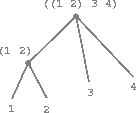

Structure and Interpretation of Computer Programs
The LFE Edition
Harold Abelson and Gerald Jay Sussman with Julie Sussman
foreword by Alan J. Perlis
LFE translation by Duncan McGreggor
First Edition
The first edition of this book was comprised of a series of texts written by faculty of the Electrical Engineering and Computer Science Department at the Massachusetts Institute of Technology. It was edited and produced by The MIT Press under a joint production-distribution arrangement with the McGraw-Hill Book Company.
Ordering Information
North America
Text orders should be addressed to the McGraw-Hill Book Company.
All other orders should be addressed to The MIT Press.
Outside North America
All orders should be addressed to The MIT Press or its local distributor.
© 1996 by The Massachusetts Institute of Technology
Second Edition
All rights reserved. No part of this book may be reproduced in any form or by any electronic or mechanical means (including photocopying, recording, or information storage and retrieval) without permission in writing from the publisher.

This work is licensed under a Creative Commons Attribution-Noncommercial 3.0 Unported License.
This book was set by the authors using the LATEX typesetting system and was printed and bound in the United States of America.
Library of Congress Cataloging-in-Publication Data
Abelson, Harold
Structure and interpretation of computer programs /
Harold Abelson and Gerald Jay Sussman, with Julie Sussman. --
2nd ed.
p. cm. -- (Electrical engineering and computer science series)
Includes bibliographical references and index.
ISBN 0-262-01153-0 (MIT Press hardcover)
ISBN 0-262-51087-1 (MIT Press paperback)
ISBN 0-07-000484-6 (McGraw-Hill hardcover)
1. Electronic digital computers -- Programming.
2. LISP (Computer program language)
I. Sussman, Gerald Jay.
II. Sussman, Julie.
III. Title.
IV. Series: MIT electrical engineering and
computer science series.
QA76.6.A255 1996
005.13'3 -- dc20 96-17756
Fourth printing, 1999
LFE Edition
© 2015-2020 by Duncan McGreggor
This work is licensed under a Creative Commons Attribution-Noncommercial 3.0 Unported License.
About
This Gitbook (available here) is a work in progress, converting the MIT classic Structure and Interpretation of Computer Programs to Lisp Flavored Erlang. We are forever indebted to Harold Abelson, Gerald Jay Sussman, and Julie Sussman for their labor of love and intelligence. Needless to say, our gratitude also extends to the MIT press for their generosity in licensing this work as Creative Commons.
Contributing
This is a huge project, and we can use your help! Got an idea? Found a bug? Let us know!.
Building the Book
To build a local copy of the book, install the dependencies:
$ make deps
On Linux, you'll need to run that with sudo.
Then install the gitbook modules:
$ make setup
Finally, build the book:
$ make book
Dedication
This book is dedicated, in respect and admiration, to the spirit that lives in the computer.
I think that it's extraordinarily important that we in computer science keep fun in computing. When it started out, it was an awful lot of fun. Of course, the paying customers got shafted every now and then, and after a while we began to take their complaints seriously. We began to feel as if we really were responsible for the successful, error-free perfect use of these machines. I don't think we are. I think we're responsible for stretching them, setting them off in new directions, and keeping fun in the house. I hope the field of computer science never loses its sense of fun. Above all, I hope we don't become missionaries. Don't feel as if you're Bible salesmen. The world has too many of those already. What you know about computing other people will learn. Don't feel as if the key to successful computing is only in your hands. What's in your hands, I think and hope, is intelligence: the ability to see the machine as more than when you were first led up to it, that you can make it more.
-- Alan J. Perlis (April 1, 1922 - February 7, 1990)
Foreword
Educators, generals, dieticians, psychologists, and parents program. Armies, students, and some societies are programmed. An assault on large problems employs a succession of programs, most of which spring into existence en route. These programs are rife with issues that appear to be particular to the problem at hand. To appreciate programming as an intellectual activity in its own right you must turn to computer programming; you must read and write computer programs -- many of them. It doesn't matter much what the programs are about or what applications they serve. What does matter is how well they perform and how smoothly they fit with other programs in the creation of still greater programs. The programmer must seek both perfection of part and adequacy of collection. In this book the use of "program" is focused on the creation, execution, and study of programs written in a dialect of Lisp for execution on a digital computer. Using Lisp we restrict or limit not what we may program, but only the notation for our program descriptions.
Our traffic with the subject matter of this book involves us with three foci of phenomena: the human mind, collections of computer programs, and the computer. Every computer program is a model, hatched in the mind, of a real or mental process. These processes, arising from human experience and thought, are huge in number, intricate in detail, and at any time only partially understood. They are modeled to our permanent satisfaction rarely by our computer programs. Thus even though our programs are carefully handcrafted discrete collections of symbols, mosaics of interlocking functions, they continually evolve: we change them as our perception of the model deepens, enlarges, generalizes until the model ultimately attains a metastable place within still another model with which we struggle. The source of the exhilaration associated with computer programming is the continual unfolding within the mind and on the computer of mechanisms expressed as programs and the explosion of perception they generate. If art interprets our dreams, the computer executes them in the guise of programs!
For all its power, the computer is a harsh taskmaster. Its programs must be correct, and what we wish to say must be said accurately in every detail. As in every other symbolic activity, we become convinced of program truth through argument. Lisp itself can be assigned a semantics (another model, by the way), and if a program's function can be specified, say, in the predicate calculus, the proof methods of logic can be used to make an acceptable correctness argument. Unfortunately, as programs get large and complicated, as they almost always do, the adequacy, consistency, and correctness of the specifications themselves become open to doubt, so that complete formal arguments of correctness seldom accompany large programs. Since large programs grow from small ones, it is crucial that we develop an arsenal of standard program structures of whose correctness we have become sure -- we call them idioms -- and learn to combine them into larger structures using organizational techniques of proven value. These techniques are treated at length in this book, and understanding them is essential to participation in the Promethean enterprise called programming. More than anything else, the uncovering and mastery of powerful organizational techniques accelerates our ability to create large, significant programs. Conversely, since writing large programs is very taxing, we are stimulated to invent new methods of reducing the mass of function and detail to be fitted into large programs.
Unlike programs, computers must obey the laws of physics. If they wish to perform rapidly -- a few nanoseconds per state change -- they must transmit electrons only small distances (at most 1 1/2 feet). The heat generated by the huge number of devices so concentrated in space has to be removed. An exquisite engineering art has been developed balancing between multiplicity of function and density of devices. In any event, hardware always operates at a level more primitive than that at which we care to program. The processes that transform our Lisp programs to "machine" programs are themselves abstract models which we program. Their study and creation give a great deal of insight into the organizational programs associated with programming arbitrary models. Of course the computer itself can be so modeled. Think of it: the behavior of the smallest physical switching element is modeled by quantum mechanics described by differential equations whose detailed behavior is captured by numerical approximations represented in computer programs executing on computers composed of ...!
It is not merely a matter of tactical convenience to separately identify the three foci. Even though, as they say, it's all in the head, this logical separation induces an acceleration of symbolic traffic between these foci whose richness, vitality, and potential is exceeded in human experience only by the evolution of life itself. At best, relationships between the foci are metastable. The computers are never large enough or fast enough. Each breakthrough in hardware technology leads to more massive programming enterprises, new organizational principles, and an enrichment of abstract models. Every reader should ask himself periodically "Toward what end, toward what end?" -- but do not ask it too often lest you pass up the fun of programming for the constipation of bittersweet philosophy.
Among the programs we write, some (but never enough) perform a precise mathematical function such as sorting or finding the maximum of a sequence of numbers, determining primality, or finding the square root. We call such programs algorithms, and a great deal is known of their optimal behavior, particularly with respect to the two important parameters of execution time and data storage requirements. A programmer should acquire good algorithms and idioms. Even though some programs resist precise specifications, it is the responsibility of the programmer to estimate, and always to attempt to improve, their performance.
Lisp is a survivor, having been in use for about a quarter of a century. Among the active programming languages only Fortran has had a longer life. Both languages have supported the programming needs of important areas of application, Fortran for scientific and engineering computation and Lisp for artificial intelligence. These two areas continue to be important, and their programmers are so devoted to these two languages that Lisp and Fortran may well continue in active use for at least another quarter-century.
Lisp changes. The Scheme dialect used in this text has evolved from the original Lisp and differs from the latter in several important ways, including static scoping for variable binding and permitting functions to yield functions as values. In its semantic structure Scheme is as closely akin to Algol 60 as to early Lisps. Algol 60, never to be an active language again, lives on in the genes of Scheme and Pascal. It would be difficult to find two languages that are the communicating coin of two more different cultures than those gathered around these two languages. Pascal is for building pyramids -- imposing, breathtaking, static structures built by armies pushing heavy blocks into place. Lisp is for building organisms -- imposing, breathtaking, dynamic structures built by squads fitting fluctuating myriads of simpler organisms into place. The organizing principles used are the same in both cases, except for one extraordinarily important difference: The discretionary exportable functionality entrusted to the individual Lisp programmer is more than an order of magnitude greater than that to be found within Pascal enterprises. Lisp programs inflate libraries with functions whose utility transcends the application that produced them. The list, Lisp's native data structure, is largely responsible for such growth of utility. The simple structure and natural applicability of lists are reflected in functions that are amazingly nonidiosyncratic. In Pascal the plethora of declarable data structures induces a specialization within functions that inhibits and penalizes casual cooperation. It is better to have 100 functions operate on one data structure than to have 10 functions operate on 10 data structures. As a result the pyramid must stand unchanged for a millennium; the organism must evolve or perish.
To illustrate this difference, compare the treatment of material and exercises within this book with that in any first-course text using Pascal. Do not labor under the illusion that this is a text digestible at MIT only, peculiar to the breed found there. It is precisely what a serious book on programming Lisp must be, no matter who the student is or where it is used.
Note that this is a text about programming, unlike most Lisp books, which are used as a preparation for work in artificial intelligence. After all, the critical programming concerns of software engineering and artificial intelligence tend to coalesce as the systems under investigation become larger. This explains why there is such growing interest in Lisp outside of artificial intelligence.
As one would expect from its goals, artificial intelligence research generates many significant programming problems. In other programming cultures this spate of problems spawns new languages. Indeed, in any very large programming task a useful organizing principle is to control and isolate traffic within the task modules via the invention of language. These languages tend to become less primitive as one approaches the boundaries of the system where we humans interact most often. As a result, such systems contain complex language-processing functions replicated many times. Lisp has such a simple syntax and semantics that parsing can be treated as an elementary task. Thus parsing technology plays almost no role in Lisp programs, and the construction of language processors is rarely an impediment to the rate of growth and change of large Lisp systems. Finally, it is this very simplicity of syntax and semantics that is responsible for the burden and freedom borne by all Lisp programmers. No Lisp program of any size beyond a few lines can be written without being saturated with discretionary functions. Invent and fit; have fits and reinvent! We toast the Lisp programmer who pens his thoughts within nests of parentheses.
Alan J. Perlis
New Haven, Connecticut
Foreword to the LFE Edition
[Forthcoming]
Preface to the LFE Edition
Unbound creativity is the power and the weakness of the Force. The Art of Programming Well lies in forging a balance between endless possibilities and strict discipline.
--Cristina Videira Lopes, "Jedi Masters", on the history of Lisp and programming
In the spirit of Alan Perlis' "keeping fun in computing" and Cristina Lopes' entreaty for creativity bounded by the practical, the preface to the LFE edition of this book will cover the following topics:
- A Tale of Lisp Not Often Told
- The Origins of Erlang and LFE
- The Place of Lisp in the 21st Century
- Changes from the Second Edition
- Source Code for This Book
Beginnings are important. They may not fully dictate the trajectory of their antecedents, yet it does seem they do have a profound impact on the character of their effects. For the human observer, beginnings are also a source of inspiration: good beginnings lend a strength of purpose, the possibility of greater good. The story of Lisp has a good beginning -- several of them, in fact -- closely tied to the theories of numbers, mathematical logic, functions and types as well as that of computing itself.
At their root, the histories of programming languages spring from, on one hand, the practical considerations of engineering and developer experience, and on the other hand, the principle of computability. This, in turn, ultimately traces its beginnings to the fundamental concepts of arithmetic and mathematical logic: what are numbers and how to we define them rigorously? These questions were asked and considered -- sometimes from a fairly vague philosophical perspective -- by great minds such as Leibniz (later 1600s; drafts published posthumously), Boole (1847), Grassmann (1861), Peirce (1881), Frege (1884), and Dedekind (1888). It was the Italian mathematician Giuseppe Peano, though, who in 1889 finally identified and distilled the essence of these explorations in terms that were more precisely formulated than those of his peers or intellectual forebearers. These were subsequently elaborated by successive generations of mathematicians prior to the advent of "high-level" programming languages in the 1950s.
Histories are complicated; complete ones are impossible and readable ones are necessarily limited and lacking in details. In our particular case, there is a complex lineage of mathematics leading to Lisp. However, for the sake of clarity and due to this being a preface and not a book in its own right, the mathematical and computational history leading to Lisp has been greatly simplified below. The four dominant historical figures discussed provide distinct insights and represent corresponding themes as mathematics evolved unwittingly toward a support for computing. Due to the limitation of scope, however, it might be better to view these as archetypes of mathematical discovery rather than historical figures one might come to know when reading a full history. Of the many themes one could discern and extract from these great minds, we focus on the following:
- Understanding and defining the underpinnings of arithmetic and logic ("What are numbers? What is counting?")
- Attempting to formally unify all of mathematics in a consistent framework of logic ("Can I express all of math in discrete logical assertions and statements?")
- Formally defining algorithms and computability ("Is there a procedure that can take any precise mathematical statement and decide whether the statement is true or false?")
- Creating the means by which symbolic computation and artificial reasoning could be made manifest ("Can we make machines solve problems that are usually considered to require intelligence?")1
Each major topic above depended -- in one form or another -- upon the preceding topic, and the four famous mathematicans listed below embodied each of these themes. Small excerpts from their lives and work are shared as believed to have impacted the course of events that lead to Lisp's inception.
An almost word-for-word quote from John McCarthy's January 1962 submission in the quarterly progress report for MIT's RLE, titled XXI. ARTIFICIAL INTELLIGENCE, page 189 on the original hard copy. The table of contents for the original is available here.
Giuseppe Peano

Figure P.1: Giuseppe Peano, circa 1910.
Giuseppe Peano was born 100 years before Lisp, in August of 1858 at his family's farmhouse in the north of Italy. At a young age he was recognized as having an exceptionally quick mind and, through the favor of an uncle, obtained a good early education in Turin where he not only stayed for university, but for the entirety of his career.
After graduating from the University of Turin with high honors, Peano was asked to stay on, providing assistance with the teaching responsibilities of the mathematics department. Within a few years, he began tackling problems in logic and exploring the foundations of the formal philosophy of mathematics. During this time, Peano introduced the world to his now-famous axioms.1, 2 In particular, the fifth axiom is considered the first definition of primitive recursive functions.3 In this same work Peano described the function of a variable with explicit recursive substituion.4 Both of these served as a great source of inspiration and insight to later generations.
From this point into the beginning of the 20th century, Peano was considered one of the leading figures in mathematical logic, alongside Frege and Russell. This was due to Peano's work on and advocacy for a unified formulation of mathematics cast in logic. Entitled Formulario Mathematico, it was first published in 1895, with multiple editions released between then and the last edition in 1908. Each subsequent edition was essentially a new work in its own right, with more finely honed formulas, presentation, and explanation wherein he shared his symbols for logic, a new mathematical syntax.
In 1897 at the First International Congress of Mathematicians in Zurich, Peano co-chaired the track on "Arithmetic and Algebra" and was invited to deliver a keynote on logic. Between that event and its successor in 1900, he published more of his work on the Formulario. By these and other activities, when Peano arrived in Paris for the international congresses of both mathematics and philosophy, he was at the peak of his career in general, and the height of his development of mathematical logic in particular. At this event Peano along with Burali-Forti, Padoa, Pieri, Vailati, and Vacca were said to have been "supreme" and to have "absolutely dominated" the discussions in the field of the philosophy of sciences.5
Bertrand Russell was present at the first of these congresses and was so completely taken with the efficacy of Peano's approach to logic that upon receiving from Peano his collected works, he returned home to study them instead of remaining in Paris for the Mathematical Congress. A few months later he wrote to Peano, attaching a manuscript detailing the assessments he had been able to make, thanks to his recent and thorough study of Peano's works. Peano responded to him the following March congratulating Russell on "the facility and precision" with which he managed Peano's logical symbols; Peano published Russell's paper that July. However, this was only the beginning for Russell: the baton had been firmly passed to him and the advance towards a theory of computation had taken its next step.
This was in Peano's book of 1889 "Arithmetices principia, nova methodo exposita" (in English, The principles of arithmetic, presented by a new method).
In addition it was in this same period of time that Peano started creating various logic and set notations that are still in use today.
See Robert I. Soare's 1995 paper entitled "Computability and Recursion", page 5.
See the 2006 paper "History of Lambda-calculus and Combinatory Logic" by Felice Cardone and J. Roger Hindley, page 2.
See page 91 of Hubert C. Kennedy's 1980 hardcover edition of "Peano: Life and Works of Giuseppe Peano", Volume 4 of the "Studies in the History of Modern Science."
Bertrand Russell
Figure P.2: Bertrand Russell, 1958.
Bertrand Russell was born in 1872 into a family of the British aristocracy. His early life was colored with tragedy: by the time he was six years old, he had lost his mother, sister, father, and grandfather. He was a deeply pensive child naturally inclined towards philosophical topics, and by 1883 -- at the age of 11 -- he was set upon the path for the first half of his life. It was at this time that his brother was tutoring him on Euclid's geometry:
"This was one of the great events of my life, as dazzling as first love. I had not imagined that there was anything so delicious in the world. After I had learned the fifth proposition, my brother told me that it was generally considered difficult, but I had found no difficulty whatever. This was the first time it had dawned upon me that I might have some intelligence. From that moment until Whitehead and I finished Principia ... mathematics was my chief interest, and my chief source of happiness."1
Russell continues in his biography, sharing how this time also provided the initial impetus toward the Principia Mathematica:
"I had been told that Euclid proved things, and was much disappointed that he started with axioms. At first I refused to accept them unless my brother could offer me some reason for doing so, but he said: 'If you don't accept them we cannot go on', and as I wished to go on, I reluctantly admitted them pro tem. The doubt as to the premisses of mathematics which I felt at that moment remained with me, and determined the course of my subsequent work."
In 1900, Russell attended the First International Conference of Philosophy where he had been invited to read a paper. In his autobiography, he describes this fateful event:
"The Congress was a turning point in my intellectual life, because I there met Peano. I already knew him by name and had seen some of his work, but had not taken the trouble to master his notation. In discussions at the Congress I observed that he was more precise than anyone else, and that he invariably got the better of any argument upon which he embarked. As the days went by, I decided that this must be owing to his mathematical logic. I therefore got him to give me all his works, and as soon as the Congress was over I retired to Fernhurst to study quietly every word written by him and his disciples. It became clear to me that his notation afforded an instrument of logical analysis such as I had been seeking for years, and that by studying him I was acquiring a new powerful technique for the work that I had long wanted to do. By the end of August I had become completely familiar with all the work of his school. I spent September in extending his methods to the logic of relations. It seemed to me in retrospect that, through that month, every day was warm and sunny. The Whiteheads stayed with us at Fernhurst, and I explained my new ideas to him. Every evening the discussion ended with some difficulty, and every morning I found that the difficulty of the previous evening had solved itself while I slept. The time was one of intellectual intoxication. My sensations resembled those one has after climbing a mountain in a mist when, on reaching the summit, the mist suddenly clears, and the country becomes visible for forty miles in every direction. For years I had been endeavoring to analyse the fundamental notions of mathematics, such as order and cardinal numbers. Suddenly, in the space of a few weeks, I discovered what appeared to be definitive answers to the problems which had baffled me for years. And in the course of discovering these answers, I was introducing a new mathematical technique, by which regions formerly abandoned to the vaguenesses of philosophers were conquered for the precision of exact formulae. Intellectually, the month of September 1900 was the highest point of my life."2
Russell sent an early edition of the Principia to Peano after working on it for three years. A biographer of Peano noted that he "immediately recognized it's value ... and wrote that the book 'marks an epoch in the field of philosophy of mathematics.'" 3 Over the course of remaining decade, Russell and Whitehead continued to collaborate on the Principia, a work that ultimately inspired Gödel's incompleteness theorems and Church's $$\lambda$$-calculus.
The 1998 reissued hardback "Autobiography" of Bertrand Russell, pages 30 and 31.
Ibid., page 147.
Kennedy, page 105-106.
Alonzo Church
Figure P.3: Alonzo Church, 1943.
Alonzo Church was born in Washington, D.C. in 1903.1 His great-grandfather (originally from Vermont) was not only a professor of mathematics and astronomy at the University of Georgia, but later became its president.2 Church graduated from a Connecticut prep-school in 1920 and then enrolled in Princeton to study mathematics. He published his first paper as an undergraduate and then continued at Princeton, earning his Ph.D. in just three years.
While a graduate student, Church was hit by a trolley car and spent time in a hospital where he met Julia Kuczinski3 -- they were married a year later and remained inseparable until her death, 51 years later. Church had a reputation for being a bit quirky: he never drove a car or typed; he was extremely neat and fastidious; he walked everywhere and often hummed to himself while he did so; he loved reading science fiction magazines;4 a nightowl, he often did his best work late at night. Though he had solitary work habits, his list of Ph.D. students is impressive, including the likes of Turing, Kleene, and Rosser.
Perhaps one of Church's more defining characteristics was his drive: he deliberately focused on prominent problems in mathematics and attacked them with great force of will. A few of the problems he had focused on in the early 1930s were:
- Known paradoxes entailed by Bertrand Russell's theory of types 5
- David Hilbert's Entscheidungsproblem, and
- The implications of Gödel's completeness theorem.
These were some of the most compelling challenges in mathematics at that time. All of them ended up meeting at the cross-roads of the λ‑calculus.
Church had started working on the λ‑calculus when attempting to address the Russell Paradox 6. However, it was not that goal toward which the λ‑calculus was ultimately applied. Instead, it became useful -- essential, even -- in his efforts to define what he called "calculability" and what is now more commonly referred to as computability.7 In this the λ‑calculus was an unparalleled success, allowing Church to solve the Entscheidungsproblem using the concept of recursive functions.
Syntactically, Church's λ‑notation made a significant improvement upon that found in the Principia Mathematica 8. Given the Principia phrase $$\phi x̂$$ and the λ‑calculus equivalent, $$\lambda x \phi x$$, one benefits from the use of the latter by virtue of the fact that it unambiguously states that the variable $$x$$ is bound by the term-forming operator $$\lambda$$. This innovation was necessary for Church's work and a powerful tool that was put to use by John McCarthy when he built the first programming language which used the λ‑calculus: Lisp.
The majority of the material for this section has been adapted from the Introduction to the Collected Works of Alonzo Church, MIT Press (not yet published).
This was when the University of Georgia was still called Franklin College.
She was there in training to become a nurse.
He would also write letters to the editors when the science fiction writers got their science wrong.
These complications were known and discussed by Russell himself at the time of Principia's publication.
See Russell's paradox.
"Computability" was the term which Turing used.
See the discussion of "Propositional Functions" in the section "The Notation in Principia Mathematica": http://plato.stanford.edu/entries/pm-notation/#4. Note that the section of the Principia Mathematica which they reference in that linked discussion on the Stanford site is at the beginning of "Section B: Theory of Apparent Variables" in the Principia.
John McCarthy

Figure P.4: John McCarthy, 1965.
John McCarthy was born in 1927, in the city of Boston. Due to difficulties finding work during the Great Depression, the family moved to New York, then finally settled in Los Angeles. Having established an early aptitude and proficiency in mathematics, McCarthy skipped two years of math upon his enrollment at Caltech. The year he received his undergraduate degree, he attended the 1948 Hixon Symposium on Cerebral Mechanisms in Behavior. The speakers at the symposium represented an intersection of mathematics, computation, and psychology. They were as follows:
- Professor Ward C. Halstead, University of Chicago
- Professor Heinrich Kluver, University of Chicago
- Professor Wolfgang Kohler , Swarthmore College
- Professor K. S. Lashley, Harvard University
- Dr. R. Lorente de No, Rockefeller Institute for Medical Research
- Professor Warren S. Mc Culloch, University of Illinois
- Dr. John von Neumann, Institute for Advanced Study
At the symposium John von Neumann presented his paper "The General and Logical Theory of Automata",1 after which McCarthy became intrigued with the idea of developing machines that could think as people do. McCarthy remained at Caltech for one year of grad school, but then pursed the remainder of his Ph.D. at Princeton, considered by him to be the greater institution for the study of mathematics. In discussions with an enthusiastic von Neumann at Princeton, McCarthy shared his ideas about interacting finite automata -- ideas inspired by von Neumann's talk at the Hixon Symposium.
After completing his Ph.D. dissertation, Claude Shannon invited McCarthy and his friend Marvin Minksy to work at Bell Labs in New Jersey for the summer. McCarthy and Shannon collaborated on assembling a volume of papers entitled "Automata Studies," thought ultimately a bit of a disappointment to McCarthy since so few submissions concerned the topic of his primary interest: machine intelligence. A few years later, he had the opportunity to address this by proposing a summer research project which he and the head of IBM's Information Research pitched to Shannon and Minksy. They agreed, and a year later held the first Artificial Intelligence workshop at the Dartmouth campus in New Hampshire.
It was here, thanks to Allen Newell and Herb Simon, that McCarthy was exposed to the idea of list processing for a "logical language" Newell and Simon were working on (later named IPL). McCarthy initially had high hopes for this effort but upon seeing that its implementation borrowed heavily from assembly, he gave up on it. That, in conjunction with his inability to gain any traction with the maintainers of FORTRAN for the support of recursion or conditionals, inspired him to create a language that suited his goals of exploring machine intelligence. With the seeds of Lisp sown in 1956, it was two more years before development of Lisp began. Two years later a special project was established to carry out this work under the auspices of the MIT Research Laboratory of Electronics which granted McCarthy and his team one room, one secretary, two programmers, a key punch and six grad students.2 The MIT AI project was founded and the work of creating Lisp was begun.
A transcript of the talk is available in Volume V of John von Neumann "Collected Works". The topics covered were as follows: 1. Preliminary Considerations; 2. Discussion of Certain Relevant Traits of Computing Machines; 3. Comparisons Between Computing Machines And Living Organisms; 4. The Future Logical Theory of Automata; 5. Principles of Digitalization; 6. Formal Neural Networks; and 7. The Concept of Complication and Self-Reproduction. The talk concluded with an intensive period of question and answer, also recorded in the above-mentioned volume.
Marvin Minsky and John McCarthy founded the MIT AI Lab together when McCarthy caught the acting head of the department, Jerome Wiesner, in the hallway and asked him permission to do it. Wiesner responded with "Well, what do you need?”. When McCarthy gave him the list, Wiesner added "How about 6 graduate students?" as the department had agreed to support six mathematics students, but had yet to find work for them. See On John McCarthy’s 80th Birthday, in Honor of his Contributions, page 3.
A Recap of Erlang's Genesis
Though the LFE edition of Structure and Interpretation of Computer Programs is a reworking of the Scheme original to LFE and while both version focus entirely upon Lisp, we would be remiss if a brief history of Erlang -- upon which LFE firmly rests -- was not covered as well. One of the most concise and informative sources of Erlang history is the paper that Joe Armstrong wrote1 for the third History of Programming Languages2 conference.
What evolved into Erlang started out as the simple task of "solving Ericsson's software problem." 3 Practically, this involved a series of initial experiments in programming simple telephony systems in a variety of languages. The results of this, namely as follows, fueled the next round of experiments:
- Small languages seemed better at succinctly addressing the problem space.
- The functional programming paradigm was appreciated, if sometimes viewed as awkward.
- Logic programming provided the most elegant solutions in the given problem space.
- Support for concurrency was viewed as essential.
Joe Armstrong's first attempts at Erlang were done in 1985 using the Smalltalk programming language. He switched away from this after Roger Skagervall observed that the logic Joe had developed was really just thinly veiled Prolog. The development of a robust systems programming language for telephony was further refined with advice from Mike Williams, already a veteran in programming concurrent systems. He said that for a concurrent programming language to be efficient it had to keep in mind three key things that dominated its problem space: 4
- The time needed to create a process
- The time required to perform a context switch between two processes
- The amount of time taken to copy a message from one process to another
Furthermore, Bjarne Däcker defined the following capabilities for a language to be useful when programming telecommunications switches:
- To handle high-concurrency
- To handle soft real-time
- To support non-local, distributed computing
- To enable hardware interaction
- To support very large scale software systems
- To support complex interactions
- To provide non-stop operation (on the order of years)
- To allow for system updates without downtime
- To provide high-nines reliability
- To provide fault-tolerance for both hardware and software
With these guiding principles, Erlang in its Prolog form emerged over the course of 1986 and 1987. Robert Virding joined Armstrong in this effort during this time period, 5 helping with such tasks as rewriting the initial prototype and improving overall concurrency performance.
See Armstrong's paper here.
HOPL III was held in San Diego, early June of 2007. From the perspective of LFE, it is interesting to note that each language comprising its essence have been covered at HOPL conferences: 1. HOPL I, 1978 John McCarthy presented "History of Lisp"; 2. HOPL II, 1993 Guy L. Steele, Jr. and Richard P. Gabriel presented "The Evolution of Lisp," a continuation of McCarthy's 1978 talk; 3. HOPL III, 2007 Joe Armstrong presented "A History of Erlang."
Armstrong 2007, page 3.
Ibid., page 2.
"Robert Virding and Joe Armstrong - The History of the Erlang Virtual Machine", Erlang Factory 2010, London.
The Inspiration for LFE
It wasn't until 2007 that, after 20 years of contributions to Erlang, that Robert Virding decided to start experimenting with a Lisp running on the Erlang VM. 1 Initially explored as a Lisp 1, Virding switched to separating the name spaces for functions and variables more like the Lisp 2 of Common Lisp, having determined that this was a better overall fit with the internals of the Erlang virtual machine. 2
After over 7 years of development, LFE now supports such features as:
- Non-hygienic macros
- Various forms borrowed from Scheme, Maclisp, and Common Lisp
- A REPL which allows for the definition of functions, records, and macros 3
- Immutable data
- Pattern matching
- Modules
- Functional programming paradigm
- Erlang data types
- Light-weight language processes
- Hot-loading of code on running systems
- 100% compatibility with Core Erlang and OTP
As to its own origins, Virding shared the following as the primary motivating factors: 4
- He was an "old Lisper" and was therefore quite interested in implementing a Lisp.
- He was curious as to what a Lisp on the Erlang VM would look like and how it would run. (It had always been a goal of his to make a Lisp which was specially designed for running on the Erlang VM and able to fully interact with Erlang/OTP.)
- He wanted to experiment with compiling a language from Core Erlang. 5
- He was looking for some interesting programming projects that were not too large to do in his spare time.
- He likes implementing languages.
- He also thought it would be a fun problem to solve: it was an open-ended problem with lots of interesting parts.
Once again, the spirit of exploration conspired with good, clean fun to bring something new and interesting into the world while at the same time reflecting a rich and varied history. On the one hand, LFE has a Lisp heritage stretching back through the $$\lambda$$-Calculus to Peano. On the other, it is a systems programming language benefiting from Prolog vestiges such as pattern-matching and list comprehensions. Hardened through industrial use, it rests upon a VM which powers 40% of the worlds telecommunications traffic. 6 This is a potentially powerful combination offering unique capabilities the distributed systems metaprogrammer.
Thread on the LFE mail list entitled LFE History
LFE also distinguishes between functions based on arity, thus it is regularly jokingly referred to as a Lisp 2+.
This is in stark contrast to the Erlang shell which does not allow the developer to define functions (except as anonymous ones assigned to a variable); Erlang also does not have Lisp-style macros.
He shared this information on the LFE mail list in response to a query regarding the inspiration for LFE. See the original thread.
Core Erlang had been adopted by the Erlang compiler in 2001. See Carlsson's paper from that year, "An introduction to Core Erlang", page 2.
This is something often quoted in Erlang marketing materials; the number is based upon the market share Ericsson has in deployed systems world-wide.
The Place of Lisp in the 21st Century
The ups-and-downs of Lisp since its inception in 1958 have been covered in various media since the late 1970s. While Lisp continues to have its supporters and detractors, one thing is abundantly clear: many of the characteristics initially touted as making Lisp unique and powerful are now shared by a vast majority of modern programming languages. By some, this is considered the greatest triumph of Lisp, a source of inspiration for much of modern computing. The inevitable question is then asked: what use is Lisp, more than 50 years after its creation, when the world of computing -- both research and industry -- are so vastly different from what they were in Lisp's early days?
The first answer usually given is one that requires very little thought: macros. There are numerous books written on this topic and we will not cover it further in this preface, but accept as a given that the support of Lisp-style macros in any programming language is a powerful tool. Once we get past the obvious answer, subtler ones come to the fore. For instance, the simplicity of the syntax and similarity to parenthetically grouped algebra expressions make for an easy programming introduction to students of a middle school age. This simplicity is also something offering great insights to experienced programmers. Alan Kay's famous quote of Lisp being the software equivalent of Maxwell's famous partial differential equations for classical electrodynamics1 derives its inspiration from this simplicity: one can fit the essence of the language in one's head or on a single sheet of paper.2
The education point is important: if we cannot teach the basics of a science or a branch of mathematics -- regardless of how profound it may be -- it has ceased to become a science and should at that point be considered a superstition or cargo cult, with its practitioners engaged in a great deal of activity (or even lucrative commerce) but having no understanding of the principles which form the basis of their work. However, to be a compelling focus of study, the value of Lisp in the 21st century most hold more than simply the promise of clarity and the means by which one might create domain-specific languages. To be genuinely pertinent, it must reach beyond the past and the present to provide keys to undiscovered doors for each new generation of intrepid programmers.
And here the answer arrives, not as some astounding epiphany, but again in humble simplicity: Lisp's fun and its beauty rest not only in its syntactic elegance but in its power of expression. This is specifically important for the adventurer: if you want to create something new, explore some new programmatical territory, you need tools at your fingertips which will allow you to do so flexibly and quickly, with as little overhead as possible. Otherwise the moment of inspiration can be to quickly lost, the creative process swallowed in a mire too heavy with infrastructure and process. By putting the power of Lisps into the hands of each generation's aspiring programmers, we are ensuring that they have what is necessary to accomplish feats which might seem miraculous to us should we see them now -- as genuinely new ideas often appear (when appreciated). A world that sees the rise of quantum computing or the molecular programming of nano-scale machines or as yet undreamt technological capabilities, will need programmers who have the ability to iterate quickly and try out new ideas, easily able to see that which should be abandoned and that which should be taken up. This is especially important for the survival of free software: as long as our societies are able to produce languages, software, and systems which individuals or small groups may attain understanding and mastery over, software freedom will prevail. Systems that are so complex as to require an industry to manage them are no longer within the domain of motivated and curious individuals, but rather that of organizations with sufficient capital to maintain the necessary infrastructure.
Thus, as we point our technological society towards its future with each action we take, as individuals and as a group, we have a responsibility to maintain the tools which will ensure the freedom of future generations, the basic freedom of the tool-maker, the hacker, the artist, and the poet. Lisp is not the only answer to this particular need, but it has shown its strengths in this regard over the past 50 years, and if the last 10 years of re-discovery and innovation in the world of programming is any indication, Lisp is alive and well and will likely be with us for a long time to come.
And there will be even more fun to be had by all.
See the ACM-hosted interview with Alan Kay.
Or, as the case may be, the lower $$\frac{2}{3}$$rds of a single page.
Notes on Changes from the Original
The original text of Structure and Interpretation of Computer Programs was published in the 80s, but has material in it preceding even that time, dating back to courses taught at MIT in the 60s. Though the essence of what was taught in those lecture halls -- and with the original SICP text -- remains just as relevant today, much context has changed in the field of computing since then. As such, some changes in a new edition are to be expected.
Furthermore, this edition of SICP is an adaptation for a different programming language -- though still a Lisp -- whose syntax differs in varying degrees. More than syntax, though, LFE is built upon a very different VM, one whose focus is on such concerns as fault-tolerance, massive scale, and reliability.
As such, we have taken liberties in our edition of SICP, hopefully with little to no impact on its essence. These liberties include the following:
- The Lisp-2 syntax of LFE is used instead of the Lisp-1 syntax of a Scheme.
- As an extension of that first point, features such as pattern matching in function heads, guards, multi-arity functions, etc., are used extensively, often leading to more concise functions that their original, Scheme counterparts.
- When pertinent, features from LFE and Erlang are introduced in conjunction with the subject matter of the original text.
- Very rarely some of the original text or footnotes might be omitted when not at all applicable to LFE.
- LFE doesn't support nested
defuns like Scheme supports nesteddefines;fletandflectrecare used instead. However, as a result, these are introduced beforelet. This is awkward, but not disastrous. - The LFE Edition uses LaTeX, and as such, equations are much easier to read.
- Updating examples to modern, accepted forms (e.g., the Ackermann function).
- Exercises are broken out into their own sections (while preserving their original order and placement in the chapters).
Some of the terminology in the text has also been changed to maintain consistency with that used by the Erlang and LFE community. Most prominently, readers of the original text will notice that we do not use the term "procedure" but have instead opted for the more common term "function."
Obtaining the Book and Related Code
The source code for the LFE edition of this book uses the same license as the original: Creative Commons Attribution-Noncommercial 3.0 Unported License.
Book Source
There are two related sources available for this book:
- The original text for the second edition is available on the MIT Press site.
- The source code for the LFE edition (mostly Markdown) is available on Github.
You may obtain a copy of the source code via git:
$ git clone https://github.com/lfe/sicp.git
or direct download: https://github.com/lfe/sicp/archive/master.zip.
Code Used in the Book
Each chapter of this book defines functions and uses code from the previous chapters. The interactive LFE REPL sessions are saved as files in the book repository. They are available in each chapter directory as code.lfe.
Running the Code in the Book
To follow along in each chapter or to run the code that has been provided, you will need the following:
- A recent version of Erlang (the code in this book was tested with Erlang 17.4)
- LFE
The download and installation of Erlang is not covered in this book; information for that is available from many other sources with the kind help of your favourite Internet search engine.
Getting and Compiling LFE
You may obtain LFE via git, creating a subdirectory in the sicp directory:
cd sicp
git clone https://github.com/rvirding/lfe.git
or direct download: https://github.com/rvirding/lfe/archive/develop.zip. If you use the direct download method, move and rename the unzipped directory to match the git clone method:
cd sicp
unzip ~/Downloads/lfe-develop.zip
mv lfe-develop ./lfe
Now you can compile LFE, start the REPL, and load some code (you can safely ignore compiler warnings):
cd lfe
make
cd ../
./lfe/bin/lfe
Loading the Chapter Code
Erlang/OTP 17 [erts-6.3] [source] [64-bit] [smp:4:4] ...
LFE Shell V6.3 (abort with ^G)
> (run "ch1/code.lfe")
Loading Chapter 1 code ...
Chapter 1 loaded.
ok
Quick check to make sure that everything loaded as expected:
> (square 2)
4
Preface to the Second Edition
Is it possible that software is not like anything else, that it is meant to be discarded: that the whole point is to always see it as a soap bubble?
-- Alan J. Perlis
The material in this book has been the basis of MIT's entry-level computer science subject since 1980. We had been teaching this material for four years when the first edition was published, and twelve more years have elapsed until the appearance of this second edition. We are pleased that our work has been widely adopted and incorporated into other texts. We have seen our students take the ideas and programs in this book and build them in as the core of new computer systems and languages. In literal realization of an ancient Talmudic pun, our students have become our builders. We are lucky to have such capable students and such accomplished builders.
In preparing this edition, we have incorporated hundreds of clarifications suggested by our own teaching experience and the comments of colleagues at MIT and elsewhere. We have redesigned most of the major programming systems in the book, including the generic-arithmetic system, the interpreters, the register-machine simulator, and the compiler; and we have rewritten all the program examples to ensure that any Scheme implementation conforming to the IEEE Scheme standard (IEEE 1990) will be able to run the code.
This edition emphasizes several new themes. The most important of these is the central role played by different approaches to dealing with time in computational models: objects with state, concurrent programming, functional programming, lazy evaluation, and nondeterministic programming. We have included new sections on concurrency and nondeterminism, and we have tried to integrate this theme throughout the book.
The first edition of the book closely followed the syllabus of our MIT one-semester subject. With all the new material in the second edition, it will not be possible to cover everything in a single semester, so the instructor will have to pick and choose. In our own teaching, we sometimes skip the section on logic programming (section 13.4, Logic Programming), we have students use the register-machine simulator but we do not cover its implementation (section 14.2, A Register-Machine Simulator), and we give only a cursory overview of the compiler (section 14.5, Compilation). Even so, this is still an intense course. Some instructors may wish to cover only the first three or four chapters, leaving the other material for subsequent courses.
The World-Wide-Web site http://www-mitpress.mit.edu/sicp provides support for users of this book. This includes programs from the book, sample programming assignments, supplementary materials, and downloadable implementations of the Scheme dialect of Lisp.
Preface to the First Edition
"A computer is like a violin. You can imagine a novice trying first a phonograph and then a violin. The latter, he says, sounds terrible. That is the argument we have heard from our humanists and most of our computer scientists. Computer programs are good, they say, for particular purposes, but they aren't flexible. Neither is a violin, or a typewriter, until you learn how to use it."
-- Marvin Minsky, "Why Programming Is a Good Medium for Expressing Poorly-Understood and Sloppily-Formulated Ideas"
"The Structure and Interpretation of Computer Programs" is the entry-level subject in computer science at the Massachusetts Institute of Technology. It is required of all students at MIT who major in electrical engineering or in computer science, as one-fourth of the "common core curriculum," which also includes two subjects on circuits and linear systems and a subject on the design of digital systems. We have been involved in the development of this subject since 1978, and we have taught this material in its present form since the fall of 1980 to between 600 and 700 students each year. Most of these students have had little or no prior formal training in computation, although many have played with computers a bit and a few have had extensive programming or hardware-design experience.
Our design of this introductory computer-science subject reflects two major concerns. First, we want to establish the idea that a computer language is not just a way of getting a computer to perform operations but rather that it is a novel formal medium for expressing ideas about methodology. Thus, programs must be written for people to read, and only incidentally for machines to execute. Second, we believe that the essential material to be addressed by a subject at this level is not the syntax of particular programming-language constructs, nor clever algorithms for computing particular functions efficiently, nor even the mathematical analysis of algorithms and the foundations of computing, but rather the techniques used to control the intellectual complexity of large software systems.
Our goal is that students who complete this subject should have a good feel for the elements of style and the aesthetics of programming. They should have command of the major techniques for controlling complexity in a large system. They should be capable of reading a 50-page-long program, if it is written in an exemplary style. They should know what not to read, and what they need not understand at any moment. They should feel secure about modifying a program, retaining the spirit and style of the original author.
These skills are by no means unique to computer programming. The techniques we teach and draw upon are common to all of engineering design. We control complexity by building abstractions that hide details when appropriate. We control complexity by establishing conventional interfaces that enable us to construct systems by combining standard, well-understood pieces in a ``mix and match'' way. We control complexity by establishing new languages for describing a design, each of which emphasizes particular aspects of the design and deemphasizes others.
Underlying our approach to this subject is our conviction that "computer science" is not a science and that its significance has little to do with computers. The computer revolution is a revolution in the way we think and in the way we express what we think. The essence of this change is the emergence of what might best be called procedural epistemology -- the study of the structure of knowledge from an imperative point of view, as opposed to the more declarative point of view taken by classical mathematical subjects. Mathematics provides a framework for dealing precisely with notions of "what is." Computation provides a framework for dealing precisely with notions of "how to."
In teaching our material we use a dialect of the programming language Lisp. We never formally teach the language, because we don't have to. We just use it, and students pick it up in a few days. This is one great advantage of Lisp-like languages: They have very few ways of forming compound expressions, and almost no syntactic structure. All of the formal properties can be covered in an hour, like the rules of chess. After a short time we forget about syntactic details of the language (because there are none) and get on with the real issues -- figuring out what we want to compute, how we will decompose problems into manageable parts, and how we will work on the parts. Another advantage of Lisp is that it supports (but does not enforce) more of the large-scale strategies for modular decomposition of programs than any other language we know. We can make procedural and data abstractions, we can use higher-order functions to capture common patterns of usage, we can model local state using assignment and data mutation, we can link parts of a program with streams and delayed evaluation, and we can easily implement embedded languages. All of this is embedded in an interactive environment with excellent support for incremental program design, construction, testing, and debugging. We thank all the generations of Lisp wizards, starting with John McCarthy, who have fashioned a fine tool of unprecedented power and elegance.
Scheme, the dialect of Lisp that we use, is an attempt to bring together the power and elegance of Lisp and Algol. From Lisp we take the metalinguistic power that derives from the simple syntax, the uniform representation of programs as data objects, and the garbage-collected heap-allocated data. From Algol we take lexical scoping and block structure, which are gifts from the pioneers of programming-language design who were on the Algol committee. We wish to cite John Reynolds and Peter Landin for their insights into the relationship of Church's lambda calculus to the structure of programming languages. We also recognize our debt to the mathematicians who scouted out this territory decades before computers appeared on the scene. These pioneers include Alonzo Church, Barkley Rosser, Stephen Kleene, and Haskell Curry.
Acknowledgments
We would like to thank the many people who have helped us develop this book and this curriculum.
Our subject is a clear intellectual descendant of "6.231," a wonderful subject on programming linguistics and the lambda calculus taught at MIT in the late 1960s by Jack Wozencraft and Arthur Evans, Jr.
We owe a great debt to Robert Fano, who reorganized MIT's introductory curriculum in electrical engineering and computer science to emphasize the principles of engineering design. He led us in starting out on this enterprise and wrote the first set of subject notes from which this book evolved.
Much of the style and aesthetics of programming that we try to teach were developed in conjunction with Guy Lewis Steele Jr., who collaborated with Gerald Jay Sussman in the initial development of the Scheme language. In addition, David Turner, Peter Henderson, Dan Friedman, David Wise, and Will Clinger have taught us many of the techniques of the functional programming community that appear in this book.
Joel Moses taught us about structuring large systems. His experience with the Macsyma system for symbolic computation provided the insight that one should avoid complexities of control and concentrate on organizing the data to reflect the real structure of the world being modeled.
Marvin Minsky and Seymour Papert formed many of our attitudes about programming and its place in our intellectual lives. To them we owe the understanding that computation provides a means of expression for exploring ideas that would otherwise be too complex to deal with precisely. They emphasize that a student's ability to write and modify programs provides a powerful medium in which exploring becomes a natural activity.
We also strongly agree with Alan Perlis that programming is lots of fun and we had better be careful to support the joy of programming. Part of this joy derives from observing great masters at work. We are fortunate to have been apprentice programmers at the feet of Bill Gosper and Richard Greenblatt.
It is difficult to identify all the people who have contributed to the development of our curriculum. We thank all the lecturers, recitation instructors, and tutors who have worked with us over the past fifteen years and put in many extra hours on our subject, especially Bill Siebert, Albert Meyer, Joe Stoy, Randy Davis, Louis Braida, Eric Grimson, Rod Brooks, Lynn Stein, and Peter Szolovits. We would like to specially acknowledge the outstanding teaching contributions of Franklyn Turbak, now at Wellesley; his work in undergraduate instruction set a standard that we can all aspire to. We are grateful to Jerry Saltzer and Jim Miller for helping us grapple with the mysteries of concurrency, and to Peter Szolovits and David McAllester for their contributions to the exposition of nondeterministic evaluation in chapter 4.
Many people have put in significant effort presenting this material at other universities. Some of the people we have worked closely with are Jacob Katzenelson at the Technion, Hardy Mayer at the University of California at Irvine, Joe Stoy at Oxford, Elisha Sacks at Purdue, and Jan Komorowski at the Norwegian University of Science and Technology. We are exceptionally proud of our colleagues who have received major teaching awards for their adaptations of this subject at other universities, including Kenneth Yip at Yale, Brian Harvey at the University of California at Berkeley, and Dan Huttenlocher at Cornell.
Al Moyé arranged for us to teach this material to engineers at Hewlett-Packard, and for the production of videotapes of these lectures. We would like to thank the talented instructors -- in particular Jim Miller, Bill Siebert, and Mike Eisenberg -- who have designed continuing education courses incorporating these tapes and taught them at universities and industry all over the world.
Many educators in other countries have put in significant work translating the first edition. Michel Briand, Pierre Chamard, and André Pic produced a French edition; Susanne Daniels-Herold produced a German edition; and Fumio Motoyoshi produced a Japanese edition. We do not know who produced the Chinese edition, but we consider it an honor to have been selected as the subject of an ``unauthorized'' translation.
It is hard to enumerate all the people who have made technical contributions to the development of the Scheme systems we use for instructional purposes. In addition to Guy Steele, principal wizards have included Chris Hanson, Joe Bowbeer, Jim Miller, Guillermo Rozas, and Stephen Adams. Others who have put in significant time are Richard Stallman, Alan Bawden, Kent Pitman, Jon Taft, Neil Mayle, John Lamping, Gwyn Osnos, Tracy Larrabee, George Carrette, Soma Chaudhuri, Bill Chiarchiaro, Steven Kirsch, Leigh Klotz, Wayne Noss, Todd Cass, Patrick O'Donnell, Kevin Theobald, Daniel Weise, Kenneth Sinclair, Anthony Courtemanche, Henry M. Wu, Andrew Berlin, and Ruth Shyu.
Beyond the MIT implementation, we would like to thank the many people who worked on the IEEE Scheme standard, including William Clinger and Jonathan Rees, who edited the R4RS, and Chris Haynes, David Bartley, Chris Hanson, and Jim Miller, who prepared the IEEE standard.
Dan Friedman has been a long-time leader of the Scheme community. The community's broader work goes beyond issues of language design to encompass significant educational innovations, such as the high-school curriculum based on EdScheme by Schemer's Inc., and the wonderful books by Mike Eisenberg and by Brian Harvey and Matthew Wright.
We appreciate the work of those who contributed to making this a real book, especially Terry Ehling, Larry Cohen, and Paul Bethge at the MIT Press. Ella Mazel found the wonderful cover image. For the second edition we are particularly grateful to Bernard and Ella Mazel for help with the book design, and to David Jones, TEX wizard extraordinaire. We also are indebted to those readers who made penetrating comments on the new draft: Jacob Katzenelson, Hardy Mayer, Jim Miller, and especially Brian Harvey, who did unto this book as Julie did unto his book Simply Scheme.
Finally, we would like to acknowledge the support of the organizations that have encouraged this work over the years, including support from Hewlett-Packard, made possible by Ira Goldstein and Joel Birnbaum, and support from DARPA, made possible by Bob Kahn.
Chapter 1
Building Abstractions with Functions
The acts of the mind, wherein it exerts its power over simple ideas, are chiefly these three: 1. Combining several simple ideas into one compound one, and thus all complex ideas are made. 2. The second is bringing two ideas, whether simple or complex, together, and setting them by one another so as to take a view of them at once, without uniting them into one, by which it gets all its ideas of relations. 3. The third is separating them from all other ideas that accompany them in their real existence: this is called abstraction, and thus all its general ideas are made.
-- John Locke, An Essay Concerning Human Understanding (1690)
We are about to study the idea of a computational process. Computational processes are abstract beings that inhabit computers. As they evolve, processes manipulate other abstract things called data. The evolution of a process is directed by a pattern of rules called a program. People create programs to direct processes. In effect, we conjure the spirits of the computer with our spells.
A computational process is indeed much like a sorcerer's idea of a spirit. It cannot be seen or touched. It is not composed of matter at all. However, it is very real. It can perform intellectual work. It can answer questions. It can affect the world by disbursing money at a bank or by controlling a robot arm in a factory. The programs we use to conjure processes are like a sorcerer's spells. They are carefully composed from symbolic expressions in arcane and esoteric programming languages that prescribe the tasks we want our processes to perform.
A computational process, in a correctly working computer, executes programs precisely and accurately. Thus, like the sorcerer's apprentice, novice programmers must learn to understand and to anticipate the consequences of their conjuring. Even small errors (usually called bugs or glitches) in programs can have complex and unanticipated consequences.
Fortunately, learning to program is considerably less dangerous than learning sorcery, because the spirits we deal with are conveniently contained in a secure way. Real-world programming, however, requires care, expertise, and wisdom. A small bug in a computer-aided design program, for example, can lead to the catastrophic collapse of an airplane or a dam or the self-destruction of an industrial robot.
Master software engineers have the ability to organize programs so that they can be reasonably sure that the resulting processes will perform the tasks intended. They can visualize the behavior of their systems in advance. They know how to structure programs so that unanticipated problems do not lead to catastrophic consequences, and when problems do arise, they can debug their programs. Well-designed computational systems, like well-designed automobiles or nuclear reactors, are designed in a modular manner, so that the parts can be constructed, replaced, and debugged separately.
Programming in Lisp
We need an appropriate language for describing processes, and we will use for this purpose the programming language Lisp. Just as our everyday thoughts are usually expressed in our natural language (such as English, French, or Japanese), and descriptions of quantitative phenomena are expressed with mathematical notations, our procedural thoughts will be expressed in Lisp. Lisp was invented in the late 1950s as a formalism for reasoning about the use of certain kinds of logical expressions, called recursion equations, as a model for computation. The language was conceived by John McCarthy and is based on his paper "Recursive Functions of Symbolic Expressions and Their Computation by Machine" (McCarthy 1960).
Despite its inception as a mathematical formalism, Lisp is a practical programming language. A Lisp interpreter is a machine that carries out processes described in the Lisp language. The first Lisp interpreter was implemented by McCarthy with the help of colleagues and students in the Artificial Intelligence Group of the MIT Research Laboratory of Electronics and in the MIT Computation Center.1 Lisp, whose name is an acronym for LISt Processing, was designed to provide symbol-manipulating capabilities for attacking programming problems such as the symbolic differentiation and integration of algebraic expressions. It included for this purpose new data objects known as atoms and lists, which most strikingly set it apart from all other languages of the period.
Lisp was not the product of a concerted design effort. Instead, it evolved informally in an experimental manner in response to users' needs and to pragmatic implementation considerations. Lisp's informal evolution has continued through the years, and the community of Lisp users has traditionally resisted attempts to promulgate any "official" definition of the language. This evolution, together with the flexibility and elegance of the initial conception, has enabled Lisp, which is the second oldest language in widespread use today (only Fortran is older), to continually adapt to encompass the most modern ideas about program design. Thus, Lisp is by now a family of dialects, which, while sharing most of the original features, may differ from one another in significant ways. The dialect of Lisp used in the first two editions of this book was Scheme.2 The dialect used in this edition of the book is Lisp Flavored Erlang.3
Because of its experimental character and its emphasis on symbol manipulation, Lisp was at first very inefficient for numerical computations, at least in comparison with Fortran. Over the years, however, Lisp compilers have been developed that translate programs into machine code that can perform numerical computations reasonably efficiently. And for special applications, Lisp has been used with great effectiveness.4 Although Lisp has not yet overcome its old reputation as hopelessly inefficient, Lisp is now used in many applications where efficiency is not the central concern. For example, Lisp has become a language of choice for operating-system shell languages and for extension languages for editors and computer-aided design systems.
If Lisp is not a mainstream language, why are we using it as the framework for our discussion of programming? Because the language possesses unique features that make it an excellent medium for studying important programming constructs and data structures and for relating them to the linguistic features that support them. The most significant of these features is the fact that Lisp descriptions of processes, called functions, can themselves be represented and manipulated as Lisp data. The importance of this is that there are powerful program-design techniques that rely on the ability to blur the traditional distinction between "passive" data and "active" processes. As we shall discover, Lisp's flexibility in handling functions as data makes it one of the most convenient languages in existence for exploring these techniques. The ability to represent functions as data also makes Lisp an excellent language for writing programs that must manipulate other programs as data, such as the interpreters and compilers that support computer languages. Above and beyond these considerations, programming in Lisp is great fun.
The Lisp 1 Programmer's Manual appeared in 1960, and the Lisp 1.5 Programmer's Manual (McCarthy 1965) was published in 1962. The early history of Lisp is described in McCarthy 1978.
The two dialects in which most major Lisp programs of the 1970s were written are MacLisp (Moon 1978; Pitman 1983), developed at the MIT Project MAC, and Interlisp (Teitelman 1974), developed at Bolt Beranek and Newman Inc. and the Xerox Palo Alto Research Center. Portable Standard Lisp (Hearn 1969; Griss 1981) was a Lisp dialect designed to be easily portable between different machines. MacLisp spawned a number of subdialects, such as Franz Lisp, which was developed at the University of California at Berkeley, and Zetalisp (Moon 1981), which was based on a special-purpose processor designed at the MIT Artificial Intelligence Laboratory to run Lisp very efficiently. The Lisp dialect used in the first two editions of this book, called Scheme (Steele 1975), was invented in 1975 by Guy Lewis Steele Jr. and Gerald Jay Sussman of the MIT Artificial Intelligence Laboratory and later reimplemented for instructional use at MIT. Scheme became an IEEE standard in 1990 (IEEE 1990). The Common Lisp dialect (Steele 1982, Steele 1990) was developed by the Lisp community to combine features from the earlier Lisp dialects to make an industrial standard for Lisp. Common Lisp became an ANSI standard in 1994 (ANSI 1994).
Lisp Flavored Erlang, more commonly referred to as LFE, is a Common Lisp (and Scheme) inspired variant created to run on the Erlang BEAM (also known as the "Erlang virtual machine"). LFE was created by Robert Virding (second co-creator of the Erlang programming language, the first being Joe Armstrong) in late 2007 in the same spirit that Alan Perlis describes in the dedication of this book: fun. The first version was released in early 2008. It received steady development work over the course of the following four years, and then in 2012 and 2013 began to see an up-tick in community interest, contributions, and third-party libraries. By 2014, companies were starting to use it on projects and in 2015 start ups began selecting it as their platform of choice for distributed systems programming.
One such special application was a breakthrough computation of scientific importance -- an integration of the motion of the Solar System that extended previous results by nearly two orders of magnitude, and demonstrated that the dynamics of the Solar System is chaotic. This computation was made possible by new integration algorithms, a special-purpose compiler, and a special-purpose computer all implemented with the aid of software tools written in Lisp (Abelson et al. 1992; Sussman and Wisdom 1992).
The Elements of Programming
A powerful programming language is more than just a means for instructing a computer to perform tasks. The language also serves as a framework within which we organize our ideas about processes. Thus, when we describe a language, we should pay particular attention to the means that the language provides for combining simple ideas to form more complex ideas. Every powerful language has three mechanisms for accomplishing this:
-
primitive expressions, which represent the simplest entities the language is concerned with,
-
means of combination, by which compound elements are built from simpler ones, and
-
means of abstraction, by which compound elements can be named and manipulated as units.
In programming, we deal with two kinds of elements: functions and data. (Later we will discover that they are really not so distinct.) Informally, data is "stuff" that we want to manipulate, and functions are descriptions of the rules for manipulating the data. Thus, any powerful programming language should be able to describe primitive data and primitive functions and should have methods for combining and abstracting functions and data.
In this chapter we will deal only with simple numerical data so that we can focus on the rules for building functions.1 In later chapters we will see that these same rules allow us to build functions to manipulate compound data as well.
The characterization of numbers as "simple data" is a barefaced bluff. In fact, the treatment of numbers is one of the trickiest and most confusing aspects of any programming language. Some typical issues involved are these: Some computer systems distinguish integers, such as 2, from real numbers, such as 2.71. Is the real number 2.00 different from the integer 2? Are the arithmetic operations used for integers the same as the operations used for real numbers? Does 6 divided by 2 produce 3, or 3.0? How large a number can we represent? How many decimal places of accuracy can we represent? Is the range of integers the same as the range of real numbers? Above and beyond these questions, of course, lies a collection of issues concerning roundoff and truncation errors -- the entire science of numerical analysis. Since our focus in this book is on large-scale program design rather than on numerical techniques, we are going to ignore these problems. The numerical examples in this chapter will exhibit the usual roundoff behavior that one observes when using arithmetic operations that preserve a limited number of decimal places of accuracy in noninteger operations.
Expressions
One easy way to get started at programming is to examine some typical interactions with an interpreter for the LFE dialect of Lisp. Imagine that you are sitting at a computer terminal. You type an expression, and the interpreter responds by displaying the result of its evaluating that expression.
One kind of primitive expression you might type is a number. (More precisely, the expression that you type consists of the numerals that represent the number in base 10.) If you present LFE with a number
> 42
the interpreter will respond by printing1
42
Expressions representing numbers may be combined with an expression
representing a primitive function (such as + or *) to form a compound
expression that represents the application of the function to those numbers.
For example:
> (- 309 267)
42
> (+ 1000 337)
1337
> (* 5 99)
495
> (/ 10 5)
2.0
> (+ 2.7 10)
12.7
Expressions such as these, formed by delimiting a list of expressions within parentheses in order to denote function application, are called combinations. The leftmost element in the list is called the operator, and the other elements are called operands. The value of a combination is obtained by applying the function specified by the operator to the arguments that are the values of the operands.
The convention of placing the operator to the left of the operands is known as prefix notation, and it may be somewhat confusing at first2 because it departs significantly from the customary mathematical convention. Prefix notation has several advantages, however. One of them is that it can accommodate functions that may take an arbitrary number of arguments, as in the following examples:
> (+ 21 35 12 7)
75
> (* 25 4 12)
1200
No ambiguity can arise, because the operator is always the leftmost element and the entire combination is delimited by the parentheses.
A second advantage of prefix notation is that it extends in a straightforward way to allow combinations to be nested, that is, to have combinations whose elements are themselves combinations:
> (+ (* 3 5) (- 10 6))
19
There is no limit (in principle) to the depth of such nesting and to the overall complexity of the expressions that the Lisp interpreter can evaluate. It is we humans who get confused by still relatively simple expressions such as
(+ (* 3 (+ (* 2 4) (+ 3 5))) (+ (- 10 7) 6))
which the interpreter would readily evaluate to be 57. We can help ourselves by writing such an expression in the form
(+ (* 3
(+ (* 2 4)
(+ 3 5)))
(+ (- 10 7)
6))
following a formatting convention known as pretty-printing, in which each long combination is written so that the operands are aligned vertically. The resulting indentations display clearly the structure of the expression.3
Even with complex expressions, the interpreter always operates in the same basic cycle: It reads an expression from the terminal, evaluates the expression, and prints the result. This mode of operation is often expressed by saying that the interpreter runs in a read-eval-print loop, or REPL. Observe in particular that it is not necessary to explicitly instruct the interpreter to print the value of the expression.4
Throughout this book, when we wish to emphasize the distinction between the input typed by the user and the response printed by the interpreter, we will present the former with the standard LFE REPL prompt, >.
Such confusion was fabulously and lovingly presented in a playful blog post by Cristina Videira Lopes, entitled Jedi Masters: "Master Yoda spoke in an unusual way. If he needed to add 2 to 5 and then multiply the result by 3, he would say “multiply by 3 the result of adding 2 to 5.” This made conversations with him always intriguing, as when asked for directions to the bathroom he would say things like “come back to the council room after counting two doors on the left after turning left after coming out of the bathroom after washing your hands after peeing after entering the bathroom on the 3rd door on the right after counting two doors on your right after turning right after exiting the council room.” As a consequence, all Jedi spoke like that… at least until many years later, when a rebellious Jedi called Jolee Bindo found a clever way of transforming the language of the Force into the language spoken by non-Force-sensitives, which helped a lot of people not to get lost on their way to the bathroom… while still being puzzled about whether they were actually allowed to pee, as that would irreversibly change the state of the world. Anyway, I digress."
Lisp-enabled text-editors and IDEs (including vi and emacs) typically provide features to aid the user in formatting expressions. Two especially useful features are one that automatically indents to the proper pretty-print position whenever a new line is started and one that highlights the matching left parenthesis whenever a right parenthesis is typed.
Lisp obeys the convention that every expression has a value. This convention, together with the old reputation of Lisp as an inefficient language, is the source of the quip by Alan Perlis (paraphrasing Oscar Wilde) that "Lisp programmers know the value of everything but the cost of nothing."
Naming and the Environment
A critical aspect of a programming language is the means it provides for using names to refer to computational objects. We say that the name identifies a variable whose value is the object.
In the LFE dialect of Lisp, we name things using functions (macros, really; we'll get to that later). In the REPL, we can assign values to variables using set:
> (set size 2)
2
causes the interpreter to associate the value 2 with the name size. Once the name size has been associated with the number 2, we can refer to the value 2 by name:
> size
2
> (* 5 size)
10
Here are further examples of the use of set:
> (set pi 3.14159)
3.14159
> (set radius 10)
10
> (* pi (* radius radius))
314.159
> (set circumference (* 2 pi radius))
62.8318
> circumference
62.8318
When not in the REPL, we can use such things as the (let ...) form to locally assign values to variables.
Though one could also use set do define a function in the REPL
> (set identity (lambda (x) x))
#Fun<lfe_eval.12.86468545>
> (funcall identity 2)
2
it is more idiomatic to use the defun macro:
> (defun identity (x) x)
identity
> (identity 2)
2
And, as you can see, it's a bit easier to use.
The defun macro is a convenience macro for define-function. These two, and in the REPL, set, are examples of the sorts of basic tools of abstraction available to the LFE programmer. These allow us to use simple names to refer to the results of compound operations, such as the circumference computed above. In general, computational objects may have very complex structures, and it would be extremely inconvenient to have to remember and repeat their details each time we want to use them. Indeed, complex programs are constructed by building, step by step, computational objects of increasing complexity. The interpreter makes this step-by-step program construction particularly convenient because name-object associations can be created incrementally in successive interactions. This feature encourages the incremental development and testing of programs and is largely responsible for the fact that an LFE program usually consists of a large number of relatively simple functions.
It should be clear that the possibility of associating values with symbols and later retrieving them means that the interpreter must maintain some sort of memory that keeps track of the name-object pairs. This memory is called the environment (more precisely the global environment, since we will see later that a computation may involve a number of different environments).1
Chapter 11 will show that this notion of environment is crucial, both for understanding how the interpreter works and for implementing interpreters.
Evaluating Combinations
One of our goals in this chapter is to isolate issues about thinking procedurally. As a case in point, let us consider that, in evaluating combinations, the interpreter is itself following a function.
- To evaluate a combination, do the following:
- Evaluate the subexpressions of the combination.
- Apply the function that is the value of the leftmost subexpression (the operator) to the arguments that are the values of the other subexpressions (the operands).
Even this simple rule illustrates some important points about processes in general. First, observe that the first step dictates that in order to accomplish the evaluation process for a combination we must first perform the evaluation process on each element of the combination. Thus, the evaluation rule is recursive in nature; that is, it includes, as one of its steps, the need to invoke the rule itself.1
Notice how succinctly the idea of recursion can be used to express what, in the case of a deeply nested combination, would otherwise be viewed as a rather complicated process. For example, evaluating
(* (+ 2 (* 4 6))
(+ 3 5 7))
requires that the evaluation rule be applied to four different combinations. We can obtain a picture of this process by representing the combination in the form of a tree, as shown in figure 1.1. Each combination is represented by a node with branches corresponding to the operator and the operands of the combination stemming from it. The terminal nodes (that is, nodes with no branches stemming from them) represent either operators or numbers. Viewing evaluation in terms of the tree, we can imagine that the values of the operands percolate upward, starting from the terminal nodes and then combining at higher and higher levels. In general, we shall see that recursion is a very powerful technique for dealing with hierarchical, treelike objects. In fact, the "percolate values upward" form of the evaluation rule is an example of a general kind of process known as tree accumulation.
Figure 1.1: Tree representation, showing the value of each subcombination.
Next, observe that the repeated application of the first step brings us to the point where we need to evaluate, not combinations, but primitive expressions such as numerals, built-in operators, or other names. We take care of the primitive cases by stipulating that
- the values of numerals are the numbers that they name,
- the values of built-in operators are the machine instruction sequences that carry out the corresponding operations, and
- the values of other names are the objects associated with those names in the environment.
We may regard the second rule as a special case of the third one by stipulating that symbols such as + and * are also included in the global environment, and are associated with the sequences of machine instructions that are their "values." The key point to notice is the role of the environment in determining the meaning of the symbols in expressions. In an interactive language such as Lisp, it is meaningless to speak of the value of an expression such as (+ x 1) without specifying any information about the environment that would provide a meaning for the symbol x (or even for the symbol +). As we shall see in chapter 11, the general notion of the environment as providing a context in which evaluation takes place will play an important role in our understanding of program execution.
Notice that the evaluation rule given above does not handle definitions. For instance, evaluating (set x 3) does not apply set to two arguments, one of which is the value of the symbol x and the other of which is 3, since the purpose of the set is precisely to associate x with a value. (That is, (set x 3) is not a combination.)
Such exceptions to the general evaluation rule are called special forms. set, defun, and define-function are the only examples of a special form that we have seen so far, but we will meet others shortly. Each special form has its own evaluation rule. The various kinds of expressions (each with its associated evaluation rule) constitute the syntax of the programming language. In comparison with most other programming languages, Lisp has a very simple syntax; that is, the evaluation rule for expressions can be described by a simple general rule together with specialized rules for a small number of special forms.2
It may seem strange that the evaluation rule says, as part of the first step, that we should evaluate the leftmost element of a combination, since at this point that can only be an operator such as + or * representing a built-in primitive function such as addition or multiplication. We will see later that it is useful to be able to work with combinations whose operators are themselves compound expressions.
Special syntactic forms that are simply convenient alternative surface structures for things that can be written in more uniform ways are sometimes called syntactic sugar, to use a phrase coined by Peter Landin. In comparison with users of other languages, Lisp programmers, as a rule, are less concerned with matters of syntax. (By contrast, examine any Pascal manual and notice how much of it is devoted to descriptions of syntax.) This disdain for syntax is due partly to the flexibility of Lisp, which makes it easy to change surface syntax, and partly to the observation that many "convenient" syntactic constructs, which make the language less uniform, end up causing more trouble than they are worth when programs become large and complex. In the words of Alan Perlis, "Syntactic sugar causes cancer of the semicolon."
Compound Functions
We have identified in Lisp some of the elements that must appear in any powerful programming language:
- Numbers and arithmetic operations are primitive data and functions.
- Nesting of combinations provides a means of combining operations.
- Definitions that associate names with values provide a limited means of abstraction.
Now we will learn about function definitions, a much more powerful abstraction technique by which a compound operation can be given a name and then referred to as a unit.
We begin by examining how to express the idea of "squaring." We might say, "To square something, multiply it by itself." This is expressed in our language as
(defun square (x) (* x x))
We can understand this in the following way:
(defun square (x) (* x x))
^ ^ ^ ^ ^ ^
| | | | | |
To square something, multiply it by itself.
We have here a compound function, which has been given the name square. The function represents the operation of multiplying something by itself. The thing to be multiplied is given a local name, x, which plays the same role that a pronoun plays in natural language. Evaluating the definition creates this compound function and associates it with the name square.1
The general form of a function definition is
(defun <name> (<formal parameters>) <body>)
The <name> is a symbol to be associated with the function definition in the environment.2 The <formal parameters> are the names used within the body of the function to refer to the corresponding arguments of the function. The <body> is an expression that will yield the value of the function application when the formal parameters are replaced by the actual arguments to which the function is applied.3 The <name> and the <formal parameters> are grouped within parentheses, just as they would be in an actual call to the function being defined.
Having defined square, we can now use it:
> (square 21)
441
> (square (+ 2 5))
49
> (square (square 3))
81
We can also use square as a building block in defining other functions. For example, $$x^2$$ + $$y^2$$ can be expressed as
(+ (square x) (square y))
We can easily define a function sum-of-squares that, given any two numbers as arguments, produces the sum of their squares:
> (defun sum-of-squares (x y)
(+ (square x) (square y)))
sum-of-squares
> (sum-of-squares 3 4)
25
Now we can use sum-of-squares as a building block in constructing further functions:
> (defun f (a)
(sum-of-squares (+ a 1) (* a 2)))
f
> (f 5)
136
Compound functions are used in exactly the same way as primitive functions.
Indeed, one could not tell by looking at the definition of sum-of-squares
given above whether square was built into the interpreter, like + and
*, or defined as a compound function.
Observe that there are two different operations being combined here: we are creating the function, and we are giving it the name square. It is possible, indeed important, to be able to separate these two notions -- to create functions without naming them, and to give names to functions that have already been created. We will see how to do this in the section Constructing Functions Using Lambda.
Throughout this book, we will describe the general syntax of expressions by using italic symbols delimited by angle brackets -- e.g., <name> -- to denote the "slots" in the expression to be filled in when such an expression is actually used.
More generally, the body of the function can be a sequence of expressions. In this case, the interpreter evaluates each expression in the sequence in turn and returns the value of the final expression as the value of the function application.
The Substitution Model for Function Application
To evaluate a combination whose operator names a compound function, the interpreter follows much the same process as for combinations whose operators name primitive functions, which we described in section Evaluating Combinations. That is, the interpreter evaluates the elements of the combination and applies the function (which is the value of the operator of the combination) to the arguments (which are the values of the operands of the combination).
We can assume that the mechanism for applying primitive functions to arguments is built into the interpreter. For compound functions, the application process is as follows:
- To apply a compound function to arguments, evaluate the body of the function with each formal parameter replaced by the corresponding argument.
To illustrate this process, let's evaluate the combination
(f 5)
where f is the function defined in section
Compound Functions. We begin by retrieving the body
of f:
(sum-of-squares (+ a 1) (* a 2))
Then we replace the formal parameter a by the argument 5:
(sum-of-squares (+ 5 1) (* 5 2))
Thus the problem reduces to the evaluation of a combination with two operands
and an operator sum-of-squares. Evaluating this combination involves three
subproblems. We must evaluate the operator to get the function to be applied,
and we must evaluate the operands to get the arguments. Now (+ 5 1)
produces 6 and (* 5 2) produces 10, so we must apply the
sum-of-squares function to 6 and 10. These values are substituted
for the formal parameters x and y in the body of sum-of-squares,
reducing the expression to
(+ (square 6) (square 10))
If we use the definition of square, this reduces to
(+ (* 6 6) (* 10 10))
which reduces by multiplication to
(+ 36 100)
and finally to
136
The process we have just described is called the substitution model for function application. It can be taken as a model that determines the "meaning" of function application, insofar as the functions in this chapter are concerned. However, there are two points that should be stressed:
- The purpose of the substitution is to help us think about function application, not to provide a description of how the interpreter really works. Typical interpreters do not evaluate function applications by manipulating the text of a function to substitute values for the formal parameters. In practice, the "substitution" is accomplished by using a local environment for the formal parameters. We will discuss this more fully in chapters 11 and 12 when we examine the implementation of an interpreter in detail.
- Over the course of this book, we will present a sequence of increasingly elaborate models of how interpreters work, culminating with a complete implementation of an interpreter and compiler in chapter 13. The substitution model is only the first of these models -- a way to get started thinking formally about the evaluation process. In general, when modeling phenomena in science and engineering, we begin with simplified, incomplete models. As we examine things in greater detail, these simple models become inadequate and must be replaced by more refined models. The substitution model is no exception. In particular, when we address in chapter 3 the use of functions with "mutable data," we will see that the substitution model breaks down and must be replaced by a more complicated model of function application.1
Applicative order versus normal order
According to the description of evaluation given in the section Evaluating Combinations, the interpreter first evaluates the operator and operands and then applies the resulting function to the resulting arguments. This is not the only way to perform evaluation. An alternative evaluation model would not evaluate the operands until their values were needed. Instead it would first substitute operand expressions for parameters until it obtained an expression involving only primitive operators, and would then perform the evaluation. If we used this method, the evaluation of
(f 5)
would proceed according to the sequence of expansions
(sum-of-squares (+ 5 1) (* 5 2))
(+ (square (+ 5 1)) (square (* 5 2)) )
(+ (* (+ 5 1) (+ 5 1)) (* (* 5 2) (* 5 2)))
followed by the reductions
(+ (* 6 6) (* 10 10))
(+ 36 100)
136
This gives the same answer as our previous evaluation model, but the process is
different. In particular, the evaluations of (+ 5 1) and (* 5 2) are
each performed twice here, corresponding to the reduction of the expression
(* x x)
with x replaced respectively by (+ 5 1) and (* 5 2).
This alternative "fully expand and then reduce" evaluation method is known as normal-order evaluation, in contrast to the "evaluate the arguments and then apply" method that the interpreter actually uses, which is called applicative-order evaluation. It can be shown that, for function applications that can be modeled using substitution (including all the functions in the first two chapters of this book) and that yield legitimate values, normal-order and applicative-order evaluation produce the same value. (See exercise 1.5 for an instance of an "illegitimate" value where normal-order and applicative-order evaluation do not give the same result.)
LFE uses applicative-order evaluation, partly because of the additional
efficiency obtained from avoiding multiple evaluations of expressions such as
those illustrated with (+ 5 1) and (* 5 2) above and, more
significantly, because normal-order evaluation becomes much more complicated to
deal with when we leave the realm of functions that can be modeled by
substitution. On the other hand, normal-order evaluation can be an extremely
valuable tool, and we will investigate some of its implications in chapters 11
and 12.2
Despite the simplicity of the substitution idea, it turns out to be surprisingly complicated to give a rigorous mathematical definition of the substitution process. The problem arises from the possibility of confusion between the names used for the formal parameters of a function and the (possibly identical) names used in the expressions to which the function may be applied. Indeed, there is a long history of erroneous definitions of substitution in the literature of logic and programming semantics. See Stoy 1977 for a careful discussion of substitution.
In chapter 11 we will introduce stream processing, which is a way of handling apparently "infinite" data structures by incorporating a limited form of normal-order evaluation. In section 12.2 we will modify the LFE interpreter to produce a normal-order variant of LFE.
Conditional Expressions and Predicates
The expressive power of the class of functions that we can define at this point is very limited, because we have no way to make tests and to perform different operations depending on the result of a test. For instance, we cannot define a function that computes the absolute value of a number by testing whether the number is positive, negative, or zero and taking different actions in the different cases according to the rule
$$
\begin{align}
\mid \ r \mid \ = \ \left{
\begin{array}{1 1}
\ \ r \quad \text{if } r > 0 \
\ \ 0 \quad \text{if } r = 0 \
-r \quad \text{if } r < 0
\end{array}
\right.
\end{align}
$$
This construct is called a case analysis, and there are special forms in LFE for notating such case analyses:
condifcase- pattern matching and guards
We will now explore those.
The cond Form
It is called cond (which stands for "conditional"), and it is used as follows:
(defun abs (x)
(cond ((> x 0) x)
((== x 0) 0)
((< x 0) (- x))))
In non-LFE Lisps, the general form of a conditional expression is
(cond (<p1> <e1>)
(<p2> <e2>)
(<p3> <e3>)
...
(<pn> <en>))
consisting of the symbol cond followed by parenthesized pairs of expressions (<p> <e>) called clauses. The first expression in each pair is a predicate -- that is, an expression whose value is interpreted as either true or false.1
Thanks to that fact that Erlang underlies LFE, the LFE cond supports both pattern-matching and what Erlang calls "guards". As such, the predicates in LFE conds may take the following additional forms:
(cond (<p1> <e1>)
((?= <pattern2> <p2>) <e2>)
((?= <pattern3> <guard3> <p3>) <e3>)
...
((?= <patternn> <guardn> <pn>) <en>))
Conditional expressions are evaluated as follows. The predicate <p1> is evaluated first. If its value is false, then<p2> is evaluated. If <p2>'s value is also false, then <p3> is evaluated. This process continues until a predicate is found whose value is true, in which case the interpreter returns the value of the corresponding consequent expression <e> of the clause as the value of the conditional expression. If none of the <p>'s is found to be true, the value of the cond is false.
The word predicate is used for functions that return true or false, as well as for expressions that evaluate to true or false. The absolute-value function abs makes use of the primitive predicates >, <, and ==.2 These take two numbers as arguments and test whether the first number is, respectively, greater than, less than, or equal to the second number, returning true or false accordingly.
Another way to write the absolute-value function is
(defun abs (x)
(cond ((< x 0) (- x))
('true x)))
which could be expressed in English as "If x is less than zero return -x; otherwise return x." Since in LFE a cond with no true predicates returns false, if we want a final, "default" value, we need to provide a predicate that always evaluates to true. The simplest such predicate is true.
The if Form
Another condition form available to most Lisps and to LFE is if. Here is yet another way to write the absolute-value function:
(defun abs (x)
(if (< x 0)
(- x)
x))
This uses the special form if, a restricted type of conditional that can be used when there are precisely two cases in the case analysis. The general form of an if expression is
(if <predicate> <consequent> <alternative>)
To evaluate an if expression, the interpreter starts by evaluating the <predicate> part of the expression. If the <predicate> evaluates to a true value, the interpreter then evaluates the <consequent> and returns its value. Otherwise it evaluates the <alternative> and returns its value.3
The case Form
Through Erlang, LFE supports a form not found by default in most Lisps: case. case takes an expression and then provides conditions based on matches for that expression. Here is the general form:
(case <expression>
(<pattern1> <e1>)
(<pattern2> <guard2> <e2>)
...
(<patternn> <guardn> <en>))
We could rewrite our absolute-value function using case like this:
(defun abs (x)
(case (< x 0)
('true (- x))
(_ x)))
When the final pattern matched against is the "I-don't-care variable",4 the effect is the same as the final 'true in the cond form: if all else fails to match, the expression associated with the _ pattern is returned.
Function Argument Patterns
In our discussion of conditionals, we would be remiss in our duties if we did not bring up the topic of pattern-matching in function arguments, or in this case, patterns and guards.
Ordinarily in LFE you define a function as we have discussed, using the form
(defun <name> (<arguments>) <body>)
However, like Erlang, LFE supports pattern matching and guards in functions. The more general form of function definition is
(defun <name>
((<argpattern1>) <body1>)
((<argpattern2>) <guard2> <body2>)
...
((<argpatternn>) <guardn> <bodyn>))
We can rewrite our absolute-value function using a simple pattern and guards
(defun abs
((x) (when (> x 0)) x)
((x) (when (== x 0)) 0)
((x) (when (< x 0)) (- x)))
which of course could be consolidated to
(defun abs
((x) (when (< x 0)) (- x))
((x) x))
Note that in both definitions above our argument pattern is simply x. We are not using the mechanics of pattern matching, per se, to implement our conditional logic. Rather, in this case we are taking advantage of the argument pattern's optional guard.
Logical Operators as Predicates
In addition to primitive predicates such as <, =, and >, there are logical composition operations, which enable us to construct compound predicates. The three most frequently used are these:
(and <e1> ... <en>)- The interpreter evaluates the expressions<e>one at a time, in left-to-right order. If any<e>evaluates tofalse, the value of theandexpression isfalse, and the rest of the<e>'s are not evaluated. If all<e>'s evaluate totruevalues, the value of theandexpression istrue.(or <e1> ... <en>)- The interpreter evaluates the expressions<e>one at a time, in left-to-right order. If any<e>evaluates to atruevalue, the value of theorexpression istrue, and the rest of the<e>'s are not evaluated. If all<e>'s evaluate tofalse, the value of theorexpression isfalse.(not <e>)- The value of anotexpression istruewhen the expression<e>evaluates tofalse, andfalseotherwise.
Notice that and and or are special forms, not functions, because the subexpressions are not necessarily all evaluated. not is an ordinary function.
As an example of how these are used, the condition that a number $$x$$ be in the range $$5 < x < 10$$ may be expressed as
(and (> x 5) (< x 10))
As another example, we can define a predicate to test whether one number is greater than or equal to another as
(defun gte (x y)
(or (> x y) (== x y)))
or alternatively as
(defun gte (x y)
(not (< x y)))
"Interpreted as either true or false" means this: In LFE, there are two distinguished values that are denoted by true and false. When the interpreter checks a predicate's value, if the result cannot be interpreted as either true or false, an error is raised (for cond and if you will see an if_clause exception).
abs also uses the "minus" operator -, which, when used with a single operand, as in (- x), indicates negation.
A minor difference between if and cond is that the <e> part of each cond clause may be a sequence of expressions. If the corresponding <p> is found to be true, the expressions <e> are evaluated in sequence and the value of the final expression in the sequence is returned as the value of the cond. In an if expression, however, the <consequent> and <alternative> must be single expressions.
The single underscore, anonymous variable, "blah", "don't care", or "throw-away" variable has a long history in computing. Many languages, including Prolog, C, Erlang, OCaml, Python, Ruby, etc., share a tradition of treating the underscore as a special variable; special in the sense that the value is not seen as being of any pertinent interest in the given context. In Prolog and Erlang, and thus LFE, the anonymous variable has a significant functional purpose: it is never bound to a value and as such can be used multiple times in pattern matching without throwing an error (which would happen in Prolog or Erlang if you tried to match multiple patterns with a regular, bound variable).
Exercises
Exercise 1.1
Below is a sequence of expressions. What is the result printed by the interpreter in response to each expression? Assume that the sequence is to be evaluated in the order in which it is presented.
10
(+ 5 3 4)
(- 9 1)
(/ 6 2)
(+ (* 2 4) (- 4 6))
(set a 3)
(set b (+ a 1))
(+ a b (* a b))
(= a b)
(if (and (> b a) (< b (* a b)))
b
a)
(cond ((== a 4) 6)
((== b 4) (+ 6 7 a))
(else 25))
(+ 2 (if (> b a) b a))
(* (cond ((> a b) a)
((< a b) b)
(else -1))
(+ a 1))
Exercise 1.2
Translate the following expression into prefix form
$$ \begin{align} \frac{5+4+(2-(3-\left(6+\frac{4}{5}\right)} {3(6-2)(2-7)} \end{align} $$
Exercise 1.3
Define a function that takes three numbers as arguments and returns the sum of the squares of the two larger numbers.
Exercise 1.4
Observe that our model of evaluation allows for combinations whose operators are compound expressions. Use this observation to describe the behavior of the following function:
(defun a-plus-abs-b (a b)
(funcall (if (> b 0)
#'+/2
#'-/2)
a b)))
Exercise 1.5
Ben Bitdiddle has invented a test to determine whether the interpreter he is faced with is using applicative-order evaluation or normal-order evaluation. He defines the following two functions:
(defun p () (p))
(defun test (x y)
(if (== x 0)
0
y))
Then he evaluates the expression
(test 0 (p))
What behavior will Ben observe with an interpreter that uses applicative-order evaluation? What behavior will he observe with an interpreter that uses normal-order evaluation? Explain your answer. (Assume that the evaluation rule for the special form if is the same whether the interpreter is using normal or applicative order: The predicate expression is evaluated first, and the result determines whether to evaluate the consequent or the alternative expression.)
Example: Square Roots by Newton's Method
Functions, as introduced above, are much like ordinary mathematical functions. They specify a value that is determined by one or more parameters. But there is an important difference between mathematical functions and computer functions. Functions must be effective.
As a case in point, consider the problem of computing square roots. We can define the square-root function as
$$ \begin{align} \sqrt{r} = \text{the } y \text{ such that } y \geq 0 \text{ and } y^2 = x \end{align} $$
This describes a perfectly legitimate mathematical function. We could use it to recognize whether one number is the square root of another, or to derive facts about square roots in general. On the other hand, the definition does not describe a function. Indeed, it tells us almost nothing about how to actually find the square root of a given number. It will not help matters to rephrase this definition in pseudo-LFE:
(defun sqrt (x)
(the y (and (>= y 0)
(= (square y) x))))
This only begs the question.
The contrast between function and function is a reflection of the general distinction between describing properties of things and describing how to do things, or, as it is sometimes referred to, the distinction between declarative knowledge and imperative knowledge. In mathematics we are usually concerned with declarative (what is) descriptions, whereas in computer science we are usually concerned with imperative (how to) descriptions.1
How does one compute square roots? The most common way is to use Newton's method of successive approximations, which says that whenever we have a guess $$y$$ for the value of the square root of a number $$x$$, we can perform a simple manipulation to get a better guess (one closer to the actual square root) by averaging $$y$$ with $$x/y$$.2 For example, we can compute the square root of 2 as follows. Suppose our initial guess is 1:
| Guess | Quotient | Average |
|---|---|---|
| 1 | (2/1) = 2 | ((2 + 1)/2) = 1.5 |
| 1.5 | (2/1.5) = 1.3333 | ((1.3333 + 1.5)/2) = 1.4167 |
| 1.4167 | (2/1.4167) = 1.4118 | ((1.4167 + 1.4118)/2) = 1.4142 |
| 1.4142 | ... | ... |
Continuing this process, we obtain better and better approximations to the square root.
Now let's formalize the process in terms of functions. We start with a value for the radicand (the number whose square root we are trying to compute) and a value for the guess. If the guess is good enough for our purposes, we are done; if not, we must repeat the process with an improved guess. We write this basic strategy as a function:
(defun sqrt (guess x)
(if (good-enough? guess x)
guess
(sqrt (improve guess x)
x)))
A guess is improved by averaging it with the quotient of the radicand and the old guess:
(defun improve (guess x)
(average guess (/ x guess)))
where
(defun average (x y)
(/ (+ x y) 2))
We also have to say what we mean by "good enough." The following will do for illustration, but it is not really a very good test. (See exercise 1.7.) The idea is to improve the answer until it is close enough so that its square differs from the radicand by less than a predetermined tolerance (here 0.001):3
(defun good-enough? (guess x)
(< (abs (- (square guess) x)) 0.001))
Finally, we need a way to get started. For instance, we can always guess that the square root of some $$x$$ is $$\frac{x}{2}$$:4
(defun sqrt (x)
(sqrt (* 0.5 x) x))
Note that we used the same name as a previous function, the iterative function that took two arguments. In LFE, not only do functions and variables have a difference namespace (unlike Scheme), but functions are also differentiated by their arity. As such, functions with different arity may share the same name.5
If we type these definitions to the interpreter, we can use sqrt/16 just
as we can use any function:
> (sqrt 1)
1.0003048780487804
> (sqrt 2)
1.4142342859400734
> (sqrt 9)
3.0001264920597093
> (sqrt (+ 100 37))
11.704699918046352
> (sqrt (+ (sqrt 2) (sqrt 3)))
1.773849624588538
> (square (sqrt 1000))
1000.0003714258778
The sqrt program also illustrates that the simple procedural language we have
introduced so far is sufficient for writing any purely numerical program that
one could write in, say, C or Pascal. This might seem surprising, since we have
not included in our language any iterative (looping) constructs that direct the
computer to do something over and over again. sqrt/2, on the other hand,
demonstrates how iteration can be accomplished using no special construct other
than the ordinary ability to call a function.7
Declarative and imperative descriptions are intimately related, as indeed are mathematics and computer science. For instance, to say that the answer produced by a program is "correct" is to make a declarative statement about the program. There is a large amount of research aimed at establishing techniques for proving that programs are correct, and much of the technical difficulty of this subject has to do with negotiating the transition between imperative statements (from which programs are constructed) and declarative statements (which can be used to deduce things). In a related vein, an important current area in programming-language design is the exploration of so-called very high-level languages, in which one actually programs in terms of declarative statements. The idea is to make interpreters sophisticated enough so that, given "what is" knowledge specified by the programmer, they can generate "how to" knowledge automatically. This cannot be done in general, but there are important areas where progress has been made. We shall revisit this idea in chapter 12.
This square-root algorithm is actually a special case of Newton's method, which is a general technique for finding roots of equations. The square-root algorithm itself was developed by Heron of Alexandria in the first century A.D. We will see how to express the general Newton's method as a Lisp function in the section Functions as Returned Values.
We will usually give predicates names ending with question marks, to help us remember that they are predicates. This is just a stylistic convention. As far as the interpreter is concerned, the question mark is just an ordinary character.
We could also have expressed our initial guess as an integer. As with many Lisp implementations, LFE will convert an integer to a float if an operation (such as division) would result in a non-integer. The first two editions of this text, however, used MIT Scheme and not LFE. MIT Scheme did distinguish between exact integers and decimal values, and dividing two integers produces a rational number rather than a decimal. For example, dividing 10 by 6 yielded $$\frac{5}{3}$$, while dividing 10.0 by 6.0 yielded 1.6666666666666667. (We will learn how to implement arithmetic on rational numbers in the section Example: Arithmetic Operations for Rational Numbers.) In MIT Scheme, if the initial guess had been an integer and the passed argument $$x$$ was an integer, all subsequent values produced in the square-root computation would have been rational numbers rather than decimals. Mixed operations on rational numbers and decimals always yielded decimals, so starting with an initial guess that was a decimal forced all subsequent values to be decimals.
Not only is this common practice in Erlang and LFE, but it is considered good style.If two functions of differing arity share the same name it is understood that they should be designed to solve the same problem.
Due to the fact that functions of different arity may share the same name, to correctly identify a function, we need to refer to its arity. This is done with a "slash" (/) after the function name, followed by the number representing the function's arity, for example, average/2 or sqrt/1.
Readers who are worried about the efficiency issues involved in using function calls to implement iteration should note the remarks on "tail recursion" in the section Linear Recursion and Iteration.
Exercises
Exercise 1.6
Bob Bitwright doesn't see why if needs to be provided as a special form. "Why can't I just define it as an ordinary function in terms of cond?" he asks. Bob's friend Eva Lu Ator claims this can indeed be done, and she defines a new version of if:
(defun new-if (predicate then-clause else-clause)
(cond (predicate then-clause)
('true else-clause)))
Eva demonstrates the program for Bob:
> (new-if (== 2 3) 0 5)
5
> (new-if (== 1 1) 0 5)
0
Delighted, Bob uses new-if/3 to rewrite the square-root program:
(defun sqrt (guess x)
(new-if (good-enough? guess x)
guess
(sqrt (improve guess x)
x)))
What happens when Alyssa attempts to use this to compute square roots? Explain.
Exercise 1.7.
The good-enough?/2 test used in computing square roots will not be very
effective for finding the square roots of very small numbers. Also, in real
computers, arithmetic operations are almost always performed with limited
precision. This makes our test inadequate for very large numbers. Explain these
statements, with examples showing how the test fails for small and large
numbers. An alternative strategy for implementing good-enough?/2 is to
watch how guess changes from one iteration to the next and to stop when the
change is a very small fraction of the guess. Design a square-root function
that uses this kind of end test. Does this work better for small and large
numbers?
Exercise 1.8.
Newton's method for cube roots is based on the fact that if $$y$$ is an approximation to the cube root of $$x$$, then a better approximation is given by the value
$$ \begin{align} \frac{\frac{x}{y^2}+2y} {3} \end{align} $$
Use this formula to implement a cube-root function analogous to the square-root function. (In the section Functions as Returned Values we will see how to implement Newton's method in general as an abstraction of these square-root and cube-root functions.)
Functions as Black-Box Abstractions
sqrt/1 is our first example of a program defined by a set of mutually
defined functions. Notice that the definition of sqrt/2 is recursive; that
is, the function is defined in terms of itself. The idea of being able to
define a function in terms of itself may be disturbing; it may seem unclear how
such a "circular" definition could make sense at all, much less specify a
well-defined process to be carried out by a computer. This will be addressed
more carefully in the section Functions and the Processes They Generate.
But first let's consider some other important points illustrated by the
examples of the square-root program.
Observe that the problem of computing square roots breaks up naturally into a number of subproblems: how to tell whether a guess is good enough, how to improve a guess, and so on. Each of these tasks is accomplished by a separate function. The entire square-root program can be viewed as a cluster of functions (shown in figure 1.2) that mirrors the decomposition of the problem into subproblems.

Figure 1.2: Procedural decomposition of the square-root program.
The importance of this decomposition strategy is not simply that one is
dividing the program into parts. After all, we could take any large program and
divide it into parts -- the first ten lines, the next ten lines, the next ten
lines, and so on. Rather, it is crucial that each function accomplishes an
identifiable task that can be used as a module in defining other functions. For
example, when we define the good-enough?/2 function in terms of
square/1, we are able to regard the square/1 function as a "black box."
We are not at that moment concerned with how the function computes its result,
only with the fact that it computes the square. The details of how the square
is computed can be suppressed, to be considered at a later time. Indeed, as far
as the good-enough?/2 function is concerned, square/1 is not quite a
function but rather an abstraction of a function, a so-called procedural
abstraction. At this level of abstraction, any function that computes the
square is equally good.
Thus, considering only the values they return, the following two functions for squaring a number should be indistinguishable. Each takes a numerical argument and produces the square of that number as the value.1
(defun square (x) (* x x))
(defun square (x)
(exp (double (log x))))
(defun double (x) (+ x x))
So a function definition should be able to suppress detail. The users of the function may not have written the function themselves, but may have obtained it from another programmer as a black box. A user should not need to know how the function is implemented in order to use it.
Local names
One detail of a function's implementation that should not matter to the user of the function is the implementer's choice of names for the function's formal parameters. Thus, the following functions should not be distinguishable:
(defun square (x) (* x x))
(defun square (y) (* y y))
This principle -- that the meaning of a function should be independent of the parameter names used by its author -- seems on the surface to be self-evident, but its consequences are profound. The simplest consequence is that the parameter names of a function must be local to the body of the function. For example, we used square/1 in the definition of good-enough?/2 in our square-root function:
(defun good-enough? (guess x)
(< (abs (- (square guess) x)) 0.001))
The intention of the author of good-enough?/2 is to determine if the square of the first argument is within a given tolerance of the second argument. We see that the author of good-enough?/2 used the name guess to refer to the first argument and x to refer to the second argument. The argument of square/1 is guess. If the author of square/1 used x (as above) to refer to that argument, we see that the x in good-enough?/2 must be a different x than the one in square. Running the function square must not affect the value of x that is used by good-enough?/2, because that value of x may be needed by good-enough?/2 after square/1 is done computing.
If the parameters were not local to the bodies of their respective functions, then the parameter x in square/1 could be confused with the parameter x in good-enough?/2, and the behavior of good-enough?/2 would depend upon which version of square/1 we used. Thus, square/1 would not be the black box we desired.
A formal parameter of a function has a very special role in the function definition, in that it doesn't matter what name the formal parameter has. Such a name is called a bound variable, and we say that the function definition binds its formal parameters. The meaning of a function definition is unchanged if a bound variable is consistently renamed throughout the definition.2 If a variable is not bound, we say that it is free. The set of expressions for which a binding defines a name is called the scope of that name. In a function definition, the bound variables declared as the formal parameters of the function have the body of the function as their scope.
In the definition of good-enough?/2 above, guess and x are bound variables but <, -, abs, and square/1 are free. The meaning of good-enough?/2 should be independent of the names we choose for guess and x so long as they are distinct and different from <, -, abs, and square. (If we were running this code in the LFE REPL and renamed guess to a variable that had been set earlier in the session, we would have introduced a bug by capturing that previously set variable. It would have changed from free to bound.) The meaning of good-enough?/2 is not independent of the names of its free variables, however. It surely depends upon the fact (external to this definition) that the symbol abs names a function for computing the absolute value of a number. good-enough?/2 will compute a different function if we substitute cos for abs in its definition.
Internal definitions and block structure
We have one kind of name isolation available to us so far: The formal parameters of a function are local to the body of the function. The square-root program illustrates another way in which we would like to control the use of names. The existing program consists of separate functions:
(defun sqrt (x)
(sqrt (* 0.5 x) x))
(defun sqrt (guess x)
(if (good-enough? guess x)
guess
(sqrt (improve guess x)
x)))
(defun good-enough? (guess x)
(< (abs (- (square guess) x)) 0.001))
(defun improve (guess x)
(average guess (/ x guess)))
(defun average (x y)
(/ (+ x y) 2))
(defun abs
((x) (when (< x 0)) (- x))
((x) x))
(defun square (x) (* x x))
The last three are fairly general, useful in many contexts. This leaves us with the following special-purpose functions from our square-root program:
(defun sqrt (x)
(sqrt (* 0.5 x) x))
(defun sqrt (guess x)
(if (good-enough? guess x)
guess
(sqrt (improve guess x)
x)))
(defun good-enough? (guess x)
(< (abs (- (square guess) x)) 0.001))
(defun improve (guess x)
(average guess (/ x guess)))
The problem with this program is that the only function that is important to users of the square-root program is sqrt/1. The other functions (sqrt/2, good-enough?/2, and improve/2) only clutter up their minds. They may not define any other function called good-enough?/2 as part of another program to work together with the square-root program, because the square-root program needs it. The problem is especially severe in the construction of large systems by many separate programmers. For example, in the construction of a large library of numerical functions, many numerical functions are computed as successive approximations and thus might have functions named good-enough?/2 and improve/2 as auxiliary functions. We would like to localize the subfunctions, hiding them inside sqrt/1 so that the square-root program could coexist with other successive approximations, each having its own private good-enough?/2 function. To make this possible, we allow a function to have internal definitions that are local to that function. For example, in the square-root problem we can write
(defun sqrt (x)
(fletrec ((improve (guess x)
;; Improve a given guess for the square root.
(average guess (/ x guess)))
(good-enough? (guess x)
;; A predicate which determines if a guess is
;; close enough to a correct result.
(< (abs (- (square guess) x)) 0.001))
(sqrt (guess x)
;; A recursive function for approximating
;; the square root of a given number.
(if (good-enough? guess x)
guess
(sqrt (improve guess x)
x))))
;; the main body of the function
(sqrt (* 0.5 x) x)))
The use of flet ("function let"), flet* (sequential "function let"s) , and fletrec ("recursive function let"s) allows one to define locally scoped functions, or functions that are only scoped within the given form. This is one of the classic solutions to the problem of naming collisions in older Lisp programs.3
But there is a better idea lurking here. In addition to internalizing the definitions of the auxiliary functions, we can simplify them. Since x is bound in the definition of sqrt/1, the functions good-enough?/2, improve/2, and sqrt/2, which are defined internally to sqrt, are in the scope of x. Thus, it is not necessary to pass x explicitly to each of these functions. Instead, we allow x to be a free variable in the internal definitions, as shown below. Then x gets its value from the argument with which the enclosing function sqrt/1 is called. This discipline is called lexical scoping.4
(defun sqrt (x)
(fletrec ((improve (guess)
;; Improve a given guess for the square root.
(average guess (/ x guess)))
(good-enough? (guess)
;; A predicate which determines if a guess is
;; close enough to a correct result.
(< (abs (- (square guess) x)) 0.001))
(sqrt-rec (guess)
;; A recursive function for approximating
;; the square root of a given number.
(if (good-enough? guess)
guess
(sqrt-rec (improve guess)))))
;; the main body of the function
(sqrt-rec (* 0.5 x))))
Note that this required the renaming of the sqrt/2 function. We dropped the
arity of sqrt/2 from 2 to 1, thus causing a name collision with our
outer-most sqrt/1 and thus renamed it to sqrt-rec/1.
The idea of this sort of nested structure originated with the programming language Algol 60. It appears in most advanced programming languages and, as mentioned, used to be an important tool for helping to organize the construction of large programs.
Modules, exports, and private functions
While Algol 60 pioneered the concept of nested function definitions,5 later versions of Algol 68 advanced the concept of modules.6 This made a significant impact in the world of practical computing to the extent that most modern languages have some form of module support built in.
LFE supports modules. The proper way to provide a "black box" program to an LFE developer for their use is to define all the functions in one or more modules and export only those functions which are intended to be consumed by a developer.
Instead of using fletrec, here is the square-root program using a module
with one exported function:
(defmodule sqrt
(export (sqrt 1)))
(defun sqrt (x)
(sqrt (* 0.5 x) x))
(defun sqrt (guess x)
(if (good-enough? guess x)
guess
(sqrt (improve guess x)
x)))
(defun good-enough? (guess x)
(< (abs (- (square guess) x)) 0.001))
(defun improve (guess x)
(average guess (/ x guess)))
(defun average (x y)
(/ (+ x y) 2))
(defun abs
((x) (when (< x 0)) (- x))
((x) x))
(defun square (x) (* x x))
Then from the LFE REPL we can compile the module and run it, using the LFE (module:function ...) calling syntax
> (c "ch1/sqrt.lfe")
#(module sqrt)
> (sqrt:sqrt 25)
5.000012953048684
> (sqrt:sqrt 1)
1.0003048780487804
> (sqrt:sqrt 2)
1.4142156862745097
Attempting to use functions that are not exported results in an error
> (sqrt:sqrt 1 25)
exception error: undef
in (: sqrt sqrt 1 25)
We will use modules extensively to help us break up large programs into tractable pieces.
It is not even clear which of these functions is a more efficient implementation. This depends upon the hardware available. There are machines for which the "obvious" implementation is the less efficient one. Consider a machine that has extensive tables of logarithms and antilogarithms stored in a very efficient manner.
The concept of consistent renaming is actually subtle and difficult to define formally. Famous logicians have made embarrassing errors here.
This is one of the pillars of the structured programming paradigm.
Lexical scoping dictates that free variables in a function are taken to refer to bindings made by enclosing function definitions; that is, they are looked up in the environment in which the function was defined. We will see how this works in detail in chapter 11 when we study environments and the detailed behavior of the interpreter.
Also called block structures.
Extensions for module support in Algol 68 were released in 1970. In 1975, Modula was the first language designed from the beginning to have support for modules. Due to Modula's use of the "dot" . to separate modules and objects, that usage became popular in such languages as Python and and Java. In contrast, Erlang and LFE use the colon : to separate modules from functions.
Functions and the Processes They Generate
We have now considered the elements of programming: We have used primitive arithmetic operations, we have combined these operations, and we have abstracted these composite operations by defining them as compound functions. But that is not enough to enable us to say that we know how to program. Our situation is analogous to that of someone who has learned the rules for how the pieces move in chess but knows nothing of typical openings, tactics, or strategy. Like the novice chess player, we don't yet know the common patterns of usage in the domain. We lack the knowledge of which moves are worth making (which functions are worth defining). We lack the experience to predict the consequences of making a move (calling a function).
The ability to visualize the consequences of the actions under consideration is crucial to becoming an expert programmer, just as it is in any synthetic, creative activity. In becoming an expert photographer, for example, one must learn how to look at a scene and know how dark each region will appear on a print for each possible choice of exposure and development conditions. Only then can one reason backward, planning framing, lighting, exposure, and development to obtain the desired effects. So it is with programming, where we are planning the course of action to be taken by a process and where we control the process by means of a program. To become experts, we must learn to visualize the processes generated by various types of functions. Only after we have developed such a skill can we learn to reliably construct programs that exhibit the desired behavior.
A function is a pattern for the local evolution of a computational process. It specifies how each stage of the process is built upon the previous stage. We would like to be able to make statements about the overall, or global, behavior of a process whose local evolution has been specified by a function. This is very difficult to do in general, but we can at least try to describe some typical patterns of process evolution.
In this section we will examine some common "shapes" for processes generated by simple functions. We will also investigate the rates at which these processes consume the important computational resources of time and space. The functions we will consider are very simple. Their role is like that played by test patterns in photography: as oversimplified prototypical patterns, rather than practical examples in their own right.
Linear Recursion and Iteration
Figure 1.3: A linear recursive process for computing $$6!$$.
We begin by considering the factorial function, defined by
$$ \begin{align} n!=n\ (n-1)\ (n-2)\cdots3\cdot2\cdot1 \end{align} $$
There are many ways to compute factorials. One way is to make use of the observation that $$n!$$ is equal to $$n$$ times $$(n - 1)!$$ for any positive integer $$n$$:
$$ \begin{align} n!=\left[n\ (n-1)\ (n-2)\cdots3\cdot2\cdot1\right] = n\ (n-1)! \end{align} $$
Thus, we can compute $$n!$$ by computing $$(n - 1)!$$ and multiplying the result by $$n$$. If we add the stipulation that $$1!$$ is equal to 1, this observation translates directly into a function:
(defun factorial (n)
(if (== n 1)
1
(* n (factorial (- n 1)))))
We can use the substitution model of section The Substitution Model for Function Application to watch this function in action computing $$6!$$, as shown in figure 1.3.
Now let's take a different perspective on computing factorials. We could describe a rule for computing $$n!$$ by specifying that we first multiply 1 by 2, then multiply the result by 3, then by 4, and so on until we reach n. More formally, we maintain a running product, together with a counter that counts from 1 up to $$n$$. We can describe the computation by saying that the counter and the product simultaneously change from one step to the next according to the rule
product $$\gets$$ counter $$\cdot$$ product
counter $$\gets$$ counter $$+ 1$$
and stipulating that $$n!$$ is the value of the product when the counter exceeds $$n$$.
Figure 1.4: A linear iterative process for computing $$6!$$.
Once again, we can recast our description as a function for computing factorials:
(defun factorial (n)
(factorial 1 1 n))
(defun factorial (product counter max-count)
(if (> counter max-count)
product
(factorial (* counter product)
(+ counter 1)
max-count)))
As before, we can use the substitution model to visualize the process of computing 6!, as shown in figure 1.4.
Compare the two processes. From one point of view, they seem hardly different at all. Both compute the same mathematical function on the same domain, and each requires a number of steps proportional to $$n$$ to compute $$n!$$. Indeed, both processes even carry out the same sequence of multiplications, obtaining the same sequence of partial products. On the other hand, when we consider the "shapes" of the two processes, we find that they evolve quite differently.
Consider the first process. The substitution model reveals a shape of expansion followed by contraction, indicated by the arrow in figure 1.3. The expansion occurs as the process builds up a chain of deferred operations (in this case, a chain of multiplications). The contraction occurs as the operations are actually performed. This type of process, characterized by a chain of deferred operations, is called a recursive process. Carrying out this process requires that the interpreter keep track of the operations to be performed later on. In the computation of $$n!$$, the length of the chain of deferred multiplications, and hence the amount of information needed to keep track of it, grows linearly with $$n$$ (is proportional to $$n$$), just like the number of steps. Such a process is called a linear recursive process.
By contrast, the second process does not grow and shrink. At each step, all we need to keep track of, for any n, are the current values of the variables product, counter, and max-count. We call this an iterative process. In general, an iterative process is one whose state can be summarized by a fixed number of state variables, together with a fixed rule that describes how the state variables should be updated as the process moves from state to state and an (optional) end test that specifies conditions under which the process should terminate. In computing $$n!$$, the number of steps required grows linearly with $$n$$. Such a process is called a linear iterative process.
The contrast between the two processes can be seen in another way. In the iterative case, the program variables provide a complete description of the state of the process at any point. If we stopped the computation between steps, all we would need to do to resume the computation is to supply the interpreter with the values of the three program variables. Not so with the recursive process. In this case there is some additional "hidden" information, maintained by the interpreter and not contained in the program variables, which indicates "where the process is" in negotiating the chain of deferred operations. The longer the chain, the more information must be maintained.1
In contrasting iteration and recursion, we must be careful not to confuse the notion of a recursive process with the notion of a recursive function. When we describe a function as recursive, we are referring to the syntactic fact that the function definition refers (either directly or indirectly) to the function itself. But when we describe a process as following a pattern that is, say, linearly recursive, we are speaking about how the process evolves, not about the syntax of how a function is written. It may seem disturbing that we refer to a recursive function such as factorial/3 as generating an iterative process. However, the process really is iterative: Its state is captured completely by its three state variables, and an interpreter need keep track of only three variables in order to execute the process.
One reason that the distinction between process and function may be confusing is that most implementations of common languages (including Ada, Pascal, and C) are designed in such a way that the interpretation of any recursive function consumes an amount of memory that grows with the number of function calls, even when the process described is, in principle, iterative. As a consequence, these languages can describe iterative processes only by resorting to special-purpose ``looping constructs'' such as do, repeat, until, for, and while. The implementation of Scheme we shall consider in the chapter Computing with Register Machines does not share this defect. [LFE Editor's Note: we need to revisit this note after we have completed writing Chapter 5, in case the facts referred to in this footnote end up being different or otherwise untrue.] It will execute an iterative process in constant space, even if the iterative process is described by a recursive function. An implementation with this property is called tail-recursive. With a tail-recursive implementation, iteration can be expressed using the ordinary function call mechanism, so that special iteration constructs are useful only as syntactic sugar.2
When we discuss the implementation of functions on register machines in chapter 14, we will see that any iterative process can be realized "in hardware" as a machine that has a fixed set of registers and no auxiliary memory. In contrast, realizing a recursive process requires a machine that uses an auxiliary data structure known as a stack.
Tail recursion has long been known as a compiler optimization trick. A coherent semantic basis for tail recursion was provided by Carl Hewitt (1977), who explained it in terms of the "message-passing" model of computation that we shall discuss in chapter 12. Inspired by this, Gerald Jay Sussman and Guy Lewis Steele Jr. (see Steele 1975) constructed a tail-recursive interpreter for Scheme. Steele later showed how tail recursion is a consequence of the natural way to compile function calls (Steele 1977). The IEEE standard for Scheme requires that Scheme implementations be tail-recursive. Note that LFE also supports tail-recursion (via Erlang).
Exercises
Exercise 1.9
Each of the following two functions defines a method for adding two positive integers in terms of the functions inc, which increments its argument by 1, and dec, which decrements its argument by 1.
(defun add (a b)
(if (== a 0)
b
(inc (+ (dec a) b))))
(defun add (a b)
(if (== a 0)
b
(+ (dec a) (inc b))))
Using the substitution model, illustrate the process generated by each function in evaluating (+ 4 5). Are these processes iterative or recursive?
Exercise 1.10
The Ackermann function is defined as
$$ A(m, n) = \begin{cases} n+1 & \mbox{if } m = 0 \ A(m-1, 1) & \mbox{if } m > 0 \mbox{ and } n = 0 \ A(m-1, A(m, n-1)) & \mbox{if } m > 0 \mbox{ and } n > 0. \end{cases} $$
Here is the function in LFE:
(defun ackermann
((0 n) (+ n 1))
((m 0) (ackermann (- m 1) 1))
((m n) (ackermann (- m 1) (ackermann m (- n 1)))))
What are the values of the following expressions?
(ackermann 1 10)
(ackermann 2 4)
(ackermann 3 3)
Consider the following functions, where ackermann is the function defined above:
(defun f (n) (ackermann 0 n))
(defun g (n) (ackermann 1 n))
(defun h (n) (ackermann 2 n))
(defun k (n) (* 5 n n))
Give concise mathematical definitions for the functions computed by the functions f, g, and h for positive integer values of n. For example, (k n) computes $$5n^2$$.
Tree Recursion
Another common pattern of computation is called tree recursion. As an example, consider computing the sequence of Fibonacci numbers, in which each number is the sum of the preceding two:
$$ 0,;1,;1,;2,;3,;5,;8,;13,;21,;34,;55,;89,;144,; \ldots; $$
In general, the Fibonacci numbers can be defined by the rule
$$ Fib(n) = \begin{cases} 0 & \mbox{if } n = 0 \ 1 & \mbox{if } n = 1 \ Fib(n-1) + Fib(n-2) & \mbox{otherwise } \end{cases} $$
We can immediately translate this definition into a recursive function for computing Fibonacci numbers:
(defun fib
((0) 0)
((1) 1)
((n)
(+ (fib (- n 1))
(fib (- n 2)))))
Figure 1.5: The tree-recursive process generated in computing (fib 5).
Consider the pattern of this computation. To compute (fib 5), we compute (fib 4) and (fib 3). To compute (fib 4), we compute (fib 3) and (fib 2). In general, the evolved process looks like a tree, as shown in figure 1.5. Notice that the branches split into two at each level (except at the bottom); this reflects the fact that the fib/1 function calls itself twice each time it is invoked.
This function is instructive as a prototypical tree recursion, but it is a terrible way to compute Fibonacci numbers because it does so much redundant computation. Notice in figure 1.5 that the entire computation of (fib 3) -- almost half the work -- is duplicated. In fact, it is not hard to show that the number of times the function will compute (fib 1) or (fib 0) (the number of leaves in the above tree, in general) is precisely $$Fib(n + 1)$$. To get an idea of how bad this is, one can show that the value of $$Fib(n)$$ grows exponentially with $$n$$. More precisely (see exercise 1.13), $$Fib(n)$$ is the closest integer to $$\frac{\phi^n}{\sqrt 5}$$, where
$$ \phi = \frac{1 + \sqrt 5}{2} \approx 1.61803 $$
is the golden ratio, which satisfies the equation
$$ \phi^2 = \phi + 1 $$
Thus, the process uses a number of steps that grows exponentially with the input. On the other hand, the space required grows only linearly with the input, because we need keep track only of which nodes are above us in the tree at any point in the computation. In general, the number of steps required by a tree-recursive process will be proportional to the number of nodes in the tree, while the space required will be proportional to the maximum depth of the tree.
We can also formulate an iterative process for computing the Fibonacci numbers. The idea is to use a pair of integers a and b, initialized to $$Fib(1) = 1$$ and $$Fib(0) = 0$$, and to repeatedly apply the simultaneous transformations
$$a \gets a + b$$
$$b \gets a $$
It is not hard to show that, after applying this transformation $$n$$ times, $$a$$ and $$b$$ will be equal, respectively, to $$Fib(n + 1)$$ and $$Fib(n)$$. Thus, we can compute Fibonacci numbers iteratively using the function
(defun fib
((n) (when (>= n 0))
(fib n 0 1)))
(defun fib
((0 result _)
result)
((n result next)
(fib (- n 1) next (+ result next))))
This second method for computing $$Fib(n)$$ is a linear iteration. The difference in number of steps required by the two methods -- one linear in $$n$$, one growing as fast as $$Fib(n)$$ itself -- is enormous, even for small inputs.
One should not conclude from this that tree-recursive processes are useless. When we consider processes that operate on hierarchically structured data rather than numbers, we will find that tree recursion is a natural and powerful tool.1 But even in numerical operations, tree-recursive processes can be useful in helping us to understand and design programs. For instance, although the first fib function is much less efficient than the second one, it is more straightforward, being little more than a translation into Lisp of the definition of the Fibonacci sequence. To formulate the iterative algorithm required noticing that the computation could be recast as an iteration with three state variables.
Example: Counting change
It takes only a bit of cleverness to come up with the iterative Fibonacci algorithm. In contrast, consider the following problem: How many different ways can we make change of $ 1.00, given half-dollars, quarters, dimes, nickels, and pennies? More generally, can we write a function to compute the number of ways to change any given amount of money?
This problem has a simple solution as a recursive function. Suppose we think of the types of coins available as arranged in some order. Then the following relation holds:
The number of ways to change amount $$a$$ using $$n$$ kinds of coins equals
- the number of ways to change amount $$a$$ using all but the first kind of coin, plus
- the number of ways to change amount $$a$$ - $$d$$ using all n kinds of coins, where $$d$$ is the denomination of the first kind of coin.
To see why this is true, observe that the ways to make change can be divided into two groups: those that do not use any of the first kind of coin, and those that do. Therefore, the total number of ways to make change for some amount is equal to the number of ways to make change for the amount without using any of the first kind of coin, plus the number of ways to make change assuming that we do use the first kind of coin. But the latter number is equal to the number of ways to make change for the amount that remains after using a coin of the first kind.
Thus, we can recursively reduce the problem of changing a given amount to the problem of changing smaller amounts using fewer kinds of coins. Consider this reduction rule carefully, and convince yourself that we can use it to describe an algorithm if we specify the following degenerate cases:2
- If $$a$$ is exactly 0, we should count that as 1 way to make change.
- If $$a$$ is less than 0, we should count that as 0 ways to make change.
- If $$n$$ is 0, we should count that as 0 ways to make change.
We can easily translate this description into a recursive function:
(defun count-change (amount)
(cc amount 5))
(defun cc (amount kinds-of-coins)
(cond ((== amount 0) 1)
((or (< amount 0) (== kinds-of-coins 0)) 0)
('true (+ (cc amount
(- kinds-of-coins 1))
(cc (- amount
(first-denomination kinds-of-coins))
kinds-of-coins)))))
(defun first-denomination (kinds-of-coins)
(cond ((== kinds-of-coins 1) 1)
((== kinds-of-coins 2) 5)
((== kinds-of-coins 3) 10)
((== kinds-of-coins 4) 25)
((== kinds-of-coins 5) 50)))
(The first-denomination function takes as input the number of kinds of coins available and returns the denomination of the first kind. Here we are thinking of the coins as arranged in order from largest to smallest, but any order would do as well.)
We can now answer our original question about changing a dollar:
> (count-change 100)
292
count-change generates a tree-recursive process with redundancies similar to those in our first implementation of fib. (It will take quite a while for that 292 to be computed.) On the other hand, it is not obvious how to design a better algorithm for computing the result, and we leave this problem as a challenge. The observation that a tree-recursive process may be highly inefficient but often easy to specify and understand has led people to propose that one could get the best of both worlds by designing a "smart compiler" that could transform tree-recursive functions into more efficient functions that compute the same result.3
An example of this was hinted at in the section Evaluating Combinations: The interpreter itself evaluates expressions using a tree-recursive process.
For example, work through in detail how the reduction rule applies to the problem of making change for 10 cents using pennies and nickels.
One approach to coping with redundant computations is to arrange matters so that we automatically construct a table of values as they are computed. Each time we are asked to apply the function to some argument, we first look to see if the value is already stored in the table, in which case we avoid performing the redundant computation. This strategy, known as tabulation or memoization, can be implemented in a straightforward way. Tabulation can sometimes be used to transform processes that require an exponential number of steps (such as count-change) into processes whose space and time requirements grow linearly with the input. See exercise 3.27.
Exercises
Exercise 1.11
A function $$f$$ is defined by the rule that $$f(n) = n$$ if $$n < 3$$ and $$f(n) = f(n - 1) + 2 \cdot f(n - 2) + 3 \cdot f(n - 3)$$ if $$n > 3$$. Write a function that computes $$f$$ by means of a recursive process. Write a function that computes $$f$$ by means of an iterative process.
Exercise 1.12
The following pattern of numbers is called Pascal's triangle.
$$ \begin{array}{ccccccccc} & & & & 1 & & & & \ & & & 1 & & 1 & & & \ & & 1 & & 2 & & 1 & & \ & 1 & & 3 & & 3 & & 1 & \ 1 & & 4 & & 6 & & 4 & & 1 \ & & & & \dots & & & & \ \end{array} $$
The numbers at the edge of the triangle are all 1, and each number inside the triangle is the sum of the two numbers above it.1 Write a function that computes elements of Pascal's triangle by means of a recursive process.
Exercise 1.13
Prove that $$Fib(n)$$ is the closest integer to $$\frac{\phi^n}{\sqrt 5}$$, where $$\phi = \frac{1 + \sqrt 5}{2}$$. Hint: Let $$\psi = \frac{1 - \sqrt 5}{2}$$. Use induction and the definition of the Fibonacci numbers (see the section Tree Recursion) to prove that $$Fib(n) = \frac{\phi^n - \psi^n}{\sqrt5}$$.
The elements of Pascal's triangle are called the binomial coefficients, because the nth row consists of the coefficients of the terms in the expansion of $$(x + y)^n$$. This pattern for computing the coefficients appeared in Blaise Pascal's 1653 seminal work on probability theory, Traité du triangle arithmétique. According to Knuth (1973), the same pattern appears in the Szu-yuen Yü-chien ("The Precious Mirror of the Four Elements"), published by the Chinese mathematician Chu Shih-chieh in 1303, in the works of the twelfth-century Persian poet and mathematician Omar Khayyam, and in the works of the twelfth-century Hindu mathematician Bháscara Áchárya.
Orders of Growth
The previous examples illustrate that processes can differ considerably in the rates at which they consume computational resources. One convenient way to describe this difference is to use the notion of order of growth to obtain a gross measure of the resources required by a process as the inputs become larger.
Let $$n$$ be a parameter that measures the size of the problem, and let $$R(n)$$ be the amount of resources the process requires for a problem of size $$n$$. In our previous examples we took n to be the number for which a given function is to be computed, but there are other possibilities. For instance, if our goal is to compute an approximation to the square root of a number, we might take $$n$$ to be the number of digits accuracy required. For matrix multiplication we might take n to be the number of rows in the matrices. In general there are a number of properties of the problem with respect to which it will be desirable to analyze a given process. Similarly, $$R(n)$$ might measure the number of internal storage registers used, the number of elementary machine operations performed, and so on. In computers that do only a fixed number of operations at a time, the time required will be proportional to the number of elementary machine operations performed.
We say that $$R(n)$$ has order of growth $$\Theta(f(n))$$, written $$R(n) = \Theta(f(n))$$ (pronounced "theta of $$f(n)$$"), if there are positive constants $$k1$$ and $$k2$$ independent of n such that
$$ k_1 f(n) \le R(n) \le k_2 f(n) $$
for any sufficiently large value of $$n$$. (In other words, for large $$n$$, the value $$R(n)$$ is sandwiched between $$k_1f(n)$$ and $$k_2f(n)$$.)
For instance, with the linear recursive process for computing factorial described in the section Linear Recursion and Iteration the number of steps grows proportionally to the input $$n$$. Thus, the steps required for this process grows as $$\Theta(n)$$. We also saw that the space required grows as $$\Theta(n)$$. For the iterative factorial, the number of steps is still $$\Theta(n)$$ but the space is $$\Theta(1)$$ -- that is, constant.1 The tree-recursive Fibonacci computation requires $$\Theta(\phi^n)$$ steps and space $$\Theta(n)$$, where $$\phi$$ is the golden ratio described in the section Tree Recursion.
Orders of growth provide only a crude description of the behavior of a process. For example, a process requiring $$n^2$$ steps and a process requiring $$1000 n^2$$ steps and a process requiring $$3n^2 + 10n + 17$$ steps all have $$\Theta(n^2)$$ order of growth. On the other hand, order of growth provides a useful indication of how we may expect the behavior of the process to change as we change the size of the problem. For a $$\Theta(n)$$ (linear) process, doubling the size will roughly double the amount of resources used. For an exponential process, each increment in problem size will multiply the resource utilization by a constant factor. In the remainder of the section Functions and the Processes They Generate we will examine two algorithms whose order of growth is logarithmic, so that doubling the problem size increases the resource requirement by a constant amount.
These statements mask a great deal of oversimplification. For instance, if we count process steps as "machine operations" we are making the assumption that the number of machine operations needed to perform, say, a multiplication is independent of the size of the numbers to be multiplied, which is false if the numbers are sufficiently large. Similar remarks hold for the estimates of space. Like the design and description of a process, the analysis of a process can be carried out at various levels of abstraction.
Exercises
Exercise 1.14
Draw the tree illustrating the process generated by the count-change/1 function of the section Tree Recursion in making change for 11 cents. What are the orders of growth of the space and number of steps used by this process as the amount to be changed increases?
Exercise 1.15
The sine of an angle (specified in radians) can be computed by making use of the approximation $$sin\ x \approx x$$ if $$x$$ is sufficiently small, and the trigonometric identity
$$ sin \ r = 3 sin \frac{r}{3} - 4 sin^3 \frac{r}{3} $$
to reduce the size of the argument of $$sin$$. (For purposes of this exercise an angle is considered "sufficiently small" if its magnitude is not greater than 0.1 radians.) These ideas are incorporated in the following functions:
(defun cube (x) (* x x x))
(defun p (x) (- (* 3 x) (* 4 (cube x))))
(defun sine (angle)
(if (not (> (abs angle) 0.1))
angle
(p (sine (/ angle 3.0)))))
a. How many times is the function p/1 called when (sine 12.15) is evaluated?
b. What is the order of growth in space and number of steps (as a function of a) used by the process generated by the sine/1 function when (sine a) is evaluated?
Exponentiation
Consider the problem of computing the exponential of a given number. We would like a function that takes as arguments a base $$b$$ and a positive integer exponent $$n$$ and computes $$b^n$$. One way to do this is via the recursive definition
$$ \begin{align} & b^n = b \cdot b^{n-1} \ & b^0 = 1 \end{align} $$
which translates readily into the function
(defun expt (b n)
(if (== n 0)
1
(* b (expt b (- n 1)))))
This is a linear recursive process, which requires $$\Theta(n)$$ steps and $$\Theta(n)$$ space. Just as with factorial, we can readily formulate an equivalent linear iteration:
(defun expt (b n)
(expt b n 1))
(defun expt (b counter product)
(if (== counter 0)
product
(expt b
(- counter 1)
(* b product))))
This version requires $$\Theta(n)$$ steps and $$\Theta(1)$$ space.
We can compute exponentials in fewer steps by using successive squaring. For instance, rather than computing $$b^8$$ as
$$ b \cdot (b \cdot (b \cdot (b \cdot (b \cdot (b \cdot (b \cdot b)))))) $$
we can compute it using three multiplications:
$$ \begin{align} & b^2 = b \cdot b \ & b^4 = b^2 \cdot b^2 \ & b^8 = b^4 \cdot b^4 \ \end{align} $$
This method works fine for exponents that are powers of 2. We can also take advantage of successive squaring in computing exponentials in general if we use the rule
$$ \begin{align} & b^n = (b^\frac{n}{2})^2 & \mbox{if } n \ \text{is even} \ & b^n = b \cdot b^{n-1} & \mbox{if } n \ \text{is odd} \ \end{align} $$
We can express this method as a function:
(defun fast-expt (b n)
(cond ((== n 0) 1)
((even? n) (square (fast-expt b (/ n 2))))
('true (* b (fast-expt b (- n 1))))))
where the predicate to test whether an integer is even is defined in terms of the primitive function rem by
(defun even? (n)
(=:= 0 (rem (trunc n) 2)))
The process evolved by fast-expt grows logarithmically with $$n$$ in both space and number of steps. To see this, observe that computing $$b^{2n}$$ using fast-expt requires only one more multiplication than computing $$b^n$$. The size of the exponent we can compute therefore doubles (approximately) with every new multiplication we are allowed. Thus, the number of multiplications required for an exponent of n grows about as fast as the logarithm of $$n$$ to the base 2. The process has $$\Theta(\log n)$$ growth.1
The difference between $$\Theta(\log n)$$ growth and $$\Theta(n)$$ growth becomes striking as $$n$$ becomes large. For example, fast-expt for $$n = 1000$$ requires only 14 multiplications.2 It is also possible to use the idea of successive squaring to devise an iterative algorithm that computes exponentials with a logarithmic number of steps (see exercise 1.16), although, as is often the case with iterative algorithms, this is not written down so straightforwardly as the recursive algorithm.3
More precisely, the number of multiplications required is equal to 1 less than the log base 2 of $$n$$ plus the number of ones in the binary representation of $$n$$. This total is always less than twice the log base 2 of $$n$$. The arbitrary constants $$k_1$$ and $$k_2$$ in the definition of order notation imply that, for a logarithmic process, the base to which logarithms are taken does not matter, so all such processes are described as $$\Theta(\log n)$$.
You may wonder why anyone would care about raising numbers to the 1000th power. See the section Example: Testing for Primality.
This iterative algorithm is ancient. It appears in the Chandah-sutra by Áchárya Pingala, written before 200 B.C. See Knuth 1981, section 4.6.3, for a full discussion and analysis of this and other methods of exponentiation.
Exercises
Exercise 1.16
Design a function that evolves an iterative exponentiation process that uses successive squaring and uses a logarithmic number of steps, as does fast-expt/2. (Hint: Using the observation that $$(b^\frac{n}{2})^2 = (b^{2})^\frac{n}{2}$$, keep, along with the exponent $$n$$ and the base $$b$$, an additional state variable $$a$$, and define the state transformation in such a way that the product $$a \cdot b^n$$ is unchanged from state to state. At the beginning of the process $$a$$ is taken to be 1, and the answer is given by the value of $$a$$ at the end of the process. In general, the technique of defining an invariant quantity that remains unchanged from state to state is a powerful way to think about the design of iterative algorithms.)
Exercise 1.17
The exponentiation algorithms in this section are based on performing exponentiation by means of repeated multiplication. In a similar way, one can perform integer multiplication by means of repeated addition. The following multiplication function (in which it is assumed that our language can only add, not multiply) is analogous to the expt function:
(defun mult (a b)
(if (== b 0)
0
(+ a (mult a (- b 1)))))
This algorithm takes a number of steps that is linear in b. Now suppose we include, together with addition, operations double, which doubles an integer, and halve, which divides an (even) integer by 2. Using these, design a multiplication function analogous to fast-expt that uses a logarithmic number of steps.
Exercise 1.18.
Using the results of exercises 1.16 and 1.17 above, devise a function that generates an iterative process for multiplying two integers in terms of adding, doubling, and halving and uses a logarithmic number of steps.1
Exercise 1.19
There is a clever algorithm for computing the Fibonacci numbers in a logarithmic number of steps. Recall the transformation of the state variables $$a$$ and $$b$$ in the iterative version of fib/1 (with fib/2) in the section Tree Recursion: $$a \gets a + b$$ and $$b \gets a $$. Call this transformation $$T$$, and observe that applying $$T$$ over and over again $$n$$ times, starting with 1 and 0, produces the pair $$Fib(n + 1)$$ and $$Fib(n)$$. In other words, the Fibonacci numbers are produced by applying $$T^n$$, the $$n$$th power of the transformation $$T$$, starting with the pair $$(1,0)$$. Now consider $$T$$ to be the special case of $$p = 0$$ and $$q = 1$$ in a family of transformations $$T_{pq}$$, where $$T_{pq}$$ transforms the pair $$(a,b)$$ according to a $$a \gets bq + aq + ap$$ and $$b \gets bp + aq$$. Show that if we apply such a transformation $$T_{pq}$$ twice, the effect is the same as using a single transformation $$T_{p'q'}$$ of the same form, and compute $$p'$$ and $$q'$$ in terms of $$p$$ and $$q$$. This gives us an explicit way to square these transformations, and thus we can compute $$T^n$$ using successive squaring, as in the fast-expt/2 function. Put this all together to complete the following functions, which run in a logarithmic number of steps:2
(defun fib (n)
(fib 1 0 0 1 n))
(defun fib
((_ b _ _ 0)
b)
((a b p q count)
(if (even? count)
(fib a
b
<??> ; compute p'
<??> ; compute q'
(/ count 2))
(fib (+ (* b q) (* a q) (* a p))
(+ (* b p) (* a q))
p
q
(- count 1)))))
This algorithm, which is sometimes known as the "Russian peasant method" of multiplication, is ancient. Examples of its use are found in the Rhind Papyrus, one of the two oldest mathematical documents in existence, written about 1700 B.C. (and copied from an even older document) by an Egyptian scribe named A'h-mose.
This exercise was suggested to us by Joe Stoy, based on an example in Kaldewaij 1990.
Greatest Common Divisors
The greatest common divisor (GCD) of two integers $$a$$ and $$b$$ is defined to be the largest integer that divides both $$a$$ and $$b$$ with no remainder. For example, the GCD of 16 and 28 is 4. In chapter 2, when we investigate how to implement rational-number arithmetic, we will need to be able to compute GCDs in order to reduce rational numbers to lowest terms. (To reduce a rational number to lowest terms, we must divide both the numerator and the denominator by their GCD. For example, 16/28 reduces to 4/7.) One way to find the GCD of two integers is to factor them and search for common factors, but there is a famous algorithm that is much more efficient.
The idea of the algorithm is based on the observation that, if $$r$$ is the remainder when $$a$$ is divided by $$b$$, then the common divisors of $$a$$ and $$b$$ are precisely the same as the common divisors of $$b$$ and $$r$$. Thus, we can use the equation
$$ \DeclareMathOperator*{\gcd}{GCD} \gcd(a, b) = \gcd(b, r) $$
to successively reduce the problem of computing a GCD to the problem of computing the GCD of smaller and smaller pairs of integers. For example,
$$ \begin{align} \DeclareMathOperator*{\gcd}{GCD} \gcd(206, 40) = \gcd(40, 6) \ = \gcd(6, 4) \ \ \ = \gcd(4, 2) \ \ \ = \gcd(2, 0) \ \ \ = 2;;;;;;;;;;;;:, \end{align} $$
reduces $$\text{GCD}(206,40)$$ to $$\text{GCD}(2,0)$$, which is 2. It is possible to show that starting with any two positive integers and performing repeated reductions will always eventually produce a pair where the second number is 0. Then the GCD is the other number in the pair. This method for computing the GCD is known as Euclid's Algorithm.1
It is easy to express Euclid's Algorithm as a function:
(defun gcd (a b)
(if (== b 0)
a
(gcd b (rem a b))))
This generates an iterative process, whose number of steps grows as the logarithm of the numbers involved.
The fact that the number of steps required by Euclid's Algorithm has logarithmic growth bears an interesting relation to the Fibonacci numbers:
Lamé's Theorem: If Euclid's Algorithm requires $$k$$ steps to compute the GCD of some pair, then the smaller number in the pair must be greater than or equal to the $$k$$th Fibonacci number.2
We can use this theorem to get an order-of-growth estimate for Euclid's Algorithm. Let $$n$$ be the smaller of the two inputs to the function. If the process takes $$k$$ steps, then we must have $$n \ge Fib (k) \approx \frac{\phi^k}{\sqrt 5}$$. Therefore the number of steps $$k$$ grows as the logarithm (to the base $$\phi$$) of $$n$$. Hence, the order of growth is $$\Theta(\log n)$$.
Euclid's Algorithm is so called because it appears in Euclid's Elements (Book 7, ca. 300 B.C.). According to Knuth (1973), it can be considered the oldest known nontrivial algorithm. The ancient Egyptian method of multiplication (exercise 1.18) is surely older, but, as Knuth explains, Euclid's algorithm is the oldest known to have been presented as a general algorithm, rather than as a set of illustrative examples.
This theorem was proved in 1845 by Gabriel Lamé, a French mathematician and engineer known chiefly for his contributions to mathematical physics. To prove the theorem, we consider pairs $$(a_k, b_k)$$, where $$a_k \ge b_k$$, for which Euclid's Algorithm terminates in $$k$$ steps. The proof is based on the claim that, if $$(a_{k+1}, b_{k+1}) \to (a_k, b_k) \to (a_{k-1}, b_{k-1})$$ are three successive pairs in the reduction process, then we must have $$b_{k+1} \ge b_k + b_{k-1}$$. To verify the claim, consider that a reduction step is defined by applying the transformation $$a_{k-1} = b_k$$, $$b_{k-1} = $$ remainder of $$a_k$$ divided by $$b_k$$. The second equation means that $$a_k = qb_k + b_{k-1}$$ for some positive integer $$q$$. And since $$q$$ must be at least 1 we have $$a_k = qb_k + b_{k-1} \ge b_k + b_{k-1}$$. But in the previous reduction step we have $$b_{k+1} = a_k$$. Therefore, $$b_{k+1} = a_k \ge b_k + b_{k-1}$$. This verifies the claim. Now we can prove the theorem by induction on k, the number of steps that the algorithm requires to terminate. The result is true for $$k = 1$$, since this merely requires that $$b$$ be at least as large as $$Fib(1) = 1$$. Now, assume that the result is true for all integers less than or equal to $$k$$ and establish the result for $$k + 1$$. Let $$(a_{k+1}, b_{k+1}) \to (a_k, b_k) \to (a_{k-1}, b_{k-1})$$ be successive pairs in the reduction process. By our induction hypotheses, we have $$b_{k-1} \ge Fib(k - 1)$$ and $$b_k \ge Fib(k)$$. Thus, applying the claim we just proved together with the definition of the Fibonacci numbers gives $$b_{k+1} \ge b_k + b_{k-1} \ge Fib(k) + Fib(k - 1) = Fib(k + 1)$$, which completes the proof of Lamé's Theorem.
Exercises
Exercise 1.20.
The process that a function generates is of course dependent on the rules used by the interpreter. As an example, consider the iterative gcd/2 function given previously. Suppose we were to interpret this function using normal-order evaluation, as discussed in the section The Substitution Model for Function Application. (The normal-order-evaluation rule for if is described in exercise 1.5.) Using the substitution method (for normal order), illustrate the process generated in evaluating (gcd 206 40) and indicate the rem operations that are actually performed. How many rem operations are actually performed in the normal-order evaluation of (gcd 206 40)? In the applicative-order evaluation?
Example: Testing for Primality
This section describes two methods for checking the primality of an integer $$n$$, one with order of growth $$\Theta(\sqrt n$$), and a "probabilistic" algorithm with order of growth $$\Theta(\log n)$$. The exercises at the end of this section suggest programming projects based on these algorithms.
Searching for divisors
Since ancient times, mathematicians have been fascinated by problems concerning prime numbers, and many people have worked on the problem of determining ways to test if numbers are prime. One way to test if a number is prime is to find the number's divisors. The following program finds the smallest integral divisor (greater than 1) of a given number $$n$$. It does this in a straightforward way, by testing $$n$$ for divisibility by successive integers starting with 2.
(defun smallest-divisor (n)
(find-divisor n 2))
(defun find-divisor (n test-divisor)
(cond ((> (square test-divisor) n) n)
((divides? test-divisor n) test-divisor)
('true (find-divisor n (+ test-divisor 1)))))
(defun divides? (a b)
(== (rem b a) 0))
We can test whether a number is prime as follows: n is prime if and only if n is its own smallest divisor.
(defun prime? (n)
(== n (smallest-divisor n)))
The end test for find-divisor/2 is based on the fact that if $$n$$ is not prime it must have a divisor less than or equal to $$\sqrt n$$.1 This means that the algorithm need only test divisors between 1 and $$\sqrt n$$. Consequently, the number of steps required to identify $$n$$ as prime will have order of growth $$\Theta(\sqrt n)$$.
The Fermat test
The $$\Theta(\log n)$$ primality test is based on a result from number theory known as Fermat's Little Theorem.2
Fermat's Little Theorem: If $$n$$ is a prime number and $$a$$ is any positive integer less than $$n$$, then $$a$$ raised to the $$n$$th power is congruent to a modulo $$n$$.
(Two numbers are said to be congruent modulo $$n$$ if they both have the same remainder when divided by $$n$$. The remainder of a number $$a$$ when divided by $$n$$ is also referred to as the remainder of $$a$$ modulo $$n$$, or simply as $$a$$ modulo $$n$$.)
If $$n$$ is not prime, then, in general, most of the numbers $$a \lt n$$ will not satisfy the above relation. This leads to the following algorithm for testing primality: Given a number $$n$$, pick a random number $$a \lt n$$ and compute the remainder of $$a^n$$ modulo $$n$$. If the result is not equal to $$a$$, then $$n$$ is certainly not prime. If it is $$a$$, then chances are good that $$n$$ is prime. Now pick another random number $$a$$ and test it with the same method. If it also satisfies the equation, then we can be even more confident that $$n$$ is prime. By trying more and more values of $$a$$, we can increase our confidence in the result. This algorithm is known as the Fermat test.
To implement the Fermat test, we need a function that computes the exponential of a number modulo another number:
(defun expmod (base exp m)
(cond ((== exp 0) 1)
((even? exp)
(rem (square (expmod base (/ exp 2) m))
m))
('true
(rem (* base (expmod base (- exp 1) m))
m))))
This is very similar to the fast-expt/2 function of the section Exponentiation. It uses successive squaring, so that the number of steps grows logarithmically with the exponent.3
The Fermat test is performed by choosing at random a number $$a$$ between 1 and $$n - 1$$ inclusive and checking whether the remainder modulo $$n$$ of the $$n$$th power of $$a$$ is equal to $$a$$. The random number $$a$$ is chosen using the uniform/1 function from the random module in the Erlang standard library. uniform/1 returns a nonnegative integer between 1 and the provided input, inclusive; this is exactly what we need.
(defun fermat-test (n)
(flet ((try-it (a)
(== (expmod a n n) a)))
(try-it (random:uniform (- n 1)))))
The following function runs the test a given number of times, as specified by a parameter. Its value is true if the test succeeds every time, and false otherwise.
(defun fast-prime? (n times)
(cond ((== n 1) 'true)
((== times 0) 'true)
((fermat-test n) (fast-prime? n (- times 1)))
('true 'false)))
Probabilistic methods
The Fermat test differs in character from most familiar algorithms, in which one computes an answer that is guaranteed to be correct. Here, the answer obtained is only probably correct. More precisely, if $$n$$ ever fails the Fermat test, we can be certain that $$n$$ is not prime. But the fact that $$n$$ passes the test, while an extremely strong indication, is still not a guarantee that $$n$$ is prime. What we would like to say is that for any number $$n$$, if we perform the test enough times and find that $$n$$ always passes the test, then the probability of error in our primality test can be made as small as we like.
Unfortunately, this assertion is not quite correct. There do exist numbers that fool the Fermat test: numbers $$n$$ that are not prime and yet have the property that $$a^n$$ is congruent to $$a$$ modulo $$n$$ for all integers $$a \lt n$$. Such numbers are extremely rare, so the Fermat test is quite reliable in practice.4 There are variations of the Fermat test that cannot be fooled. In these tests, as with the Fermat method, one tests the primality of an integer $$n$$ by choosing a random integer $$a \lt n$$ and checking some condition that depends upon $$n$$ and $$a$$. (See exercise 1.28 for an example of such a test.) On the other hand, in contrast to the Fermat test, one can prove that, for any $$n$$, the condition does not hold for most of the integers $$a \lt n$$ unless $$n$$ is prime. Thus, if $$n$$ passes the test for some random choice of $$a$$, the chances are better than even that $$n$$ is prime. If $$n$$ passes the test for two random choices of $$a$$, the chances are better than 3 out of 4 that $$n$$ is prime. By running the test with more and more randomly chosen values of $$a$$ we can make the probability of error as small as we like.
The existence of tests for which one can prove that the chance of error becomes arbitrarily small has sparked interest in algorithms of this type, which have come to be known as probabilistic algorithms. There is a great deal of research activity in this area, and probabilistic algorithms have been fruitfully applied to many fields.5
If $$d$$ is a divisor of $$n$$, then so is $$\frac{n}{d}$$. But $$d$$ and $$\frac{n}{d}$$ cannot both be greater than $$\sqrt n$$.
Pierre de Fermat (1601-1665) is considered to be the founder of modern number theory. He obtained many important number-theoretic results, but he usually announced just the results, without providing his proofs. Fermat's Little Theorem was stated in a letter he wrote in 1640. The first published proof was given by Euler in 1736 (and an earlier, identical proof was discovered in the unpublished manuscripts of Leibniz). The most famous of Fermat's results -- known as Fermat's Last Theorem -- was jotted down in 1637 in his copy of the book Arithmetic (by the third-century Greek mathematician Diophantus) with the remark ``I have discovered a truly remarkable proof, but this margin is too small to contain it.'' Finding a proof of Fermat's Last Theorem became one of the most famous challenges in number theory. A complete solution was finally given in 1995 by Andrew Wiles of Princeton University.
The reduction steps in the cases where the exponent $$e$$ is greater than 1 are based on the fact that, for any integers $$x$$, $$y$$, and $$m$$, we can find the remainder of $$x$$ times $$y$$ modulo $$m$$ by computing separately the remainders of $$x$$ modulo $$m$$ and $$y$$ modulo $$m$$, multiplying these, and then taking the remainder of the result modulo $$m$$. For instance, in the case where $$e$$ is even, we compute the remainder of $$b^{\frac{e}{2}}$$ modulo $$m$$, square this, and take the remainder modulo $$m$$. This technique is useful because it means we can perform our computation without ever having to deal with numbers much larger than $$m$$. (Compare exercise 1.25.)
Numbers that fool the Fermat test are called Carmichael numbers, and little is known about them other than that they are extremely rare. There are 255 Carmichael numbers below 100,000,000. The smallest few are 561, 1105, 1729, 2465, 2821, and 6601. In testing primality of very large numbers chosen at random, the chance of stumbling upon a value that fools the Fermat test is less than the chance that cosmic radiation will cause the computer to make an error in carrying out a "correct" algorithm. Considering an algorithm to be inadequate for the first reason but not for the second illustrates the difference between mathematics and engineering. 5: One of the most striking applications of probabilistic prime testing has been to the field of cryptography. Although it is now computationally infeasible to factor an arbitrary 200-digit number, the primality of such a number can be checked in a few seconds with the Fermat test. This fact forms the basis of a technique for constructing "unbreakable codes" suggested by Rivest, Shamir, and Adleman (1977). The resulting RSA algorithm has become a widely used technique for enhancing the security of electronic communications. Because of this and related developments, the study of prime numbers, once considered the epitome of a topic in "pure" mathematics to be studied only for its own sake, now turns out to have important practical applications to cryptography, electronic funds transfer, and information retrieval.
Exercises
Exercise 1.21
Use the smallest-divisor/1 function to find the smallest divisor of each of the following numbers: 199, 1999, 19999.
Exercise 1.22
Most Lisp implementations include a primitive called runtime that returns an integer that specifies the amount of time the system has been running (measured, for example, in microseconds). Erlang has something similar, though a bit more specific: timer:tc/1-3 are functions which execute functions, returning a tuple of elapsed microseconds and result of function call.
The following timed-prime-test function, when called with an integer n and times the function it uses to checks if n is prime. If n is prime, the function prints three asterisks followed by the amount of time used in performing the test. If n is not prime, it simply prints n.
(defun timed-prime-test (n)
(let ((`#(,elapsed-time ,value) (timer:tc #'prime?/1 `(,n))))
(report-prime elapsed-time value)))
(defun report-prime
((elapsed-time 'true)
(io:format "~p *** ~p~n" `(,n ,elapsed-time)))
((elapsed-time 'false)
(io:format "~p~n" `(,n))))
Using these functions, write a funtion search-for-primes that checks the primality of consecutive odd integers in a specified range. Use your function to find the three smallest primes larger than 1000; larger than 10,000; larger than 100,000; larger than 1,000,000. Note the time needed to test each prime. Since the testing algorithm has order of growth of $$\Theta(\sqrt n)$$, you should expect that testing for primes around 10,000 should take about $$\sqrt 10$$ times as long as testing for primes around 1000. Do your timing data bear this out? How well do the data for 100,000 and 1,000,000 support the $$\sqrt n$$ prediction? Is your result compatible with the notion that programs on your machine run in time proportional to the number of steps required for the computation?
Exercise 1.23
The smallest-divisor/1 function shown at the start of the last section does lots of needless testing: After it checks to see if the number is divisible by 2 there is no point in checking to see if it is divisible by any larger even numbers. This suggests that the values used for test-divisor should not be 2, 3, 4, 5, 6, ..., but rather 2, 3, 5, 7, 9, .... To implement this change, define a function next/1 that returns 3 if its input is equal to 2 and otherwise returns its input plus 2. Modify the smallest-divisor function to use (next test-divisor) instead of (+ test-divisor 1). With timed-prime-test/1 incorporating this modified version of smallest-divisor/1, run the test for each of the 12 primes found in exercise 1.22. Since this modification halves the number of test steps, you should expect it to run about twice as fast. Is this expectation confirmed? If not, what is the observed ratio of the speeds of the two algorithms, and how do you explain the fact that it is different from 2?
Exercise 1.24
Modify the timed-prime-test/1 function of exercise 1.22 to use fast-prime?/2 (the Fermat method), and test each of the 12 primes you found in that exercise. Since the Fermat test has $$\Theta(\log n)$$ growth, how would you expect the time to test primes near 1,000,000 to compare with the time needed to test primes near 1000? Do your data bear this out? Can you explain any discrepancy you find?
Exercise 1.25
Alyssa P. Hacker complains that we went to a lot of extra work in writing expmod/3. After all, she says, since we already know how to compute exponentials, we could have simply written
(defun expmod (base exp m)
(rem (trunc (fast-expt base exp)) m))
Is she correct? Would this function serve as well for our fast prime tester? Explain.
Exercise 1.26
Louis Reasoner is having great difficulty doing exercise 1.24. His fast-prime?/2 test seems to run more slowly than his prime?/1 test. Louis calls his friend Eva Lu Ator over to help. When they examine Louis's code, Eva finds that he has rewritten the expmod/3 function to use an explicit multiplication, rather than calling square:
(defun expmod (base exp m)
(cond ((== exp 0) 1)
((even? exp)
(rem (* (expmod base (/ exp 2) m)
(expmod base (/ exp 2) m))
m))
('true
(rem (* base (expmod base (- exp 1) m))
m))))
"I don't see what difference that could make," says Louis. "I do." says Eva. "By writing the function like that, you have transformed the $$\Theta(\log n)$$ process into a $$\Theta(n)$$ process." Explain.
Exercise 1.27
Demonstrate that the Carmichael numbers listed in the Carmichael footnote really do fool the Fermat test. That is, write a function that takes an integer $$n$$ and tests whether $$a^n$$ is congruent to $$a$$ modulo n for every $$a<n$$, and try your function on the given Carmichael numbers.
Exercise 1.28
One variant of the Fermat test that cannot be fooled is called the Miller-Rabin test (Miller 1976; Rabin 1980). This starts from an alternate form of Fermat's Little Theorem, which states that if $$n$$ is a prime number and $$a$$ is any positive integer less than $$n$$, then $$a$$ raised to the $$(n - 1)$$st power is congruent to 1 modulo $$n$$. To test the primality of a number $$n$$ by the Miller-Rabin test, we pick a random number $$a<n$$ and raise $$a$$ to the $$(n - 1)$$st power modulo $$n$$ using the expmod/3 function. However, whenever we perform the squaring step in expmod/3, we check to see if we have discovered a "nontrivial square root of 1 modulo $$n$$," that is, a number not equal to 1 or $$n - 1$$ whose square is equal to 1 modulo $$n$$. It is possible to prove that if such a nontrivial square root of 1 exists, then $$n$$ is not prime. It is also possible to prove that if $$n$$ is an odd number that is not prime, then, for at least half the numbers $$a<n$$, computing $$a^{n-1}$$ in this way will reveal a nontrivial square root of 1 modulo $$n$$. (This is why the Miller-Rabin test cannot be fooled.) Modify the expmod/3 function to signal if it discovers a nontrivial square root of 1, and use this to implement the Miller-Rabin test with a function analogous to fermat-test/1. Check your function by testing various known primes and non-primes. Hint: One convenient way to make expmod/3 signal is to have it return 0.
Formulating Abstractions with Higher-Order Functions
We have seen that functions are, in effect, abstractions that describe compound operations on numbers independent of the particular numbers. For example, when we
(defun cube (x) (* x x x))
we are not talking about the cube of a particular number, but rather about a method for obtaining the cube of any number. Of course we could get along without ever defining this function, by always writing expressions such as
(* 3 3 3)
(* x x x)
(* y y y)
and never mentioning cube/1 explicitly. This would place us at a serious disadvantage, forcing us to work always at the level of the particular operations that happen to be primitives in the language (multiplication, in this case) rather than in terms of higher-level operations. Our programs would be able to compute cubes, but our language would lack the ability to express the concept of cubing. One of the things we should demand from a powerful programming language is the ability to build abstractions by assigning names to common patterns and then to work in terms of the abstractions directly. Functions provide this ability. This is why all but the most primitive programming languages include mechanisms for defining functions.
Yet even in numerical processing we will be severely limited in our ability to create abstractions if we are restricted to functions whose parameters must be numbers. Often the same programming pattern will be used with a number of different functions. To express such patterns as concepts, we will need to construct functions that can accept functions as arguments or return functions as values. Functions that manipulate functions are called higher-order functions. This section shows how higher-order functionsp can serve as powerful abstraction mechanisms, vastly increasing the expressive power of our language.
Functions as Arguments
Consider the following three functions. The first computes the sum of the integers from a through b:
(defun sum-integers (a b)
(if (> a b)
0
(+ a (sum-integers (+ a 1) b))))
The second computes the sum of the cubes of the integers in the given range:
(defun sum-cubes (a b)
(if (> a b)
0
(+ (cube a) (sum-cubes (+ a 1) b))))
The third computes the sum of a sequence of terms in the series
$$ \begin{align} \frac{1}{1 \cdot 3} + \frac{1}{5 \cdot 7} + \frac{1}{9 \cdot 11} + \dots \end{align} $$
which converges to $$\frac{\pi}{8}$$ (very slowly):1
(defun pi-sum (a b)
(if (> a b)
0
(+ (/ 1.0 (* a (+ a 2))) (pi-sum (+ a 4) b))))
These three functions clearly share a common underlying pattern. They are for the most part identical, differing only in the name of the function, the function of a used to compute the term to be added, and the function that provides the next value of a. We could generate each of the functions by filling in slots in the same template:
(defun <name> (a b)
(if (> a b)
0
(+ (<term> a)
(<name> (<next> a) b))))
The presence of such a common pattern is strong evidence that there is a useful abstraction waiting to be brought to the surface. Indeed, mathematicians long ago identified the abstraction of summation of a series and invented "sigma notation," for example
$$ \begin{align} \sum_{n=a}^{b} f(n) = f(a) + \dots + f(b) \end{align} $$
to express this concept. The power of sigma notation is that it allows mathematicians to deal with the concept of summation itself rather than only with particular sums -- for example, to formulate general results about sums that are independent of the particular series being summed.
Similarly, as program designers, we would like our language to be powerful enough so that we can write a function that expresses the concept of summation itself rather than only functions that compute particular sums. We can do so readily in our procedural language by taking the common template shown above and transforming the "slots" into formal parameters:
(defun sum (term a next b)
(if (> a b)
0
(+ (funcall term a)
(sum term (funcall next a) next b))))
Notice that sum/4 takes as its arguments the lower and upper bounds a and b together with the functions term and next. We can use sum/4 just as we would any function. For example, we can use it (along with a function inc/1 that increments its argument by 1) to define sum-cubes/4:
(defun inc (n) (+ n 1))
(defun sum-cubes (a b)
(sum #'cube/1 a #'inc/1 b))
Using this, we can compute the sum of the cubes of the integers from 1 to 10:
> (sum-cubes 1 10)
3025
With the aid of an identity function to compute the term, we can define sum-integers in terms of sum:
(defun identity (x) x)
(defun sum-integers (a b)
(sum #'identity/1 a #'inc/1 b))
Then we can add up the integers from 1 to 10:
> (sum-integers 1 10)
55
We can also define pi-sum in the same way:2
(defun pi-sum (a b)
(flet ((pi-term (x)
(/ 1.0 (* x (+ x 2))))
(pi-next (x)
(+ x 4)))
(sum #'pi-term/1 a #'pi-next/1 b)))
Using these functions, we can compute an approximation to $$\pi$$:
> (* 8 (pi-sum 1 100000))
3.141572653589795
Once we have sum/4, we can use it as a building block in formulating further concepts. For instance, the definite integral of a function $$f$$ between the limits $$a$$ and $$b$$ can be approximated numerically using the formula
$$ \begin{align} \int_a^b f = \left[ f\left(a + \frac{dx}{2} \right) + f\left(a + dx + \frac{dx}{2} \right) + f\left(a + 2dx + \frac{dx}{2} \right) + \dots \right] dx \end{align} $$
for small values of $$dx$$. We can express this directly as a function:
(defun integral (f a b dx)
(flet ((add-dx (x)
(+ x dx)))
(* (sum f (+ a (/ dx 2.0)) #'add-dx/1 b)
dx)))
> (integral #'cube/1 0 1 0.01)
0.24998750000000042
> (integral #'cube/1 0 1 0.001)
0.249999875000001
> (integral #'cube/1 0 1 0.0001)
0.24999999874993412
(The exact value of the integral of cube between 0 and 1 is 1/4.)
This series, usually written in the equivalent form $$\frac{\pi}{4} = 1 - \frac{1}{3} + \frac{1}{5} - \frac{1}{7} + \dots $$, is due to Leibniz. We'll see how to use this as the basis for some fancy numerical tricks in the section Exploiting the Stream Paradigm.
Notice that we have used flets (from the section Functions as Black-Box Abstractions) to embed the definitions of pi-next/1 and pi-term/1 within pi-sum/2, since these functions are unlikely to be useful for any other purpose. We will learn more about how these work when we get to the section Constructing Functions Using Lambda.
Exercises
Exercise 1.29
Simpson's Rule is a more accurate method of numerical integration than the method illustrated above. Using Simpson's Rule, the integral of a function f between a and b is approximated as
$$ \begin{align} \frac{h}{3} \left[ y_0 + 4y_1 + 2y_2 + 4y_3 + \dots + 2y_{n-2} + 4y_{n-1} + y_n \right] \end{align} $$
where $$h = \frac{b - a}{n}$$ for some integer $$n$$, and $$y_k = f(a + kh)$$.
Increasing $$n$$ increases the accuracy of the approximation.) Define a function that takes as arguments $$f$$, $$a$$, $$b$$, and $$n$$ and returns the value of the integral, computed using Simpson's Rule. Use your function to integrate cube/4 between 0 and 1 (with $$n $$= 100 and $$n$$ = 1000), and compare the results to those of the integral/4 function shown in the previous section.
Exercise 1.30
The sum/4 function from the previous section generates a linear recursion. The function can be rewritten so that the sum is performed iteratively. Show how to do this by filling in the missing expressions in the following definition:
(defun sum (term a next b)
(flet ((iter (a result)
(if <??>
<??>
(iter <??> <??>))))
(iter <??> <??>)))
Exercise 1.31
a. The sum/4 function is only the simplest of a vast number of similar abstractions that can be captured as higher-order functions.1 Write an analogous function called product that returns the product of the values of a function at points over a given range. Show how to define factorial in terms of product. Also use product to compute approximations to $$\pi$$ using the formula 2
$$ \begin{align} \frac{\pi}{4} = \frac{ 2 \cdot 4 \cdot 4 \cdot 6 \cdot 6 \cdot 8 \dots} { 3 \cdot 3 \cdot 5 \cdot 5 \cdot 7 \cdot 7 \dots} \end{align} $$
b. If your product function generates a recursive process, write one that generates an iterative process. If it generates an iterative process, write one that generates a recursive process.
Exercise 1.32
a. Show that sum/4 and product (exercise 1.31) are both special cases of a still more general notion called accumulate/6 that combines a collection of terms, using some general accumulation function:
(accumulate combiner null-value term a next b)
accumulate/6 takes as arguments the same term and range specifications as sum and product, together with a combiner function (of two arguments) that specifies how the current term is to be combined with the accumulation of the preceding terms and a null-value that specifies what base value to use when the terms run out. Write accumulate/6 and show how sum and product can both be defined as simple calls to accumulate/6.
b. If your accumulate/6 function generates a recursive process, write one that generates an iterative process. If it generates an iterative process, write one that generates a recursive process.
Exercise 1.33
You can obtain an even more general version of accumulate/6 (exercise 1.32) by introducing the notion of a filter on the terms to be combined. That is, combine only those terms derived from values in the range that satisfy a specified condition. The resulting filtered-accumulate/7 abstraction takes the same arguments as accumulate, together with an additional predicate of one argument that specifies the filter. Write filtered-accumulate/7 as a function. Show how to express the following using filtered-accumulate/7:
a. the sum of the squares of the prime numbers in the interval $$a$$ to $$b$$ (assuming that you have a prime?/1 predicate already written)
b. the product of all the positive integers less than $$n$$ that are relatively prime to $$n$$ (i.e., all positive integers $$i < n$$ such that $$\text{GCD}(i,n) = 1$$).
The intent of exercises 1.31, 1.32, and 1.33 is to demonstrate the expressive power that is attained by using an appropriate abstraction to consolidate many seemingly disparate operations. However, though accumulation and filtering are elegant ideas, our hands are somewhat tied in using them at this point since we do not yet have data structures to provide suitable means of combination for these abstractions. We will return to these ideas in the section equences as Conventional Interfaces when we show how to use sequences as interfaces for combining filters and accumulators to build even more powerful abstractions. We will see there how these methods really come into their own as a powerful and elegant approach to designing programs.
This formula was discovered by the seventeenth-century English mathematician John Wallis.
Constructing Functions Using Lambda
In using pi-sum/2 as in the section Functions as Arguments, it seems terribly awkward to have to define trivial flet functions such as pi-term/1 and pi-next/1 just so we can use them as arguments to our higher-order function. Rather than define pi-next/1 and pi-term/1, it would be more convenient to have a way to directly specify "the function that returns its input incremented by 4" and "the function that returns the reciprocal of its input times its input plus 2." We can do this by introducing the special form lambda, which creates functions. Using lambda we can describe what we want as
(lambda (x) (+ x 4))
and
(lambda (x) (/ 1.0 (* x (+ x 2))))
Then our pi-sum/2 function can be expressed (without defining any auxiliary functions in an flet) as
(defun pi-sum (a b)
(sum (lambda (x) (/ 1.0 (* x (+ x 2))))
a
(lambda (x) (+ x 4))
b))
Again using lambda, we can write the integral/4 function without having to define the auxiliary function add-dx/1:
(defun integral (f a b dx)
(* (sum f
(+ a (/ dx 2.0))
(lambda (x) (+ x dx))
b)
dx))
In general, lambda is used to create functions in the same way as defun, except that no name is specified for the function:
(lambda (<formal-parameters>) <body>)
The resulting function is just as much a function as one that is created using define. The only difference is that it has not been associated with any name in the environment.
We can read a lambda expression as follows:
(lambda (x) (+ x 4))
^ ^ ^ ^ ^
| | | | |
the function of an argument x that adds x and 4
Like any expression that has a function as its value, a lambda expression can be used as the operator in a combination such as
> (apply (lambda (x y z) (+ x y (square z))) '(1 2 3))
12
or, more generally, in any context where we would normally use a function name.1 For example, if we defined the lambda expression above as a function
(defun add-sq (x y z)
(+ x y (square z)))
we would apply it the same way as we did the lambda expression:
> (apply #'add-sq/3 '(1 2 3))
12
Using let to create local variables
Another use of lambda is in creating local variables. We often need local variables in our functions other than those that have been bound as formal parameters. For example, suppose we wish to compute the function
$$ \begin{align} f(x, y) = x(1 + xy)^2 + y(1 -y) + (1 + xy)(1 - y) \end{align} $$
which we could also express as
$$ \begin{align} a = & \ 1 + xy \ b = & \ 1 - y \ f(x, y) = & \ ra^2 + yb + ab. \end{align} $$
In writing a function to compute $$f$$, we would like to include as local variables not only $$x$$ and $$y$$ but also the names of intermediate quantities like $$a$$ and $$b$$. One way to accomplish this is to use an auxiliary function to bind the local variables:
(defun f (x y)
(flet ((f-helper (a b)
(+ (* x (square a))
(* y b)
(* a b))))
(f-helper (+ 1 (* x y))
(- 1 y))))
Of course, we could use a lambda expression to specify an anonymous function for binding our local variables. The body of f then becomes a single call to that function:
(defun f (x y)
(funcall
(lambda (a b)
(+ (* x (square a))
(* y b)
(* a b)))
(+ 1 (* x y))
(- 1 y)))
This construct is so useful that there is a special form called let to make its use more convenient. Using let, the f/2 function could be written as
(defun f (x y)
(let ((a (+ 1 (* x y)))
(b (- 1 y)))
(+ (* x (square a))
(* y b)
(* a b))))
The general form of a let expression is
(let ((<var-1> <exp-1>)
(<var-2> <exp-2>)
...
(<var-n> <exp-n>))
<body>)
which can be thought of as saying
- Let
<var-1>have the value<exp-1>and - Let
<var-2>have the value<exp-2>and - ... and
- Let
<var-n>have the value<exp-n> - All in the context of
<body>
The first part of the let expression is a list of name-expression pairs. When the let is evaluated, each name is associated with the value of the corresponding expression. The body of the let is evaluated with these names bound as local variables. The way this happens is that the let expression is interpreted as an alternate syntax for
(funcall
(lambda (<var-1> ... <var-n>)
<body>)
<exp-1>
...
<exp-n>)
No new mechanism is required in the interpreter in order to provide local variables. A let expression is simply syntactic sugar for the underlying lambda application.
We can see from this equivalence that the scope of a variable specified by a let expression is the body of the let. This implies that:
-
letallows one to bind variables as locally as possible to where they are to be used. For example, if the value ofxis 5, the value of the expression(+ (let ((x 3)) (+ x (* x 10))) x)is 38. Here, the
xin the body of theletis 3, so the value of the let expression is 33. On the other hand, thexthat is the second argument to the outermost+is still 5. -
The variables' values are computed outside the
let. This matters when the expressions that provide the values for the local variables depend upon variables having the same names as the local variables themselves. For example, if the value ofxis 2, the expression(let ((x 3) (y (+ x 2))) (* x y))will have the value 12 because, inside the body of the
let,xwill be 3 andywill be 4 (which is the outerxplus 2).
It would be clearer and less intimidating to people learning Lisp if a name more obvious than lambda, such as make-function, were used. But the convention is firmly entrenched. The notation is adopted from the $$\lambda$$ calculus, a mathematical formalism introduced by the mathematical logician Alonzo Church (1941). Church developed the $$\lambda$$ calculus to provide a rigorous foundation for studying the notions of function and function application. The $$\lambda$$ calculus has become a basic tool for mathematical investigations of the semantics of programming languages.
Exercises
Exercise 1.34
Suppose we define the function
(defun f (g)
(funcall g 2))
Then we have
> (f #'square/1)
4
> (f (lambda (z) (* z (+ z 1))))
6
What happens if we (perversely) ask the interpreter to evaluate the combination (f #'f/1)? Explain.
Functions as General Methods
We introduced compound functions in the section Compound Functions as a mechanism for abstracting patterns of numerical operations so as to make them independent of the particular numbers involved. With higher-order functions, such as the integral/4 function of the section Functions as Arguments, we began to see a more powerful kind of abstraction: functions used to express general methods of computation, independent of the particular functions involved. In this section we discuss two more elaborate examples -- general methods for finding zeros and fixed points of functions -- and show how these methods can be expressed directly as functions.
Finding roots of equations by the half-interval method
The half-interval method is a simple but powerful technique for finding roots of an equation $$f(x) = 0$$, where $$f$$ is a continuous function. The idea is that, if we are given points $$a$$ and $$b$$ such that $$f(a) < 0 < f(b)$$, then $$f$$ must have at least one zero between $$a$$ and $$b$$. To locate a zero, let $$x$$ be the average of $$a$$ and $$b$$ and compute $$f(x)$$. If $$f(x) > 0$$, then $$f$$ must have a zero between $$a$$ and $$x$$. If $$f(x) < 0$$, then $$f$$ must have a zero between $$x$$ and $$b$$. Continuing in this way, we can identify smaller and smaller intervals on which $$f$$ must have a zero. When we reach a point where the interval is small enough, the process stops. Since the interval of uncertainty is reduced by half at each step of the process, the number of steps required grows as $$\Theta(log( L/T))$$, where $$L$$ is the length of the original interval and $$T$$ is the error tolerance (that is, the size of the interval we will consider "small enough"). Here is a function that implements this strategy:
(defun negative? (x)
(< x 0))
(defun positive? (x)
(> x 0))
(defun search (f neg-point pos-point)
(let ((midpoint (average neg-point pos-point)))
(if (close-enough? neg-point pos-point)
midpoint
(let ((test-value (funcall f midpoint)))
(cond ((positive? test-value)
(search f neg-point midpoint))
((negative? test-value)
(search f midpoint pos-point))
(else midpoint))))))
We assume that we are initially given the function $$f$$ together with points at which its values are negative and positive. We first compute the midpoint of the two given points. Next we check to see if the given interval is small enough, and if so we simply return the midpoint as our answer. Otherwise, we compute as a test value the value of $$f$$ at the midpoint. If the test value is positive, then we continue the process with a new interval running from the original negative point to the midpoint. If the test value is negative, we continue with the interval from the midpoint to the positive point. Finally, there is the possibility that the test value is 0, in which case the midpoint is itself the root we are searching for.
To test whether the endpoints are "close enough" we can use a function similar to the one used in the section Example: Square Roots by Newton's Method for computing square roots:1
(defun close-enough? (x y)
(< (abs (- x y)) 0.001))
search/3 is awkward to use directly, because we can accidentally give it points at which $$f$$'s values do not have the required sign, in which case we get a wrong answer. Instead we will use search/3 via the following function, which checks to see which of the endpoints has a negative function value and which has a positive value, and calls the search/3 function accordingly. If the function has the same sign on the two given points, the half-interval method cannot be used, in which case the function signals an error.2
(defun half-interval-method (f a b)
(let ((a-value (funcall f a))
(b-value (funcall f b)))
(cond ((and (negative? a-value) (positive? b-value))
(search f a b))
((and (negative? b-value) (positive? a-value))
(search f b a))
(else
(error "Values are not of opposite sign")))))
The following example uses the half-interval method to approximate $$\pi$$ as the root between 2 and 4 of $$sin x = 0$$:
> (half-interval-method #'math:sin/1 2.0 4.0)
3.14111328125
Here is another example, using the half-interval method to search for a root of the equation $$x^3 - 2x - 3 = 0$$ between 1 and 2:
> (half-interval-method (lambda (x) (- (* x x x) (* 2 x) 3))
1.0
2.0)
1.89306640625
Finding fixed points of functions
A number $$x$$ is called a fixed point of a function $$f$$ if $$x$$ satisfies the equation $$f(x) = x$$. For some functions $$f$$ we can locate a fixed point by beginning with an initial guess and applying $$f$$ repeatedly,
$$ \begin{align} f(x),f(f(x)), f(f(f(x))), \dots \end{align} $$
until the value does not change very much. Using this idea, we can devise a function fixed-point/2 that takes as inputs a function and an initial guess and produces an approximation to a fixed point of the function. We apply the function repeatedly until we find two successive values whose difference is less than some prescribed tolerance:
(defun fixed-point (f first-guess)
(fletrec ((close-enough? (v1 v2)
(< (abs (- v1 v2)) tolerance))
(try-it (guess)
(let ((next (funcall f guess)))
(if (close-enough? guess next)
next
(try-it next)))))
(try-it first-guess)))
For example, we can use this method to approximate the fixed point of the cosine function, starting with 1 as an initial approximation:3
> (set tolerance 0.00001)
1.0e-5
> (fixed-point #'math:cos/1 1.0)
0.7390822985224023
Similarly, we can find a solution to the equation $$y = \sin y + \cos y$$:
> (fixed-point (lambda (y) (+ (math:sin y) (math:cos y)))
1.0)
1.2587315962971173
The fixed-point process is reminiscent of the process we used for finding square roots in the section Example: Square Roots by Newton's Method. Both are based on the idea of repeatedly improving a guess until the result satisfies some criterion. In fact, we can readily formulate the square-root computation as a fixed-point search. Computing the square root of some number $$x$$ requires finding a $$y$$ such that $$y^2 = x$$. Putting this equation into the equivalent form $$y = \frac{x}{y}$$, we recognize that we are looking for a fixed point of the function4 $$y \mapsto \frac{x}{y}$$, and we can therefore try to compute square roots as
(defun sqrt (x)
(fixed-point (lambda (y) (/ x y))
1.0))
Unfortunately, this fixed-point search does not converge. Consider an initial guess $$y_1$$. The next guess is $$y_2 = x/y1$$ and the next guess is $$y_3 = x/y2 = x/(x/y1) = y_1$$. This results in an infinite loop in which the two guesses $$y_1$$ and $$y_2$$ repeat over and over, oscillating about the answer.
One way to control such oscillations is to prevent the guesses from changing so much. Since the answer is always between our guess $$y$$ and $$\frac{x}{y}$$, we can make a new guess that is not as far from $$y$$ as $$\frac{x}{y}$$ by averaging $$y$$ with $$\frac{x}{y}$$, so that the next guess after $$y$$ is $$\frac{y + \frac{x}{y}}{2}$$ instead of $$\frac{x}{y}$$. The process of making such a sequence of guesses is simply the process of looking for a fixed point of $$y \mapsto \frac{y + \frac{x}{y}}{2}$$:
(defun sqrt (x)
(fixed-point (lambda (y) (average y (/ x y)))
1.0))
(Note that $$y = \frac{y + \frac{x}{y}}{2}$$ is a simple transformation of the equation $$y = \frac{x}{y}$$; to derive it, add $$y$$ to both sides of the equation and divide by 2.)
With this modification, the square-root function works. In fact, if we unravel the definitions, we can see that the sequence of approximations to the square root generated here is precisely the same as the one generated by our original square-root function of the section Example: Square Roots by Newton's Method. This approach of averaging successive approximations to a solution, a technique we that we call average damping, often aids the convergence of fixed-point searches.
We have used 0.001 as a representative "small" number to indicate a tolerance for the acceptable error in a calculation. The appropriate tolerance for a real calculation depends upon the problem to be solved and the limitations of the computer and the algorithm. This is often a very subtle consideration, requiring help from a numerical analyst or some other kind of magician.
This can be accomplished using error/1, which takes a "reason" as an argument and stops the execution of the calling process with with an exception error and the provided reason.
Try this during a boring lecture: Set your calculator to radians mode and then repeatedly press the cos button until you obtain the fixed point.
$$\mapsto$$ (pronounced "maps to") is the mathematician's way of writing lambda. $$y \mapsto \frac{x}{y}$$ means (lambda(y) (/ x y)), that is, the function whose value at $$y$$ is $$\frac{x}{y}$$.
Exercises
Exercise 1.35
Show that the golden ratio $$\phi$$ (the section Tree Recursion) is a fixed point of the transformation $$x \mapsto 1 + \frac{1}{x}$$, and use this fact to compute $$\phi$$ by means of the fixed-point/2 function.
Exercise 1.36
Modify fixed-point/2 so that it prints the sequence of approximations it generates, using io:format as shown in exercise 1.22. Then find a solution to $$x^x = 1000$$ by finding a fixed point of $$x \mapsto \frac{log(1000)}{log(x)}$$. (Use Erlang's math:log function, which computes natural logarithms.) Compare the number of steps this takes with and without average damping. (Note that you cannot start fixed-point/2 with a guess of 1, as this would cause division by $$log(1) = 0 $$.)
Exercise 1.37
a. An infinite continued fraction is an expression of the form
$$ \begin{align} f= \frac{N_1}{D_1 + \frac{N_2}{D_2 + \frac{N_3}{D_3 + \cdots}}} \end{align} $$
As an example, one can show that the infinite continued fraction expansion with the $$N_i$$ and the $$D_i$$ all equal to 1 produces $$frac{1}{\phi}$$, where $$\phi$$ is the golden ratio (described in the section Tree Recursion]). One way to approximate an infinite continued fraction is to truncate the expansion after a given number of terms. Such a truncation -- a so-called k-term finite continued fraction -- has the form
$$ \begin{align} \frac{N_1}{D_1 + \frac{N_2}{\ddots + \frac{N_K}{D_K}}} \end{align} $$
Suppose that n and d are functions of one argument (the term index $$i$$) that return the $$N_i$$ and $$D_i$$ of the terms of the continued fraction. Define a function cont-frac/3 such that evaluating (cont-frac n d k) computes the value of the $$k$$-term finite continued fraction. Check your function by approximating $$\frac{1}{\phi}$$ using
(cont-frac (lambda (i) 1.0)
(lambda (i) 1.0)
k)
for successive values of k. How large must you make k in order to get an approximation that is accurate to 4 decimal places?
b. If your cont-frac/3 function generates a recursive process, write one that generates an iterative process. If it generates an iterative process, write one that generates a recursive process.
Exercise 1.38
In 1737, the Swiss mathematician Leonhard Euler published a memoir De Fractionibus Continuis, which included a continued fraction expansion for $$e - 2$$, where $$e$$ is the base of the natural logarithms. In this fraction, the $$N_i$$ are all 1, and the $$D_i$$ are successively $$1, 2, 1, 1, 4, 1, 1, 6, 1, 1, 8, \cdot $$. Write a program that uses your cont-frac/3 function from exercise 1.37 to approximate $$e$$, based on Euler's expansion.
Exercise 1.39
A continued fraction representation of the tangent function was published in 1770 by the German mathematician J.H. Lambert:
$$ \begin{align} \tan r = \frac{r}{1 - \frac{r^2}{3 - \frac{r^2}{5 - \ddots}}} \end{align} $$
where $$x$$ is in radians. Define a function (tan-cf x k) that computes an approximation to the tangent function based on Lambert's formula. k specifies the number of terms to compute, as in exercise 1.37.
Functions as Returned Values
The previous examples demonstrate how the ability to pass functions as arguments significantly enhances the expressive power of our programming language. We can achieve even more expressive power by creating functions whose returned values are themselves functions.
We can illustrate this idea by looking again at the fixed-point example described at the end of the section Functions as General Methods. We formulated a new version of the square-root function as a fixed-point search, starting with the observation that $$\sqrt x$$ is a fixed-point of the function $$y \mapsto \frac{x}{y}$$. Then we used average damping to make the approximations converge. Average damping is a useful general technique in itself. Namely, given a function $$f$$, we consider the function whose value at $$x$$ is equal to the average of $$x$$ and $$f(x)$$.
We can express the idea of average damping by means of the following function:
(defun average-damp (f)
(lambda (x)
(average x (funcall f x))))
average-damp/1 is a function that takes as its argument a function f and returns as its value a function (produced by the lambda) that, when applied to a number x, produces the average of x and (f x). For example, applying average-damp/1 to the square/1 function produces a function whose value at some number $$x$$ is the average of $$x$$ and $$x^2$$. Applying this resulting function to 10 returns the average of 10 and 100, or 55:1
> (funcall (average-damp #'square/1) 10)
55.0
Using average-damp/1, we can reformulate the sqrt/1 function as follows:
(defun sqrt (x)
(fixed-point (average-damp (lambda (y) (/ x y)))
1.0))
Notice how this formulation makes explicit the three ideas in the method: fixed-point search, average damping, and the function $$y \mapsto \frac{x}{y}$$. It is instructive to compare this formulation of the square-root method with the original version given in the section Example: Square Roots by Newton's Method. Bear in mind that these functions express the same process, and notice how much clearer the idea becomes when we express the process in terms of these abstractions. In general, there are many ways to formulate a process as a function. Experienced programmers know how to choose procedural formulations that are particularly perspicuous, and where useful elements of the process are exposed as separate entities that can be reused in other applications. As a simple example of reuse, notice that the cube root of $$x$$ is a fixed point of the function $$y \mapsto \frac{x}{y^2}$$, so we can immediately generalize our square-root function to one that extracts cube roots:2
(defun cube-root (x)
(fixed-point (average-damp (lambda (y) (/ x (square y))))
1.0))
Newton's method
When we first introduced the square-root function in the section Example: Square Roots by Newton's Method, we mentioned that this was a special case of Newton's method. If $$x \mapsto g(x)$$ is a differentiable function, then a solution of the equation $$g(x) = 0$$ is a fixed point of the function $$x \mapsto f(x)$$ where
$$ \begin{align} f(x) = r - \frac{g(x)}{Dg(x)} \end{align} $$
and $$Dg(x)$$ is the derivative of $$g$$ evaluated at $$x$$. Newton's method is the use of the fixed-point method we saw above to approximate a solution of the equation by finding a fixed point of the function $$f$$.3 For many functions $$g$$ and for sufficiently good initial guesses for $$x$$, Newton's method converges very rapidly to a solution of $$g(x) = 0$$.4
In order to implement Newton's method as a function, we must first express the idea of derivative. Note that "derivative," like average damping, is something that transforms a function into another function. For instance, the derivative of the function $$x \mapsto x^3$$ is the function $$x \mapsto 3x^2$$. In general, if $$g$$ is a function and $$dx$$ is a small number, then the derivative $$Dg$$ of $$g$$ is the function whose value at any number $$x$$ is given (in the limit of small $$dx$$) by
$$ \begin{align} Dg(x) = \frac{g(x + dx) - g(x)}{dx} \end{align} $$
Thus, we can express the idea of derivative (taking $$dx$$ to be, say, 0.00001) as the function
(defun deriv (g)
(lambda (x)
(/ (- (funcall g (+ x dx)) (funcall g x))
dx)))
along with the definition
> (set dx 0.00001)
1.0e-5
Like average-damp/1, deriv/1 is a function that takes a function as argument and returns a function as value. For example, to approximate the derivative of $$x \mapsto x^3$$ at 5 (whose exact value is 75) we can evaluate
> (defun cube (x) (* x x x))
cube
> (funcall (deriv #'cube/1) 5)
75.00014999664018
With the aid of deriv/1, we can express Newton's method as a fixed-point process:
(defun newton-transform (g)
(lambda (x)
(- x (/ (funcall g x) (funcall (deriv g) x)))))
(defun newtons-method (g guess)
(fixed-point (newton-transform g) guess))
The newton-transform/1 function expresses the formula at the beginning of this section, and newtons-method/2 is readily defined in terms of this. It takes as arguments a function that computes the function for which we want to find a zero, together with an initial guess. For instance, to find the square root of $$x$$, we can use Newton's method to find a zero of the function $$y \mapsto y^2 - x$$ starting with an initial guess of 1.5 This provides yet another form of the square-root function:
(defun sqrt (x)
(newtons-method (lambda (y) (- (square y) x))
1.0))
Abstractions and first-class functions
We've seen two ways to express the square-root computation as an instance of a more general method, once as a fixed-point search and once using Newton's method. Since Newton's method was itself expressed as a fixed-point process, we actually saw two ways to compute square roots as fixed points. Each method begins with a function and finds a fixed point of some transformation of the function. We can express this general idea itself as a function:
(defun fixed-point-of-transform (g transform guess)
(fixed-point (transform g) guess))
This very general function takes as its arguments a function g that computes some function, a function that transforms g, and an initial guess. The returned result is a fixed point of the transformed function.
Using this abstraction, we can recast the first square-root computation from this section (where we look for a fixed point of the average-damped version of $$y \mapsto \frac{x}{y} $$) as an instance of this general method:
(defun sqrt (x)
(fixed-point-of-transform (lambda (y) (/ x y))
average-damp
1.0))
Similarly, we can express the second square-root computation from this section (an instance of Newton's method that finds a fixed point of the Newton transform of $$y \mapsto y^2 - x$$) as
(defun sqrt (x)
(fixed-point-of-transform (lambda (y) (- (square y) x))
newton-transform
1.0))
We began the section Formulating Abstractions with Higher-Order Functions with the observation that compound functions are a crucial abstraction mechanism, because they permit us to express general methods of computing as explicit elements in our programming language. Now we've seen how higher-order functions permit us to manipulate these general methods to create further abstractions.
As programmers, we should be alert to opportunities to identify the underlying abstractions in our programs and to build upon them and generalize them to create more powerful abstractions. This is not to say that one should always write programs in the most abstract way possible; expert programmers know how to choose the level of abstraction appropriate to their task. But it is important to be able to think in terms of these abstractions, so that we can be ready to apply them in new contexts. The significance of higher-order functions is that they enable us to represent these abstractions explicitly as elements in our programming language, so that they can be handled just like other computational elements.
In general, programming languages impose restrictions on the ways in which computational elements can be manipulated. Elements with the fewest restrictions are said to have first-class status. Some of the "rights and privileges" of first-class elements are:6
- They may be named by variables.
- They may be passed as arguments to functions.
- They may be returned as the results of functions.
- They may be included in data structures.7
Lisp, unlike other common programming languages, awards functions full first-class status. This poses challenges for efficient implementation, but the resulting gain in expressive power is enormous.8
Observe that this is a combination whose operator is itself a combination. Exercise 1.4 already demonstrated the ability to form such combinations, but that was only a toy example. Here we begin to see the real need for such combinations -- when applying a function that is obtained as the value returned by a higher-order function.
See exercise 1.45 for a further generalization.
Elementary calculus books usually describe Newton's method in terms of the sequence of approximations $$x_{n+1} = x_n - g(x_n)/Dg(x_n)$$. Having language for talking about processes and using the idea of fixed points simplifies the description of the method.
Newton's method does not always converge to an answer, but it can be shown that in favorable cases each iteration doubles the number-of-digits accuracy of the approximation to the solution. In such cases, Newton's method will converge much more rapidly than the half-interval method.
For finding square roots, Newton's method converges rapidly to the correct solution from any starting point.
The notion of first-class status of programming-language elements is due to the British computer scientist Christopher Strachey (1916-1975).
We'll see examples of this after we introduce data structures in the next chapter 2.
The major implementation cost of first-class functions is that allowing functions to be returned as values requires reserving storage for a function's free variables even while the function is not executing. In the Scheme implementation we will study in the section The Metacircular Evaluator, these variables are stored in the function's environment.
Exercises
Exercise 1.40
Define a function cubic/3 that can be used together with the newtons-method/2 function in expressions of the form
(newtons-method (cubic a b c) 1)
to approximate zeros of the cubic $$x^3 + ax^2 + bx + c$$.
Exercise 1.41
Define a function double that takes a function of one argument as argument and returns a function that applies the original function twice. For example, if inc is a function that adds 1 to its argument, then (double inc) should be a function that adds 2. What value is returned by
(funcall (funcall (double (double #'double/1)) #'inc/1) 5)
Exercise 1.42
Let $$f$$ and $$g$$ be two one-argument functions. The composition $$f$$ after $$g$$ is defined to be the function $$x \mapsto f(g(x))$$. Define a function compose that implements composition. For example, if inc/1 is a function that adds 1 to its argument,
> (funcall (compose square inc) 6)
49
Exercise 1.43
If $$f$$ is a numerical function and $$n$$ is a positive integer, then we can form the $$n$$th repeated application of $$f$$, which is defined to be the function whose value at x is $$f(f( \cdots (f(x)) \cdots ))$$. For example, if $$f$$ is the function $$x \mapsto x + 1$$, then the $$n$$th repeated application of $$f$$ is the function $$x \mapsto x + n$$. If $$f$$ is the operation of squaring a number, then the $$n$$th repeated application of $$f$$ is the function that raises its argument to the $$2^n$$th power. Write a function that takes as inputs a function that computes $$f$$ and a positive integer $$n$$ and returns the function that computes the $$n$$th repeated application of $$f$$. Your function should be able to be used as follows:
(funcall (repeated square 2) 5)
625
Hint: You may find it convenient to use compose from exercise 1.42.
Exercise 1.44
The idea of $$smoothing$$ a function is an important concept in signal processing. If $$f$$ is a function and $$dx$$ is some small number, then the smoothed version of $$f$$ is the function whose value at a point $$x$$ is the average of $$f(x - dx)$$, $$f(x)$$, and $$f(x + dx)$$. Write a function smooth that takes as input a function that computes $$f$$ and returns a function that computes the smoothed $$f$$. It is sometimes valuable to repeatedly smooth a function (that is, smooth the smoothed function, and so on) to obtained the n-fold smoothed function. Show how to generate the n-fold smoothed function of any given function using smooth as well as repeated from exercise 1.43.
Exercise 1.45
We saw in the section Functions as General Methods that attempting to compute square roots by naively finding a fixed point of $$y \mapsto \frac{x}{y}$$ does not converge, and that this can be fixed by average damping. The same method works for finding cube roots as fixed points of the average-damped $$y \mapsto \frac{x}{y^2}. Unfortunately, the process does not work for fourth roots -- a single average damp is not enough to make a fixed-point search for $$y \mapts \frac{x}{y^3}$$ converge. On the other hand, if we average damp twice (i.e., use the average damp of the average damp of $$y \mapsto \frac{x}{y^3}) the fixed-point search does converge. Do some experiments to determine how many average damps are required to compute $$n$$th roots as a fixed-point search based upon repeated average damping of $$y \mapsto \frac{x}{y^{n-1}}$$. Use this to implement a simple function for computing $$n$$th roots using fixed-point/2, average-damp/1, and the repeated function of exercise 1.43. Assume that any arithmetic operations you need are available as primitives.
Exercise 1.46
Several of the numerical methods described in this chapter are instances of an extremely general computational strategy known as iterative improvement. Iterative improvement says that, to compute something, we start with an initial guess for the answer, test if the guess is good enough, and otherwise improve the guess and continue the process using the improved guess as the new guess. Write a function iterative-improve/2 that takes two functions as arguments: a method for telling whether a guess is good enough and a method for improving a guess. iterative-improve/2 should return as its value a function that takes a guess as argument and keeps improving the guess until it is good enough. Rewrite the sqrt/1 function of the section Example: Square Roots by Newton's Method and the fixed-point/2 function of the section Functions as General Methods in terms of iterative-improve/2.
Chapter 2
Building Abstractions with Data
We now come to the decisive step of mathematical abstraction: we forget about what the symbols stand for. ...[The mathematician] need not be idle; there are many operations which he may carry out with these symbols, without ever having to look at the things they stand for.
-- Hermann Weyl, The Mathematical Way of Thinking
We concentrated in chapter 1 on computational processes and on the role of functions in program design. We saw how to use primitive data (numbers) and primitive operations (arithmetic operations), how to combine functions to form compound functions through composition, conditionals, and the use of parameters, and how to abstract functions by using defun. We saw that a function can be regarded as a pattern for the local evolution of a process, and we classified, reasoned about, and performed simple algorithmic analyses of some common patterns for processes as embodied in functions. We also saw that higher-order functions enhance the power of our language by enabling us to manipulate, and thereby to reason in terms of, general methods of computation. This is much of the essence of programming.
In this chapter we are going to look at more complex data. All the functions in chapter 1 operate on simple numerical data, and simple data are not sufficient for many of the problems we wish to address using computation. Programs are typically designed to model complex phenomena, and more often than not one must construct computational objects that have several parts in order to model real-world phenomena that have several aspects. Thus, whereas our focus in chapter 1 was on building abstractions by combining functions to form compound functions, we turn in this chapter to another key aspect of any programming language: the means it provides for building abstractions by combining data objects to form compound data.
Why do we want compound data in a programming language? For the same reasons that we want compound functions: to elevate the conceptual level at which we can design our programs, to increase the modularity of our designs, and to enhance the expressive power of our language. Just as the ability to define functions enables us to deal with processes at a higher conceptual level than that of the primitive operations of the language, the ability to construct compound data objects enables us to deal with data at a higher conceptual level than that of the primitive data objects of the language.
Consider the task of designing a system to perform arithmetic with rational numbers. We could imagine an operation add-rat/2 that takes two rational numbers and produces their sum. In terms of simple data, a rational number can be thought of as two integers: a numerator and a denominator. Thus, we could design a program in which each rational number would be represented by two integers (a numerator and a denominator) and where add-rat/2 would be implemented by two functions (one producing the numerator of the sum and one producing the denominator). But this would be awkward, because we would then need to explicitly keep track of which numerators corresponded to which denominators. In a system intended to perform many operations on many rational numbers, such bookkeeping details would clutter the programs substantially, to say nothing of what they would do to our minds. It would be much better if we could "glue together" a numerator and denominator to form a pair -- a compound data object -- that our programs could manipulate in a way that would be consistent with regarding a rational number as a single conceptual unit.
The use of compound data also enables us to increase the modularity of our programs. If we can manipulate rational numbers directly as objects in their own right, then we can separate the part of our program that deals with rational numbers per se from the details of how rational numbers may be represented as pairs of integers. The general technique of isolating the parts of a program that deal with how data objects are represented from the parts of a program that deal with how data objects are used is a powerful design methodology called data abstraction. We will see how data abstraction makes programs much easier to design, maintain, and modify.
The use of compound data leads to a real increase in the expressive power of our programming language. Consider the idea of forming a "linear combination" $$a x + b y$$. We might like to write a function that would accept $$a$$, $$b$$, $$x$$, and $$y$$ as arguments and return the value of ax + by. This presents no difficulty if the arguments are to be numbers, because we can readily define the function
(defun linear-combination (a b x y)
(+ (* a x) (* b y)))
But suppose we are not concerned only with numbers. Suppose we would like to express, in procedural terms, the idea that one can form linear combinations whenever addition and multiplication are defined -- for rational numbers, complex numbers, polynomials, or whatever. We could express this as a function of the form
(defun linear-combination (a b x y)
(add (mul a x) (mul b y)))
where add/2 and mul/2 are not the primitive functions + and * but rather more complex things that will perform the appropriate operations for whatever kinds of data we pass in as the arguments a, b, x, and y. The key point is that the only thing linear-combination/4 should need to know about a, b, x, and y is that the functions add/2 and mul/2 will perform the appropriate manipulations. From the perspective of the function linear-combination/4, it is irrelevant what a, b, x, and y are and even more irrelevant how they might happen to be represented in terms of more primitive data. This same example shows why it is important that our programming language provide the ability to manipulate compound objects directly: Without this, there is no way for a function such as linear-combination/2 to pass its arguments along to add/2 and mul/2 without having to know their detailed structure.1 We begin this chapter by implementing the rational-number arithmetic system mentioned above. This will form the background for our discussion of compound data and data abstraction. As with compound functions, the main issue to be addressed is that of abstraction as a technique for coping with complexity, and we will see how data abstraction enables us to erect suitable abstraction barriers between different parts of a program.
We will see that the key to forming compound data is that a programming language should provide some kind of "glue" so that data objects can be combined to form more complex data objects. There are many possible kinds of glue. Indeed, we will discover how to form compound data using no special "data" operations at all, only functions. This will further blur the distinction between "function" and "data," which was already becoming tenuous toward the end of chapter 1. We will also explore some conventional techniques for representing sequences and trees. One key idea in dealing with compound data is the notion of closure -- that the glue we use for combining data objects should allow us to combine not only primitive data objects, but compound data objects as well. Another key idea is that compound data objects can serve as conventional interfaces for combining program modules in mix-and-match ways. We illustrate some of these ideas by presenting a simple graphics language that exploits closure.
We will then augment the representational power of our language by introducing symbolic expressions -- data whose elementary parts can be arbitrary symbols rather than only numbers. We explore various alternatives for representing sets of objects. We will find that, just as a given numerical function can be computed by many different computational processes, there are many ways in which a given data structure can be represented in terms of simpler objects, and the choice of representation can have significant impact on the time and space requirements of processes that manipulate the data. We will investigate these ideas in the context of symbolic differentiation, the representation of sets, and the encoding of information.
Next we will take up the problem of working with data that may be represented differently by different parts of a program. This leads to the need to implement generic operations, which must handle many different types of data. Maintaining modularity in the presence of generic operations requires more powerful abstraction barriers than can be erected with simple data abstraction alone. In particular, we introduce data-directed programming as a technique that allows individual data representations to be designed in isolation and then combined additively (i.e., without modification). To illustrate the power of this approach to system design, we close the chapter by applying what we have learned to the implementation of a package for performing symbolic arithmetic on polynomials, in which the coefficients of the polynomials can be integers, rational numbers, complex numbers, and even other polynomials.
The ability to directly manipulate functions provides an analogous increase in the expressive power of a programming language. For example, in the section Functions as Arguments we introduced the sum/4 function, which takes a function term as an argument and computes the sum of the values of term over some specified interval. In order to define sum/4, it is crucial that we be able to speak of a function such as term as an entity in its own right, without regard for how term might be expressed with more primitive operations. Indeed, if we did not have the notion of "a function," it is doubtful that we would ever even think of the possibility of defining an operation such as sum/4. Moreover, insofar as performing the summation is concerned, the details of how term may be constructed from more primitive operations are irrelevant.
Introduction to Data Abstraction
In the section Functions as Black-Box Abstractions, we noted that a function used as an element in creating a more complex function could be regarded not only as a collection of particular operations but also as a procedural abstraction. That is, the details of how the function was implemented could be suppressed, and the particular function itself could be replaced by any other function with the same overall behavior. In other words, we could make an abstraction that would separate the way the function would be used from the details of how the function would be implemented in terms of more primitive functions. The analogous notion for compound data is called data abstraction. Data abstraction is a methodology that enables us to isolate how a compound data object is used from the details of how it is constructed from more primitive data objects.
The basic idea of data abstraction is to structure the programs that are to use compound data objects so that they operate on "abstract data." That is, our programs should use data in such a way as to make no assumptions about the data that are not strictly necessary for performing the task at hand. At the same time, a "concrete" data representation is defined independent of the programs that use the data. The interface between these two parts of our system will be a set of functions, called selectors and constructors, that implement the abstract data in terms of the concrete representation. To illustrate this technique, we will consider how to design a set of functions for manipulating rational numbers.
Example: Arithmetic Operations for Rational Numbers
Suppose we want to do arithmetic with rational numbers. We want to be able to add, subtract, multiply, and divide them and to test whether two rational numbers are equal.
Let us begin by assuming that we already have a way of constructing a rational number from a numerator and a denominator. We also assume that, given a rational number, we have a way of extracting (or selecting) its numerator and its denominator. Let us further assume that the constructor and selectors are available as functions:
(make-rat <n> <d>)returns the rational number whose numerator is the integer<n>and whose denominator is the integer<d>.(numer <x>)returns the numerator of the rational number<x>.(denom <x>)returns the denominator of the rational number<x>.
We are using here a powerful strategy of synthesis: wishful thinking. We haven't yet said how a rational number is represented, or how the functions numer/1, denom/1, and make-rat/2 should be implemented. Even so, if we did have these three functions, we could then add, subtract, multiply, divide, and test equality by using the following relations:
$$ \begin{align} \frac{n_1}{d_1} + \frac{n_2}{d_2} = \frac{n_1 d_2 + n_2 d_1}{d_1 d_2} \end{align} $$
$$ \begin{align} \frac{n_1}{d_1} - \frac{n_2}{d_2} = \frac{n_1 d_2 - n_2 d_1}{d_1 d_2} \end{align} $$
$$ \begin{align} \frac{n_1}{d_1} \cdot \frac{n_2}{d_2} = \frac{n_1 n_2}{d_1 d_2} \end{align} $$
$$ \begin{align} \frac{\frac{n_1}{d_1}}{\frac{n_2}{d_2}} = \frac{n_1 d_2}{d_1 n_2} \end{align} $$
$$ \begin{align} \frac{n_1}{d_1} = \frac{n_2}{d_2} \text{if and only if } n_1 d_2 = n_2 d_1 \end{align} $$
We can express these rules as functions:
(defun add-rat (x y)
(make-rat (+ (* (numer x) (denom y))
(* (numer y) (denom x)))
(* (denom x) (denom y))))
(defun sub-rat (x y)
(make-rat (- (* (numer x) (denom y))
(* (numer y) (denom x)))
(* (denom x) (denom y))))
(defun mul-rat (x y)
(make-rat (* (numer x) (numer y))
(* (denom x) (denom y))))
(defun div-rat (x y)
(make-rat (* (numer x) (denom y))
(* (denom x) (numer y))))
(defun equal-rat? (x y)
(== (* (numer x) (denom y))
(* (numer y) (denom x))))
Now we have the operations on rational numbers defined in terms of the selector and constructor functions numer/1, denom/1, and make-rat/2. But we haven't yet defined these. What we need is some way to glue together a numerator and a denominator to form a rational number.
Now we have the operations on rational numbers defined in terms of the selector and constructor functions numer/1, denom/1, and make-rat/2. But we haven't yet defined these. What we need is some way to glue together a numerator and a denominator to form a rational number.
Pairs
To enable us to implement the concrete level of our data abstraction, our language provides a compound structure called a pair, which can be constructed with the primitive function cons/2. This function takes two arguments and returns a compound data object that contains the two arguments as parts. Given a pair, we can extract the parts using the primitive functions car/1 and cdr/1.1 Thus, we can use cons/2, car/1, and cdr/1 as follows:
> (set x (cons 1 2))
(1 . 2)
> (car x)
1
> (cdr x)
2
Notice that a pair is a data object that can be given a name and manipulated, just like a primitive data object. Moreover, cons/2 can be used to form pairs whose elements are pairs, and so on:
> (set x (cons 1 2))
(1 . 2)
> (set y (cons 3 4))
(3 . 4)
> (set z (cons x y))
((1 . 2) 3 . 4)
> (car (car z))
1
> (car (cdr z))
3
In the section Hierarchical Data and the Closure Property we will see how this ability to combine pairs means that pairs can be used as general-purpose building blocks to create all sorts of complex data structures. The single compound-data primitive pair, implemented by the functions cons/2, car/1, and cdr/1, is the only glue we need. Data objects constructed from pairs are called list-structured data.
Representing rational numbers
Pairs offer a natural way to complete the rational-number system. Simply represent a rational number as a pair of two integers: a numerator and a denominator. Then make-rat/2, numer/1, and denom/1 and are readily implemented as follows:1
(defun make-rat (x y)
(cons x y))
(defun numer (rat)
(car rat))
(defun denom (rat)
(cdr rat))
However, LFE pattern matching provides another possibility for implementating numer/1 and denom/1. Without using car or cdr, we can match the numerator and denomenator in function arguments itself, without making a call in the body of the function.
(defun numer
(((cons x _))
x))
(defun denom
(((cons _ y))
y))
Though nothing obvious is gained through the use of pattern matching here2, this is a good opportunity to see its usage again, after the introduction in the first chapter.
In order to display the results of our computations, we can print rational numbers by printing the numerator, a slash, and the denominator:4
(defun print-rat (rat)
(io:format "~p/~p~n" (list (numer rat)
(denom rat))))
Now we can try our rational-number functions:
> (set one-half (make-rat 1 2))
(1 . 2)
> (print-rat one-half)
1/2
ok
> (set one-third (make-rat 1 3))
(1 . 3)
> (print-rat (add-rat one-half one-third))
5/6
ok
> (print-rat (mul-rat one-half one-third))
1/6
ok
> (print-rat (add-rat one-third one-third))
6/9
ok
As the final example shows, our rational-number implementation does not reduce rational numbers to lowest terms. We can remedy this by changing make-rat/2. If we have a gcd/2 function like the one in the section Greatest Common Divisors that produces the greatest common divisor of two integers, we can use gcd/2 to reduce the numerator and the denominator to lowest terms before constructing the pair:
(defun make-rat (n d)
(let ((g (gcd n d)))
(cons (trunc (/ n g))
(trunc (/ d g)))))
Now we have
> (print-rat (add-rat one-third one-third))
2/3
ok
as desired. This modification was accomplished by changing the constructor make-rat/2 without changing any of the functions (such as add-rat/2 and mul-rat/2) that implement the actual operations.
The name cons stands for "construct." The names car and cdr derive from the original implementation of Lisp on the IBM 704. That machine had an addressing scheme that allowed one to reference the "address" and "decrement" parts of a memory location. car stands for "Contents of Address part of Register" and cdr (pronounced "could-er" or "cudder") stands for "Contents of Decrement part of Register."
In fact, something is lost: about 2 $$\mu$$seconds. Arguably, this could be within a margin of uncertainty, though the results are consistent. The timing was performed upon the LFE author's 2009 MacBook Air using (set counts (lists:seq 1 10000)) and (/ (lists:sum (lists:map (lambda (_) (element 1 (timer:tc #'numer/1 (list one-half)))) counts)) (length counts)). Without pattern matching, results ranged between 7 and 8 $$\mu$$seconds; with pattern matching, results ranged from 8 to 11 $$\mu$$seconds.
Exercises
Exercise 2.1
Define a better version of make-rat that handles both positive and negative arguments. make-rat should normalize the sign so that if the rational number is positive, both the numerator and denominator are positive, and if the rational number is negative, only the numerator is negative.
Abstraction Barriers
Before continuing with more examples of compound data and data abstraction, let us consider some of the issues raised by the rational-number example. We defined the rational-number operations in terms of a constructor make-rat/2 and selectors numer/1 and denom/1. In general, the underlying idea of data abstraction is to identify for each type of data object a basic set of operations in terms of which all manipulations of data objects of that type will be expressed, and then to use only those operations in manipulating the data.
We can envision the structure of the rational-number system as shown in the figure below. The horizontal lines represent abstraction barriers that isolate different "levels" of the system. At each level, the barrier separates the programs (above) that use the data abstraction from the programs (below) that implement the data abstraction. Programs that use rational numbers manipulate them solely in terms of the functions supplied "for public use" by the rational-number package: add-rat/2, sub-rat/2, mul-rat/2, div-rat/2, and equal-rat?/2. These, in turn, are implemented solely in terms of the constructor and selectors make-rat/2, numer/1, and denom/1, which themselves are implemented in terms of pairs. The details of how pairs are implemented are irrelevant to the rest of the rational-number package so long as pairs can be manipulated by the use of cons/2, car/1, and cdr/1. In effect, functions at each level are the interfaces that define the abstraction barriers and connect the different levels.
Figure 2.1: Data-abstraction barriers in the rational-number package.
This simple idea has many advantages. One advantage is that it makes programs much easier to maintain and to modify. Any complex data structure can be represented in a variety of ways with the primitive data structures provided by a programming language. Of course, the choice of representation influences the programs that operate on it; thus, if the representation were to be changed at some later time, all such programs might have to be modified accordingly. This task could be time-consuming and expensive in the case of large programs unless the dependence on the representation were to be confined by design to a very few program modules.
For example, an alternate way to address the problem of reducing rational numbers to lowest terms is to perform the reduction whenever we access the parts of a rational number, rather than when we construct it. This leads to different constructor and selector functions:
(defun make-rat (n d)
(cons n d))
(defun numer (x)
(let ((g (gcd (car x) (cdr x))))
(trunc (/ (car x) g))))
(defun denom (x)
(let ((g (gcd (car x) (cdr x))))
(trunc (/ (cdr x) g))))
The difference between this implementation and the previous one lies in when we compute the gcd/2. If in our typical use of rational numbers we access the numerators and denominators of the same rational numbers many times, it would be preferable to compute gcd/2 when the rational numbers are constructed. If not, we may be better off waiting until access time to compute gcd/2. In any case, when we change from one representation to the other, the functions add-rat/2, sub-rat/2, and so on do not have to be modified at all.
Constraining the dependence on the representation to a few interface functions helps us design programs as well as modify them, because it allows us to maintain the flexibility to consider alternate implementations. To continue with our simple example, suppose we are designing a rational-number package and we can't decide initially whether to perform the gcd at construction time or at selection time. The data-abstraction methodology gives us a way to defer that decision without losing the ability to make progress on the rest of the system.
Exercises
Exercise 2.2
Consider the problem of representing line segments in a plane. Each segment is represented as a pair of points: a starting point and an ending point. Define a constructor make-segment and selectors start-segment and end-segment that define the representation of segments in terms of points. Furthermore, a point can be represented as a pair of numbers: the $$x$$ coordinate and the $$y$$ coordinate. Accordingly, specify a constructor make-point and selectors x-point and y-point that define this representation. Finally, using your selectors and constructors, define a function midpoint-segment that takes a line segment as argument and returns its midpoint (the point whose coordinates are the average of the coordinates of the endpoints). To try your functions, you'll need a way to print points:
(defun print-point (p)
(io:format "(~p, ~p)~n" (list (x-point p)
(y-point p))))
Exercise 2.3
Implement a representation for rectangles in a plane. (Hint: You may want to make use of exercise 2.2.) In terms of your constructors and selectors, create functions that compute the perimeter and the area of a given rectangle. Now implement a different representation for rectangles. Can you design your system with suitable abstraction barriers, so that the same perimeter and area functions will work using either representation?
What Is Meant by Data?
We began the rational-number implementation in the section Example: Arithmetic Operations for Rational Numbers by implementing the rational-number operations add-rat/2, sub-rat/2, and so on in terms of three unspecified functions: make-rat/2, numer/1, and denom/1. At that point, we could think of the operations as being defined in terms of data objects -- numerators, denominators, and rational numbers -- whose behavior was specified by the latter three functions.
But exactly what is meant by data? It is not enough to say "whatever is implemented by the given selectors and constructors." Clearly, not every arbitrary set of three functions can serve as an appropriate basis for the rational-number implementation. We need to guarantee that, if we construct a rational number x from a pair of integers n and d, then extracting the numer and the denom of x and dividing them should yield the same result as dividing n by d. In other words, make-rat/2, numer/1, and denom/1 must satisfy the condition that, for any integer n and any non-zero integer d, if x is (make-rat n d), then
$$ \begin{align} \frac{\text{(numer x)}}{\text{(denom x)}} = \frac{\text{n}}{\text{d}} \end{align} $$
In fact, this is the only condition make-rat/2, numer/1, and denom/1 must fulfill in order to form a suitable basis for a rational-number representation. In general, we can think of data as defined by some collection of selectors and constructors, together with specified conditions that these functions must fulfill in order to be a valid representation.1
This point of view can serve to define not only "high-level" data objects, such as rational numbers, but lower-level objects as well. Consider the notion of a pair, which we used in order to define our rational numbers. We never actually said what a pair was, only that the language supplied functions cons, car, and cdr for operating on pairs. But the only thing we need to know about these three operations is that if we glue two objects together using cons we can retrieve the objects using car and cdr. That is, the operations satisfy the condition that, for any objects x and y, if z is (cons x y) then (car z) is x and (cdr z) is y. Indeed, we mentioned that these three functions are included as primitives in our language. However, any triple of functions that satisfies the above condition can be used as the basis for implementing pairs. This point is illustrated strikingly by the fact that we could implement cons, car, and cdr without using any data structures at all but only using functions. Here are the definitions 2, 3:
(defun cons2 (x y)
(match-lambda
((0) x)
((1) y)
((n) (error (++ "cons2: argument must be 0 or 1 -- got "
(integer_to_list n))
'bad-argument))))
(defun car2 (z)
(funcall z 0))
(defun cdr2 (z)
(funcall z 1))
This use of functions corresponds to nothing like our intuitive notion of what data should be. Nevertheless, all we need to do to show that this is a valid way to represent pairs is to verify that these functions satisfy the condition given above.4
The subtle point to notice is that the value returned by (cons2 x y) is a function -- namely the anonymous dispatch function, which takes one argument and returns either x or y depending on whether the argument is 0 or 1. Correspondingly, (car2 z) is defined to apply z to 0. Hence, if z is the function formed by (cons2 x y), then z applied to 0 will yield x. Thus, we have shown that (car2 (cons2 x y)) yields x, as desired. Similarly, (cdr2 (cons2 x y)) applies the function returned by (cons2 x y) to 1, which returns y. Therefore, this procedural implementation of pairs is a valid implementation, and if we access pairs using only cons2/2, car2/1, and cdr2/1 we cannot distinguish this implementation from one that uses ``real'' data structures.
The point of exhibiting the procedural representation of pairs is not that our language works this way (Lisp systems in general, implement pairs directly, for efficiency reasons) but that it could work this way. The procedural representation, although obscure, is a perfectly adequate way to represent pairs, since it fulfills the only conditions that pairs need to fulfill. This example also demonstrates that the ability to manipulate functions as objects automatically provides the ability to represent compound data. This may seem a curiosity now, but procedural representations of data will play a central role in our programming repertoire. This style of programming is often called message passing; not only will we be using it as a basic tool in the next chapter when we address the issues of modeling and simulation, but Erlang -- and thus LFE -- are built upon concepts similar to these.
Surprisingly, this idea is very difficult to formulate rigorously. There are two approaches to giving such a formulation. One, pioneered by C. A. R. Hoare (1972), is known as the method of abstract models. It formalizes the "functions plus conditions" specification as outlined in the rational-number example above. Note that the condition on the rational-number representation was stated in terms of facts about integers (equality and division). In general, abstract models define new kinds of data objects in terms of previously defined types of data objects. Assertions about data objects can therefore be checked by reducing them to assertions about previously defined data objects. Another approach, introduced by Zilles at MIT, by Goguen, Thatcher, Wagner, and Wright at IBM (see Thatcher, Wagner, and Wright 1978), and by Guttag at Toronto (see Guttag 1977), is called algebraic specification. It regards the "functions" as elements of an abstract algebraic system whose behavior is specified by axioms that correspond to our "conditions," and uses the techniques of abstract algebra to check assertions about data objects. Both methods are surveyed in the paper by Liskov and Zilles (1975).
Note that LFE supports pattern mathcing in anonymous functions.
In this case we have a very good justification for the use of pattern nmatching in the function arguments: value-based dispatch.
We had to rename our functions from cons, car, and cdr. to cons2, etc. in order to avoid having LFE silently ignore them: LFE doesn't allow shadowing of certain forms (cons, etc. being among those).
Exercises
Exercise 2.4
Here is an alternative procedural representation of pairs. For this representation, verify that (car3 (cons3 x y)) yields x for any objects x and y.
(defun cons3 (x y)
(lambda (m) (funcall m x y)))
(defun car3 (z)
(funcall z (lambda (p q) p)))
What is the corresponding definition of cdr3/1? (Hint: To verify that this works, make use of the substitution model from the section The Substitution Model for Function Application.)
Exercise 2.5
Show that we can represent pairs of nonnegative integers using only numbers and arithmetic operations if we represent the pair $$a$$ and $$b$$ as the integer that is the product $$2^a \cdot 3^b$$. Give the corresponding definitions of the functions cons4/2, car4/1, and cdr4/1.
Exercise 2.6
In case representing pairs as functions wasn't mind-boggling enough, consider that, in a language that can manipulate functions, we can get by without numbers (at least insofar as nonnegative integers are concerned) by implementing 0 and the operation of adding 1 as
(defun zero
(lambda (f)
(lambda (x) x)))
(defun add-1 (n)
(lambda (f)
(lambda (x)
(f (funcall (funcall n f) x)))))
This representation is known as Church numerals, after its inventor, Alonzo Church, the logician who invented the $$\lambda$$-calculus.
Define one and two directly (not in terms of zero/1 and add-1/1). (Hint: Use substitution to evaluate (funcall add-1 zero)). Give a direct definition of the addition function #'+/2 (not in terms of repeated application of add-1/1).
Extended Exercise: Interval Arithmetic
Alyssa P. Hacker is designing a system to help people solve engineering problems. One feature she wants to provide in her system is the ability to manipulate inexact quantities (such as measured parameters of physical devices) with known precision, so that when computations are done with such approximate quantities the results will be numbers of known precision.
Electrical engineers will be using Alyssa's system to compute electrical quantities. It is sometimes necessary for them to compute the value of a parallel equivalent resistance R_p of two resistors R_1 and R_2 using the formula
$$ \begin{align} R_p = \frac{1}{\frac{1}{R_1} + \frac{1}{R_2}} \end{align} $$
Resistance values are usually known only up to some tolerance guaranteed by the manufacturer of the resistor. For example, if you buy a resistor labeled "6.8 ohms with 10% tolerance" you can only be sure that the resistor has a resistance between 6.8 - 0.68 = 6.12 and 6.8 + 0.68 = 7.48 ohms. Thus, if you have a 6.8-ohm 10% resistor in parallel with a 4.7-ohm 5% resistor, the resistance of the combination can range from about 2.58 ohms (if the two resistors are at the lower bounds) to about 2.97 ohms (if the two resistors are at the upper bounds).
Alyssa's idea is to implement "interval arithmetic" as a set of arithmetic operations for combining "intervals" (objects that represent the range of possible values of an inexact quantity). The result of adding, subtracting, multiplying, or dividing two intervals is itself an interval, representing the range of the result.
Alyssa postulates the existence of an abstract object called an "interval" that has two endpoints: a lower bound and an upper bound. She also presumes that, given the endpoints of an interval, she can construct the interval using the data constructor make-interval. Alyssa first writes a function for adding two intervals. She reasons that the minimum value the sum could be is the sum of the two lower bounds and the maximum value it could be is the sum of the two upper bounds:
(defun add-interval (x y)
(make-interval (+ (lower-bound x) (lower-bound y))
(+ (upper-bound x) (upper-bound y))))
Alyssa also works out the product of two intervals by finding the minimum and the maximum of the products of the bounds and using them as the bounds of the resulting interval.
(defun mul-interval (x y)
(let ((p1 (* (lower-bound x) (lower-bound y)))
(p2 (* (lower-bound x) (upper-bound y)))
(p3 (* (upper-bound x) (lower-bound y)))
(p4 (* (upper-bound x) (upper-bound y))))
(make-interval (min p1 p2 p3 p4)
(max p1 p2 p3 p4))))
To divide two intervals, Alyssa multiplies the first by the reciprocal of the second. Note that the bounds of the reciprocal interval are the reciprocal of the upper bound and the reciprocal of the lower bound, in that order.
(defun div-interval (x y)
(mul-interval x
(make-interval (/ 1.0 (upper-bound y))
(/ 1.0 (lower-bound y)))))
Exercises
Exercise 2.7
Alyssa's program is incomplete because she has not specified the implementation of the interval abstraction. Here is a definition of the interval constructor:
(defun make-interval (a b)
(cons a b))
Define selectors upper-bound and lower-bound to complete the implementation.
Exercise 2.8
Using reasoning analogous to Alyssa's, describe how the difference of two intervals may be computed. Define a corresponding subtraction function, called sub-interval.
Exercise 2.9
The width of an interval is half of the difference between its upper and lower bounds. The width is a measure of the uncertainty of the number specified by the interval. For some arithmetic operations the width of the result of combining two intervals is a function only of the widths of the argument intervals, whereas for others the width of the combination is not a function of the widths of the argument intervals. Show that the width of the sum (or difference) of two intervals is a function only of the widths of the intervals being added (or subtracted). Give examples to show that this is not true for multiplication or division.
Exercise 2.10
Ben Bitdiddle, an expert systems programmer, looks over Alyssa's shoulder and comments that it is not clear what it means to divide by an interval that spans zero. Modify Alyssa's code to check for this condition and to signal an error if it occurs.
Exercise 2.11
In passing, Ben also cryptically comments: "By testing the signs of the endpoints of the intervals, it is possible to break mul-interval into nine cases, only one of which requires more than two multiplications." Rewrite this function using Ben's suggestion.
After debugging her program, Alyssa shows it to a potential user, who complains that her program solves the wrong problem. He wants a program that can deal with numbers represented as a center value and an additive tolerance; for example, he wants to work with intervals such as 3.5± 0.15 rather than [3.35, 3.65]. Alyssa returns to her desk and fixes this problem by supplying an alternate constructor and alternate selectors:
(defun make-center-width (c w)
(make-interval (- c w) (+ c w)))
(defun center (i)
(/ (+ (lower-bound i) (upper-bound i)) 2))
(defun width (i)
(/ (- (upper-bound i) (lower-bound i)) 2))
Unfortunately, most of Alyssa's users are engineers. Real engineering situations usually involve measurements with only a small uncertainty, measured as the ratio of the width of the interval to the midpoint of the interval. Engineers usually specify percentage tolerances on the parameters of devices, as in the resistor specifications given earlier.
Exercise 2.12
Define a constructor make-center-percent/2 that takes a center and a percentage tolerance and produces the desired interval. You must also define a selector percent that produces the percentage tolerance for a given interval. The center selector is the same as the one shown above.
Exercise 2.13
Show that under the assumption of small percentage tolerances there is a simple formula for the approximate percentage tolerance of the product of two intervals in terms of the tolerances of the factors. You may simplify the problem by assuming that all numbers are positive.
After considerable work, Alyssa P. Hacker delivers her finished system. Several years later, after she has forgotten all about it, she gets a frenzied call from an irate user, Lem E. Tweakit. It seems that Lem has noticed that the formula for parallel resistors can be written in two algebraically equivalent ways:
$$ \begin{align} \frac{R_1 R_2}{R_1 + R_2} \end{align} $$
and
$$ \begin{align} \frac{1}{\frac{1}{R_1} + \frac{1}{R_2}} \end{align} $$
He has written the following two programs, each of which computes the parallel-resistors formula differently:
(defun par1 (r1 r2)
(div-interval (mul-interval r1 r2)
(add-interval r1 r2)))
(defun par2 (r1 r2)
(let ((one (make-interval 1 1)))
(div-interval one
(add-interval (div-interval one r1)
(div-interval one r2)))))
Lem complains that Alyssa's program gives different answers for the two ways of computing. This is a serious complaint.
Exercise 2.14
Demonstrate that Lem is right. Investigate the behavior of the system on a variety of arithmetic expressions. Make some intervals A and B, and use them in computing the expressions $$\frac{A}{A}$$ and $$\frac{A}{B}$$. You will get the most insight by using intervals whose width is a small percentage of the center value. Examine the results of the computation in center-percent form (see exercise 2.12).
Exercise 2.15
Eva Lu Ator, another user, has also noticed the different intervals computed by different but algebraically equivalent expressions. She says that a formula to compute with intervals using Alyssa's system will produce tighter error bounds if it can be written in such a form that no variable that represents an uncertain number is repeated. Thus, she says, par2 is a "better" program for parallel resistances than par1. Is she right? Why?
Exercise 2.16
Explain, in general, why equivalent algebraic expressions may lead to different answers. Can you devise an interval-arithmetic package that does not have this shortcoming, or is this task impossible? (Warning: This problem is very difficult.)
Hierarchical Data and the Closure Property
As we have seen, pairs provide a primitive "glue" that we can use to construct compound data objects. Figure 2.2 shows a standard way to visualize a pair -- in this case, the pair formed by (cons 1 2). In this representation, which is called box-and-pointer notation, each object is shown as a pointer to a box. The box for a primitive object contains a representation of the object. For example, the box for a number contains a numeral. The box for a pair is actually a double box, the left part containing (a pointer to) the car of the pair and the right part containing the cdr.
We have already seen that cons can be used to combine not only numbers but pairs as well. (You made use of this fact, or should have, in doing exercises 2.2 and 2.3.) As a consequence, pairs provide a universal building block from which we can construct all sorts of data structures. Figure 2.3 shows two ways to use pairs to combine the numbers 1, 2, 3, and 4.
Figure 2.2: Box-and-pointer representation of (cons 1 2).
Figure 2.3: Two ways to combine 1, 2, 3, and 4 using pairs.
The ability to create pairs whose elements are pairs is the essence of list structure's importance as a representational tool. We refer to this ability as the closure property of cons. In general, an operation for combining data objects satisfies the closure property if the results of combining things with that operation can themselves be combined using the same operation.1 Closure is the key to power in any means of combination because it permits us to create hierarchical structures -- structures made up of parts, which themselves are made up of parts, and so on.
From the outset of chapter 1, we've made essential use of closure in dealing with functions, because all but the very simplest programs rely on the fact that the elements of a combination can themselves be combinations. In this section, we take up the consequences of closure for compound data. We describe some conventional techniques for using pairs to represent sequences and trees, and we exhibit a graphics language that illustrates closure in a vivid way.2
The use of the word "closure" here comes from abstract algebra, where a set of elements is said to be closed under an operation if applying the operation to elements in the set produces an element that is again an element of the set. The Lisp community also (unfortunately) uses the word "closure" to describe a totally unrelated concept: A closure is an implementation technique for representing functions with free variables. We do not use the word "closure" in this second sense in this book.
The notion that a means of combination should satisfy closure is a straightforward idea. Unfortunately, the data combiners provided in many popular programming languages do not satisfy closure, or make closure cumbersome to exploit. In Fortran or Basic, one typically combines data elements by assembling them into arrays -- but one cannot form arrays whose elements are themselves arrays. Pascal and C admit structures whose elements are structures. However, this requires that the programmer manipulate pointers explicitly, and adhere to the restriction that each field of a structure can contain only elements of a prespecified form. Unlike Lisp with its pairs, these languages have no built-in general-purpose glue that makes it easy to manipulate compound data in a uniform way. This limitation lies behind Alan Perlis's comment in his foreword to this book: "In Pascal the plethora of declarable data structures induces a specialization within functions that inhibits and penalizes casual cooperation. It is better to have 100 functions operate on one data structure than to have 10 functions operate on 10 data structures."
Representing Sequences
Figure 2.4: The sequence 1, 2, 3, 4 represented as a chain of pairs.
One of the useful structures we can build with pairs is a sequence -- an ordered collection of data objects. There are, of course, many ways to represent sequences in terms of pairs. One particularly straightforward representation is illustrated in the figure above, where the sequence 1, 2, 3, 4 is represented as a chain of pairs. The car of each pair is the corresponding item in the chain, and the cdr of the pair is the next pair in the chain. The cdr of the final pair signals the end of the sequence by pointing to a distinguished value that is not a pair, represented in box-and-pointer diagrams as a diagonal line and in programs as the value of the empty list.1 The entire sequence is constructed by nested cons operations:
(cons 1 (cons 2 (cons 3 (cons 4 '()))))
Such a sequence of pairs, formed by nested conses, is called a list, and Scheme provides a primitive called list to help in constructing lists.2 The above sequence could be produced by (list 1 2 3 4). In general,
(list <a1> <a2> ... <an>)
is equivalent to
(cons <a1> (cons <a2> (cons ... (cons <an> '()) ... ))
Lisp systems conventionally print lists by printing the sequence of elements, enclosed in parentheses. Thus, the data object in figure 2.4 is printed as (1 2 3 4):
> (set one-through-four (list 1 2 3 4))
(1 2 3 4)
Be careful not to confuse the expression (list 1 2 3 4) with the list (1 2 3 4), which is the result obtained when the expression is evaluated. Attempting to evaluate the expression (1 2 3 4) will signal an error when the interpreter tries to apply the function 1/3 to arguments 2, 3, and 4.
We can think of car as selecting the first item in the list, and of cdr as selecting the sublist consisting of all but the first item. Nested applications of car and cdr can be used to extract the second, third, and subsequent items in the list.3 The constructor cons makes a list like the original one, but with an additional item at the beginning.
> (car one-through-four)
1
> (cdr one-through-four)
(2 3 4)
> (car (cdr one-through-four))
2
> (cons 10 one-through-four)
(10 1 2 3 4)
> (cons 5 one-through-four)
(5 1 2 3 4)
The empty list will be discussed more in the section Symbolic Data when we cover the topic of quoting.
In this book, we use list to mean a chain of pairs terminated by the end-of-list marker. In contrast, the term list structure refers to any data structure made out of pairs, not just to lists.
Since nested applications of car and cdr are cumbersome to write, Lisp dialects provide abbreviations for them -- for instance, (cadr <arg>) is equivalent to (car (cdr <arg>)). The names of all such functions start with c and end with r. Each a between them stands for a car operation and each d for a cdr operation, to be applied in the same order in which they appear in the name. The names car and cdr persist because simple combinations like cadr are pronounceable.
List Operations
The use of pairs to represent sequences of elements as lists is accompanied by conventional programming techniques for manipulating lists by successively "cdring down" the lists. For example, the function list-ref/2 takes as arguments a list and a number $$n$$ and returns the $$n$$th item of the list. In Erlang, and thus LFE, is customary to number the elements of the list beginning with 1. The method for computing list-ref/2 is the following: 1
- For $$n = 1$$,
list-ref/2should return thecarof the list. - Otherwise,
list-ref/2should return the $$n$$th item of thecdrof the list.
(defun list-ref
((items 1)
(car items))
((items n)
(list-ref (cdr items) (- n 1))))
> (set squares (list 1 4 9 16 25))
(1 4 9 16 25)
> (list-ref squares 4)
16
Note, though, that with LFE we can simplify this process: when we use pattern matching on the function arguments, we don't need to explicitly call car and cdr -- we get those for free. The previous function can be rewritten to take advantage of this: 2:
(defun list-ref
(((cons head _) 1)
head)
(((cons _ tail) n)
(list-ref tail (- n 1))))
Often we "cdr down" the whole list. The function len/1,3 which returns the number of items in a list, illustrates this typical pattern of use:
(defun len
(('())
0)
((items)
(+ 1 (len (cdr items)))))
> (set odds (list 1 3 5 7))
(1 3 5 7)
> (len odds)
4
Again, we can rewrite that using LFE consing in the function arguments:
(defun len
(('())
0)
(((cons _ tail))
(+ 1 (len tail))))
The len/1 function implements a simple recursive plan. The reduction step is:
- The length of any list is 1 plus the length of the
cdrof the list.
This is applied successively until we reach the base case:
- The passed list matches the pattern of the empty list.
We could also compute length in an iterative style:
(defun len (items)
(len items 0))
(defun len
(('() count)
count)
(((cons _ tail) count)
(len tail (+ 1 count))))
Another conventional programming technique is to "cons up" an answer list while cdring down a list, as in the function append/2,4 which takes two lists as arguments and combines their elements to make a new list:
> (append squares odds)
(1 4 9 16 25 1 3 5 7)
> (append odds squares)
(1 3 5 7 1 4 9 16 25)
append/2 is also implemented using a recursive plan. To append lists list1 and list2, do the following:
- If
list1is the empty list, then the result is justlist2. - Otherwise, append the
cdroflist1andlist2, andconsthecaroflist1onto the result.
We will first show without cons pattern-matching:
(defun append
(('() list2)
list2)
((list1 list2)
(cons (car list1) (append (cdr list1) list2))))
With cons pattern-matching, we have this as
(defun append
(('() list2)
list2)
(((cons head tail) list2)
(cons head (append tail list2))))
This function is provided for pedagogical purposes and that one should usually rely upon the function from the Erlang lists module: (lists:nth 4 squares).
Pattern-matching byconsing in function arguments is very common in both Erlang and LFE code. We will be making good use of it in further examples.
One should normally not define one's own len/1 function, but instead use the built-in erlang:length/1 function which is also available as simply length/1.
Similarly, the Erlang function lists:append/2 (or lists:append/1) generally should be used instead.
Exercises
Exercise 2.17
Define a function last-pair/1 that returns the list that contains only the last element of a given (nonempty) list:
> (last-pair (list 23 72 149 34))
(34)
Exercise 2.18
Define a function reverse/1 that takes a list as argument and returns a list of the same elements in reverse order:
> (reverse (list 1 4 9 16 25))
(25 16 9 4 1)
Exercise 2.19
Consider the change-counting program of the section Tree Recursion. It would be nice to be able to easily change the currency used by the program, so that we could compute the number of ways to change a British pound, for example. As the program is written, the knowledge of the currency is distributed partly into the function first-denomination/1 and partly into the function count-change/1 (which knows that there are five kinds of U.S. coins). It would be nicer to be able to supply a list of coins to be used for making change.
We want to rewrite the function cc/2 so that its second argument is a list of the values of the coins to use rather than an integer specifying which coins to use. We could then have lists that defined each kind of currency:
> (set us-coins (list 50 25 10 5 1))
(50 25 10 5 1)
> (set uk-coins (list 100 50 20 10 5 2 1 0.5))
(100 50 20 10 5 2 1 0.5)
We could then call cc/2 as follows:
> (cc 100 us-coins)
292
To do this will require changing the program cc/2 somewhat. It will still have the same form, but it will access its second argument differently, as follows:
(defun cc
((0 _) 1)
((amount coin-values)
(if (or (< amount 0) (no-more? coin-values))
0
(+ (cc amount
(except-first-denomination coin-values))
(cc (- amount
(first-denomination coin-values))
coin-values)))))
Define the functions first-denomination/1, except-first-denomination/1, and no-more?/1 in terms of primitive operations on list structures. Does the order of the list coin-values affect the answer produced by cc/2? Why or why not?
Exercise 2.20
Removed from the LFE Edition.1
In the Scheme 2nd edition, Exercise 2.20 covers a feature in Scheme that is not present in LFE. The analog would require creating a macro with a single parameter that is the body of the code; as we haven't covered quoting or macros yet, this is not a suitable exercise at this point.
Mapping over lists
One extremely useful operation is to apply some transformation to each element in a list and generate the list of results. For instance, the following function scales each number in a list by a given factor:
(defun scale-list
(('() _)
'())
(((cons head tail) factor)
(cons (* head factor)
(scale-list tail factor))))
> (scale-list (list 1 2 3 4 5) 10)
(10 20 30 40 50)
We can abstract this general idea and capture it as a common pattern expressed as a higher-order function, just as in the section Formulating Abstractions with Higher-Order Functions. The higher-order function here is called mapper/2.1 mapper/2 takes as arguments a function of one argument and a list, and returns a list of the results produced by applying the function to each element in the list:2
(defun mapper
((_ '())
'())
((func (cons head tail))
(cons (funcall func head)
(mapper func tail))))
> (mapper #'abs/1 (list -10 2.5 -11.6 17))
(10 2.5 11.6 17)
> (mapper (lambda (x) (* x x))
(list 1 2 3 4))
(1 4 9 16)
Now we can give a new definition of scale-list/2 in terms of mapper/2:
(defun scale-list (items factor)
(mapper
(lambda (x) (* x factor))
items))
mapper/2 is an important construct, not only because it captures a common pattern, but because it establishes a higher level of abstraction in dealing with lists. In the original definition of scale-list/2, the recursive structure of the program draws attention to the element-by-element processing of the list. Defining scale-list/2 in terms of mapper/2 suppresses that level of detail and emphasizes that scaling transforms a list of elements to a list of results. The difference between the two definitions is not that the computer is performing a different process (it isn't) but that we think about the process differently. In effect, mapper/2 helps establish an abstraction barrier that isolates the implementation of functions that transform lists from the details of how the elements of the list are extracted and combined. Like the barriers shown in figure 2.1, this abstraction gives us the flexibility to change the low-level details of how sequences are implemented, while preserving the conceptual framework of operations that transform sequences to sequences. The section Sequences as Conventional Interfaces expands on this use of sequences as a framework for organizing programs.
Functions with this behaviour are ordinarily called map, however the map name in LFE is already taken for creating Erlang map data structures.
The canonical map function used in LFE is lists:map/2.
Exercises
Exercise 2.21
The function square-list/1 takes a list of numbers as argument and returns a list of the squares of those numbers.
> (square-list (list 1 2 3 4))
(1 4 9 16)
Here are two different definitions of square-list/1. Complete both of them by filling in the missing expressions:
(defun square-list
(('()) '())
((items) (cons <??> <??>)))
(defun square-list (items)
(map <??> <??>))
Exercise 2.22
Louis Reasoner tries to rewrite the first square-list function of exercise 2.21 so that it evolves an iterative process:
(defun square-list (items)
(square-list items '()))
(defun square-list
(('() answer) answer)
(((cons head tail) answer)
(square-list tail
(cons (square head)
answer))))
Unfortunately, defining square-list this way produces the answer list in the reverse order of the one desired. Why?
Louis then tries to fix his bug by interchanging the arguments to cons:
(defun square-list (items)
(square-list items '()))
(defun square-list
(('() answer) answer)
(((cons head tail) answer)
(square-list tail
(cons answer
(square head)))))
This doesn't work either. Explain.
Exercise 2.23
The built-in LFE function lists:foreach/2 is similar to our mapper/2 and the built-in lists:map/2. It takes as arguments a function and a list of elements. However, rather than forming a list of the results, foreach/2 just applies the function to each of the elements in turn, from left to right. The values returned by applying the function to the elements are not used at all -- foreach/2 is used with functions that perform an action, such as printing. For example,
> (lists:foreach (lambda (x) (io:format "~n~p~n" (list x)))
(list 57 321 88))
57
321
88
The value returned by the call to foreach/2 (not illustrated above) can be something arbitrary, such as true. Give an implementation of foreach/2 that mimics the behaviour of the built-in function.
Hierarchical Structures
The representation of sequences in terms of lists generalizes naturally to represent sequences whose elements may themselves be sequences. For example, we can regard the object ((1 2) 3 4) constructed by
(cons (list 1 2) (list 3 4))
as a list of three items, the first of which is itself a list, (1 2). Indeed, this is suggested by the form in which the result is printed by the interpreter. The figure below shows the representation of this structure in terms of pairs.
Figure 2.5: Structure formed by (cons (list 1 2) (list 3 4)).
Another way to think of sequences whose elements are sequences is as trees. The elements of the sequence are the branches of the tree, and elements that are themselves sequences are subtrees. Figure 2.6 shows the structure in figure 2.5 viewed as a tree.

Figure 2.6: The list structure in figure 2.5 viewed as a tree.
Recursion is a natural tool for dealing with tree structures, since we can
often reduce operations on trees to operations on their branches, which reduce
in turn to operations on the branches of the branches, and so on, until we
reach the leaves of the tree. As an example, compare the len/1 function of
the section Representing Sequences with the count-leaves/1 function, which returns the total number of leaves of a tree:
> (set x (cons (list 1 2) (list 3 4)))
((1 2) 3 4)
> (len x)
3
> (count-leaves x)
4
> (list x x)
(((1 2) 3 4) ((1 2) 3 4))
> (len (list x x))
2
> (count-leaves (list x x))
8
To implement count-leaves/1, recall the recursive plan for computing len/1:
len/1of a listxis 1 pluslen/1of thecdrofx.len/1of the empty list is 0.
count-leaves/1 is similar. The value for the empty list is the same:
count-leaves/1of the empty list is 0.
But in the reduction step, where we strip off the car of the list, we must take into account that the car may itself be a tree whose leaves we need to count. Thus, the appropriate reduction step is
count-leaves/1of a treexiscount-leaves/1of thecarofxpluscount-leaves/1of thecdrofx.
Finally, by taking cars we reach actual leaves, so we need another base case:
count-leaves/1of a leaf is 1.
Here is the complete function:
(defun count-leaves
(('()) 0)
(((cons head tail))
(+ (count-leaves head)
(count-leaves tail)))
((_) 1))
Once again we use pattern matching in the function arguments. In particular, note when the cons pattern fails to match on a single element, the final and default pattern succeeds, returning the count for a leaf.
Exercises
Exercise 2.24
Suppose we evaluate the expression (list 1 (list 2 (list 3 4))). Give the result printed by the interpreter, the corresponding box-and-pointer structure, and the interpretation of this as a tree diagram.
Exercise 2.25
Give combinations of cars and cdrs that will pick 7 from each of the following lists:
(1 3 (5 7) 9)
((7))
(1 (2 (3 (4 (5 (6 7))))))
Exercise 2.26
Suppose we define x and y to be two lists:
(defun x () (list 1 2 3))
(defun y () (list 4 5 6))
What result is printed by the interpreter in response to evaluating each of the following expressions:
(append (x) (y))
(cons (x) (y))
(list (x) (y))
Exercise 2.27
Modify your reverse function of exercise 2.18 to produce a deep-reverse function that takes a list as argument and returns as its value the list with its elements reversed and with all sublists deep-reversed as well. For example,
> (defun x () (list (list 1 2) (list 3 4)))
x
> (x)
((1 2) (3 4))
> (reverse (x))
((3 4) (1 2))
> (deep-reverse (x))
((4 3) (2 1))
Exercise 2.28
Write a function fringe that takes as argument a tree (represented as a list) and returns a list whose elements are all the leaves of the tree arranged in left-to-right order. For example,
> (defun x () (list (list 1 2) (list 3 4)))
> (fringe (x))
(1 2 3 4)
> (fringe (list (x) (x)))
(1 2 3 4 1 2 3 4)
Exercise 2.29
A binary mobile consists of two branches, a left branch and a right branch. Each branch is a rod of a certain length, from which hangs either a weight or another binary mobile. We can represent a binary mobile using compound data by constructing it from two branches (for example, using list):
(defun make-mobile (left right)
(list left right))
A branch is constructed from a length (which must be a number) together with a structure, which may be either a number (representing a simple weight) or another mobile:
(defun make-branch (length structure)
(list length structure))
a. Write the corresponding selectors left-branch and right-branch, which return the branches of a mobile, and branch-length and branch-structure, which return the components of a branch.
b. Using your selectors, define a function total-weight that returns the total weight of a mobile.
c. A mobile is said to be balanced if the torque applied by its top-left branch is equal to that applied by its top-right branch (that is, if the length of the left rod multiplied by the weight hanging from that rod is equal to the corresponding product for the right side) and if each of the submobiles hanging off its branches is balanced. Design a predicate that tests whether a binary mobile is balanced.
d. Suppose we change the representation of mobiles so that the constructors are
(defun make-mobile (left right)
(cons left right))
(defun make-branch (length structure)
(cons length structure))
How much do you need to change your programs to convert to the new representation?
Mapping over trees
Just as map is a powerful abstraction for dealing with sequences, map together with recursion is a powerful abstraction for dealing with trees. For instance, the scale-tree/2 function, analogous to scale-list/2 of the section Representing Sequences, takes as arguments a numeric factor and a tree whose leaves are numbers. It returns a tree of the same shape, where each number is multiplied by the factor. The recursive plan for scale-tree/2 is similar to the one for count-leaves/2:
(defun scale-tree
(('() _)
'())
(((cons head tail) factor)
(cons (scale-tree head factor)
(scale-tree tail factor)))
((tree factor)
(* tree factor)))
> (scale-tree (list 1 (list 2 (list 3 4) 5) (list 6 7)) 100)
(100 (200 (300 400) 500) (600 700))
Another way to implement scale-tree/2 is to regard the tree as a sequence of sub-trees and use map. We map over the sequence, scaling each sub-tree in turn, and return the list of results. In the base case, where the tree is a leaf, we simply multiply by the factor:
(defun scale-tree (tree factor)
(lists:map #'scale-sub-tree/1 tree))
(defun scale-sub-tree
((sub-tree) (when (is_integer sub-tree))
(* sub-tree factor))
((sub-tree)
(scale-tree sub-tree factor)))
> (scale-tree (list 1 (list 2 (list 3 4) 5) (list 6 7)) 100)
(100 (200 (300 400) 500) (600 700))
Many tree operations can be implemented by similar combinations of sequence operations and recursion.
Exercises
Exercise 2.30
Define a function square-tree analogous to the square-list function of exercise 2.21. That is, square-list should behave as follows:
> (square-tree
(list 1
(list 2 (list 3 4) 5)
(list 6 7)))
(1 (4 (9 16) 25) (36 49))
Define square-tree both directly (i.e., without using any higher-order functions) and also by using map and recursion.
Exercise 2.31
Abstract your answer to exercise 2.30 to produce a function tree-map with the property that square-tree could be defined as
(defun square-tree (tree)
(tree-map square tree))
Exercise 2.32
We can represent a set as a list of distinct elements, and we can represent the set of all subsets of the set as a list of lists. For example, if the set is (1 2 3), then the set of all subsets is (() (3) (2) (2 3) (1) (1 3) (1 2) (1 2 3)). Complete the following definition of a function that generates the set of subsets of a set and give a clear explanation of why it works:
(defun subsets
(('())
'(()))
(((cons _ tail))
(let ((rest (subsets tail)))
(append rest (lists:map <??> rest)))))
Sequences as Conventional Interfaces
In working with compound data, we've stressed how data abstraction permits us to design programs without becoming enmeshed in the details of data representations, and how abstraction preserves for us the flexibility to experiment with alternative representations. In this section, we introduce another powerful design principle for working with data structures -- the use of conventional interfaces.
In the section Formulating Abstractions with Higher-Order Functions we saw how program abstractions, implemented as higher-order functions, can capture common patterns in programs that deal with numerical data. Our ability to formulate analogous operations for working with compound data depends crucially on the style in which we manipulate our data structures. Consider, for example, the following function, analogous to the count-leaves/2 function of the section Hierarchical Structures, which takes a tree as argument and computes the sum of the squares of the leaves that are odd:
(defun odd? (n)
(=:= 1 (rem (trunc n) 2)))
(defun sum-odd-squares
(('())
0)
(((cons head tail))
(+ (sum-odd-squares head)
(sum-odd-squares tail)))
((elem)
(if (funcall #'odd?/1 elem)
(square elem)
0)))
On the surface, this function is very different from the following one, which constructs a list of all the even Fibonacci numbers $$Fib(k)$$, where $$k$$ is less than or equal to a given integer $$n$$:
(defun even-fibs (n)
(fletrec ((next (k)
(if (> k n)
'()
(let ((f (fib k)))
(if (even? f)
(cons f (next (+ k 1)))
(next (+ k 1)))))))
(next 0)))
Despite the fact that these two functions are structurally very different, a more abstract description of the two computations reveals a great deal of similarity. The first program
- enumerates the leaves of a tree;
- filters them, selecting the odd ones;
- squares each of the selected ones; and
- accumulates the results using
+, starting with 0.
The second program
- enumerates the integers from 0 to $$n$$;
- computes the Fibonacci number for each integer;
- filters them, selecting the even ones; and
- accumulates the results using
cons, starting with the empty list.
A signal-processing engineer would find it natural to conceptualize these processes in terms of signals flowing through a cascade of stages, each of which implements part of the program plan, as shown in figure 2.7. In sum-odd-squares/1, we begin with an enumerator, which generates a "signal" consisting of the leaves of a given tree. This signal is passed through a filter, which eliminates all but the odd elements. The resulting signal is in turn passed through a map, which is a "transducer" that applies the square function to each element. The output of the map is then fed to an accumulator, which combines the elements using +, starting from an initial 0. The plan for even-fibs/1 is analogous.
Figure 2.7: The signal-flow plans for the functions sum-odd-squares/1 (top) and even-fibs/1 (bottom) reveal the commonality between the two programs.
Unfortunately, the two function definitions above fail to exhibit this
signal-flow structure. For instance, if we examine the sum-odd-squares/1
function, we find that the enumeration is implemented partly by the pattern
matching tests and partly by the tree-recursive structure of the function.
Similarly, the accumulation is found partly in the tests and partly in the
addition used in the recursion. In general, there are no distinct parts of
either function that correspond to the elements in the signal-flow description.
Our two functions decompose the computations in a different way, spreading the
enumeration over the program and mingling it with the map, the filter, and the
accumulation. If we could organize our programs to make the signal-flow
structure manifest in the functions we write, this would increase the conceptual clarity of the resulting code.
Sequence Operations
The key to organizing programs so as to more clearly reflect the signal-flow structure is to concentrate on the "signals" that flow from one stage in the process to the next. If we represent these signals as lists, then we can use list operations to implement the processing at each of the stages. For instance, we can implement the mapping stages of the signal-flow diagrams using the mapper/2 function from the section Representing Sequences:
> (mapper #'square/1 (list 1 2 3 4 5))
(1 4 9 16 25)
Filtering a sequence to select only those elements that satisfy a given predicate is accomplished by
(defun filter
((_ '())
'())
((predicate (cons head tail))
(if (funcall predicate head)
(cons head (filter predicate tail))
(filter predicate tail))))
For example,
> (filter #'odd?/1 (list 1 2 3 4 5))
(1 3 5)
Accumulations can be implemented by
(defun accumulate
((_ initial '())
initial)
((op initial (cons head tail))
(funcall op head (accumulate op initial tail))))
With usage such as
> (accumulate #'+/2 0 (list 1 2 3 4 5))
15
> (accumulate #'*/2 1 (list 1 2 3 4 5))
120
> (accumulate #'cons/2 '() (list 1 2 3 4 5))
(1 2 3 4 5)
All that remains to implement signal-flow diagrams is to enumerate the sequence of elements to be processed. For even-fibs/1, we need to generate the sequence of integers in a given range, which we can do as follows1:
(defun enumerate-interval
((low high) (when (> low high))
'())
((low high)
(cons low (enumerate-interval (+ low 1) high))))
> (enumerate-interval 2 7)
(2 3 4 5 6 7)
To enumerate the leaves of a tree, we can use 2:
(defun enumerate-tree
(('())
'())
(((cons head tail))
(append (enumerate-tree head)
(enumerate-tree tail)))
((tree)
(list tree)))
> (enumerate-tree (list 1 (list 2 (list 3 4)) 5))
(1 2 3 4 5)
Now we can reformulate sum-odd-squares/1 and even-fibs/1 as in the signal-flow diagrams. For sum-odd-squares/1, we enumerate the sequence of leaves of the tree, filter this to keep only the odd numbers in the sequence, square each element, and sum the results:
(defun sum-odd-squares (tree)
(accumulate #'+/2
0
(mapper #'square/1
(filter #'odd?/1
(enumerate-tree tree)))))
Compare that to our first implementation, noting how much more clear the code with composition is:
(defun sum-odd-squares
(('())
0)
(((cons head tail))
(+ (sum-odd-squares head)
(sum-odd-squares tail)))
((elem)
(if (odd?)
(square elem)
0)))
For even-fibs/1, we enumerate the integers from 0 to $$n$$, generate the Fibonacci number for each of these integers, filter the resulting sequence to keep only the even elements, and accumulate the results into a list:
(defun even-fibs (n)
(accumulate #'cons/2
'()
(filter #'even?/1
(mapper #'fib/1
(enumerate-interval 0 n)))))
Again, compare with the original, where the contrast in clarity is even more stark than in the previous example: 3
(defun even-fibs (n)
(fletrec ((next (k)
(if (> k n)
'()
(let ((f (fib k)))
(if (even? f)
(cons f (next (+ k 1)))
(next (+ k 1)))))))
(next 0)))
The value of expressing programs as sequence operations is that this helps us make program designs that are modular, that is, designs that are constructed by combining relatively independent pieces. We can encourage modular design by providing a library of standard components together with a conventional interface for connecting the components in flexible ways.
Modular construction is a powerful strategy for controlling complexity in
engineering design. In real signal-processing applications, for example,
designers regularly build systems by cascading elements selected from
standardized families of filters and transducers. Similarly, sequence
operations provide a library of standard program elements that we can mix and
match. For instance, we can reuse pieces from the sum-odd-squares/1 and
even-fibs/1 functions in a program that constructs a list of the squares of the first $$n + 1$$ Fibonacci numbers:
(defun list-fib-squares (n)
(accumulate #'cons/2
'()
(mapper #'square/1
(mapper #'fib/1
(enumerate-interval 0 n)))))
> (list-fib-squares 10)
(0 1 1 4 9 25 64 169 441 1156 3025)
We can rearrange the pieces and use them in computing the product of the odd integers in a sequence:
(defun product-of-squares-of-odd-elements (sequence)
(accumulate #'*/2
1
(mapper #'square/1
(filter #'odd?/1 sequence))))
> (product-of-squares-of-odd-elements (list 1 2 3 4 5))
225
We can also formulate conventional data-processing applications in terms of sequence operations. Suppose we have a sequence of personnel records and we want to find the salary of the highest-paid programmer. Assume that we have a selector salary that returns the salary of a record, and a predicate programmer?/1 that tests if a record is for a programmer. Then we can write
(defun salary-of-highest-paid-programmer (records)
(accumulate #'max/2
0
(mapper #'salary/1
(filter #'programmer?/1 records))))
These examples give just a hint of the vast range of operations that can be expressed as sequence operations. 4
Sequences, implemented here as lists, serve as a conventional interface that permits us to combine processing modules. Additionally, when we uniformly represent structures as sequences, we have localized the data-structure dependencies in our programs to a small number of sequence operations. By changing these, we can experiment with alternative representations of sequences, while leaving the overall design of our programs intact. We will exploit this capability in the section Streams, when we generalize the sequence-processing paradigm to admit infinite sequences.
In an actual program you would want to use the BIF (built-in function) lists:seq/2 instead of creating your own less efficient version as is done here.
This is, in fact, precisely the fringe function from exercise 2.28. Here we've renamed it to emphasize that it is part of a family of general sequence-manipulation functions.
This importance of this type of refactoring is hard to over-emphasize in real-world applications. Long-term maintainability of large software projects is one of the greatest hidden costs in the industry, often providing the impetus for complete rewrites, and even greater wastes of time and resources. In the heat of solving a problem, it can be difficult to view the work clearly enough to think in terms of the patterns discussed here, but we must try; anything less is just endless patchwork which ultimately prevents us from truly practicing our professions. Finding bugs, adding features, enhancing reusability -- all of these things being done in a timely and efficient manner depend upon the engineer 1) clearly observing the underlying patterns in a given portion of code, and 2) making that code as composable as appropriate for the recognized patterns and as is warranted by the given problem. As always, there is a balance to strike here: one must learn to distinguish necessary elegance from over-engineering and premature optimization. These are, however, skills that one gains over time.
Richard Waters (1979) developed a program that automatically analyzes traditional Fortran programs, viewing them in terms of maps, filters, and accumulations. He found that fully 90 percent of the code in the Fortran Scientific Subroutine Package fits neatly into this paradigm. One of the reasons for the success of Lisp as a programming language is that lists provide a standard medium for expressing ordered collections so that they can be manipulated using higher-order operations. The programming language APL owes much of its power and appeal to a similar choice. In APL all data are represented as arrays, and there is a universal and convenient set of generic operators for all sorts of array operations.
Exercises
Exercise 2.33
Fill in the missing expressions to complete the following definitions of some basic list-manipulation operations as accumulations:
(defun map (p seq)
(accumulate (lambda (x y) <??>) '() seq))
(defun append (seq1 seq2)
(accumulate #'cons/2 <??> <??>))
(defun length (seq)
(accumulate <??> 0 seq))
Exercise 2.34
Evaluating a polynomial in $$x$$ at a given value of $$x$$ can be formulated as an accumulation. We evaluate the polynomial
$$ \begin{align} a_n x^n + a_{n - 1} x^{n -1} + \cdots + a_1 x + a_0 \end{align} $$
using a well-known algorithm called Horner's rule, which structures the computation as
$$ \begin{align} ( \cdots (a_n x + a_{n -1})x + \cdots + a_1)x + a_0 \end{align} $$
In other words, we start with $$a_n$$, multiply by $$x$$, add $$a_{n-1}$$, multiply by $$x$$, and so on, until we reach $$a_0$$.1 Fill in the following template to produce a procedure that evaluates a polynomial using Horner's rule. Assume that the coefficients of the polynomial are arranged in a sequence, from $$a_0$$ through $$a_n$$.
(defun horner-eval (x coefficient-sequence)
(accumulate (lambda (this-coeff higher-terms) <??>)
0
coefficient-sequence))
For example, to compute $$1 + 3x + 5x^3 + x^5$$ at $$x = 2$$ you would evaluate
(horner-eval 2 (list 1 3 0 5 0 1))
Exercise 2.35
Redefine count-leaves from the section Hierarchical Structures as an accumulation:
(defun count-leaves (t)
(accumulate <??> <??> (mapper <??> <??>)))
Exercise 2.36
The procedure accumulate-n/3 is similar to accumulate/3 except that it takes as its third argument a sequence of sequences, which are all assumed to have the same number of elements. It applies the designated accumulation procedure to combine all the first elements of the sequences, all the second elements of the sequences, and so on, and returns a sequence of the results. For instance, if s is a sequence containing four sequences, ((1 2 3) (4 5 6) (7 8 9) (10 11 12)), then the value of (accumulate-n + 0 s) should be the sequence (22 26 30). Fill in the missing expressions in the following definition of accumulate-n/3:
(defun accumulate-n
((_ _ (cons '() _))
'())
((op init seqs)
(cons (accumulate op init <??>)
(accumulate-n op init <??>))))
Exercise 2.37
Suppose we represent vectors $$v = (v_i)$$ as sequences of numbers, and matrices $$m = (m_{ij})$$ as sequences of vectors (the rows of the matrix). For example, the matrix
$$ \begin{bmatrix} 1 & 2 & 3 & 4 \ 4 & 5 & 6 & 6 \ 6 & 7 & 8 & 9 \end{bmatrix} $$
is represented as the sequence ((1 2 3 4) (4 5 6 6) (6 7 8 9)). With this representation, we can use sequence operations to concisely express the basic matrix and vector operations. These operations (which are described in any book on matrix algebra) are the following:
(dot-product v w)- returns the sum $$\Sigma_i v_i w_i$$(matrix-*-vector m v)- returns the vector of $$t$$ where $$t_i = \Sigma_j m_{ij} v_j$$(matrix-*-matrix m n)- returns the matrix $$p$$ where $$p_{ij} = \Sigma_k m_{ik} n_{kj}$$(transpose m)- returns the matrix $$n$$, where $$n_{ij} = m_{ji}$$
We can define the dot product as 2
(defun dot-product (v w)
(accumulate #'+/2 0 (mapper-n #'* v w)))
where mapper2/2 takes a function and a list of lists where the arity of the function is the same number as the number of inner lists. This is because the first element of each list is passed to the function, then the second element of each list is passed, and so on, returning a list of the results. For example:
> (mapper-n #'+/3
(list (list 1 2 3)
(list 40 50 60)
(list 700 800 900))
(741 852 963)
or
> (mapper-n (lambda (x y) (+ x (* 2 y)))
(list (list 1 2 3)
(list 4 5 6)))
(9 12 15)
Write mapper-n/2 and then fill in the missing expressions in the following functions for computing the other matrix operations. (The function accumulate-n/3 is defined in exercise 2.36.)
(defun matrix-*-vector (m v)
(mapper2 <??> m))
(defun transpose (mat)
(accumulate-n <??> <??> mat))
(defun matrix-*-matrix (m n)
(let ((cols (transpose n)))
(mapper2 <??> m)))
Exercise 2.38
The accumulate/3 function is also known as fold-right/32, because it combines the first element of the sequence with the result of combining all the elements to the right. There is also a fold-left/33, which is similar to fold-right/3, except that it combines elements working in the opposite direction:
(defun fold-left
((_ result '())
result)
((op result (cons head tail))
(fold-left op
(funcall op result head)
tail)))
What are the values of
(fold-right #'//2 1 (list 1 2 3))
(fold-left #'//2 1 (list 1 2 3))
(fold-right #'list/2 '() (list 1 2 3))
(fold-left #'list/2 '() (list 1 2 3))
Give a property that op should satisfy to guarantee that fold-right/3 and fold-left/3 will produce the same values for any sequence.
Exercise 2.39
Complete the following definitions of reverse (exercise 2.18) in terms of fold-right/3 and fold-left/3 from exercise 2.38:
(defun reverse (sequence)
(fold-right (lambda (x y) <??>) '() sequence))
(defun reverse (sequence)
(fold-left (lambda (x y) <??>) '() sequence))
According to Knuth (1981), this rule was formulated by W. G. Horner early in the nineteenth century, but the method was actually used by Newton over a hundred years earlier. Horner's rule evaluates the polynomial using fewer additions and multiplications than does the straightforward method of first computing an $$x^n$$, then adding $$a_{n-1} x^{n-1}$$, and so on. In fact, it is possible to prove that any algorithm for evaluating arbitrary polynomials must use at least as many additions and multiplications as does Horner's rule, and thus Horner's rule is an optimal algorithm for polynomial evaluation. This was proved (for the number of additions) by A. M. Ostrowski in his 1954 paper "On Two Problems in Abstract Algebra Connected with Horner's rule" that essentially founded the modern study of optimal algorithms. (For an overview of Ostrowski's life and work, see Walter Gautschi's paper.) The analogous statement for multiplications was proved by V. Y. Pan in 1966. The book by Borodin and Munro (1975) provides an overview of these and other results about optimal algorithms.
This is available in the Erlang standard library as lists:foldr/3.
This is available in the Erlang standard library as lists:foldl/3. Note that foldl is more commonly used, in general, than foldr and it has the added benefit of being tail recursive in Erlang/LFE.
Nested mappings
We can extend the sequence paradigm to include many computations that are commonly expressed using nested loops.1 Consider this problem: Given a positive integer $$n$$, find all ordered pairs of distinct positive integers $$i$$ and $$j$$, where $$1< j< i< n$$, such that $$i + j$$ is prime. For example, if $$n$$ is 6, then the pairs are the following:
$$ \begin{array}{c|c} i & 2 \ 3 \ 4 \ 4 \ 5 \ 6 \ ; 6 \ j & 1 \ 2 \ 1 \ 3 \ 2 \ 1 \ ; 5 \ \hline i + j & , , 3 \ 5 \ 5 \ 7 \ 7 \ 7 \ 11 \ \end{array} $$
A natural way to organize this computation is to generate the sequence of all ordered pairs of positive integers less than or equal to $$n$$, filter to select those pairs whose sum is prime, and then, for each pair $$(i, j)$$ that passes through the filter, produce the triple $$(i,j,i + j)$$.
Here is a way to generate the sequence of pairs: For each integer $$i< n$$, enumerate the integers $$j<i$$, and for each such $$i$$ and $$j$$ generate the pair $$(i,j)$$. In terms of sequence operations, we map along the sequence (enumerate-interval 1 n). For each i in this sequence, we map along the sequence (enumerate-interval 1 (- i 1)). For each j in this latter sequence, we generate the pair (list i j). This gives us a sequence of pairs for each i. Combining all the sequences for all the i (by accumulating with append) produces the required sequence of pairs: 2
(accumulate #'append/2
'()
(mapper (lambda (i)
(mapper (lambda (j) (list i j))
(enumerate-interval 1 (- i 1))))
(enumerate-interval 1 n)))
The combination of mapping and accumulating with append is so common in this sort of program that we will isolate it as a separate procedure3:
(defun flatmap (func seq)
(accumulate append '() (mapper func seq)))
Now filter this sequence of pairs to find those whose sum is prime. The filter predicate is called for each element of the sequence; its argument is a pair and it must extract the integers from the pair. Thus, the predicate to apply to each element in the sequence is
(defun prime-sum? (pair)
(prime? (+ (car pair) (cadr pair))))
Finally, generate the sequence of results by mapping over the filtered pairs using the following procedure, which constructs a triple consisting of the two elements of the pair along with their sum:
(defun make-pair-sum (pair)
(list (car pair) (cadr pair) (+ (car pair) (cadr pair))))
Combining all these steps yields the complete procedure:
(defun prime-sum-pairs (n)
(mapper #'make-pair-sum/1
(filter #'prime-sum?/1
(flatmap
(lambda (i)
(map (lambda (j) (list i j))
(enumerate-interval 1 (- i 1))))
(enumerate-interval 1 n)))))
Nested mappings are also useful for sequences other than those that enumerate intervals. Suppose we wish to generate all the permutations of a set S; that is, all the ways of ordering the items in the set. For instance, the permutations of {1,2,3} are {1,2,3}, { 1,3,2}, {2,1,3}, { 2,3,1}, { 3,1,2}, and { 3,2,1}. Here is a plan for generating the permutations of $$S$$: For each item $$x$$ in $$S$$, recursively generate the sequence of permutations of $$S - x$$,4 and adjoin $$x$$ to the front of each one. This yields, for each $$x$$ in $$S$$, the sequence of permutations of $$S$$ that begin with $$x$$. Combining these sequences for all $$x$$ gives all the permutations of $$S$$: 5
(defun permutations
(('()) ; empty set?
(list '())) ; sequence containing empty set
((s)
(flatmap (lambda (x)
(map (lambda (p) (cons x p))
(permutations (remove x s))))
s)))
Notice how this strategy reduces the problem of generating permutations of $$S$$ to the problem of generating the permutations of sets with fewer elements than $$S$$. In the terminal case, we work our way down to the empty list, which represents a set of no elements. For this, we generate (list '()), which is a sequence with one item, namely the set with no elements. The remove procedure used in permutations returns all the items in a given sequence except for a given item. This can be expressed as a simple filter:
(defun remove (item sequence)
(filter (lambda (x) (not (=:= x item)))
sequence))
This approach to nested mappings was shown to us by David Turner, whose languages KRC and Miranda provide elegant formalisms for dealing with these constructs. The examples in this section (see also exercise 2.42) are adapted from Turner 1981. In the section Exploiting the Stream Paradigm, we'll see how this approach generalizes to infinite sequences.
We're representing a pair here as a list of two elements rather than as a Lisp pair. Thus, the "pair" (i,j) is represented as (list i j), not (cons i j).
We are using this for pedagogical purposes; in real projects you would use (funcall #'lists:append/1 nested-list).
The set $$S - x$$ is the set of all elements of $$S$$, excluding $$x$$.
Semicolons in LFE code are used to introduce comments. Everything from the semicolon to the end of the line is ignored by the interpreter. In this book we don't use many comments; we try to make our programs self-documenting by using descriptive names.
Exercises
Exercise 2.40
Define a function unique-pairs that, given an integer $$n$$, generates the sequence of pairs $$(i,j)$$ with $$1 \le j \lt i \le n$$. Use unique-pairs to simplify the definition of prime-sum-pairs given in the previous section.
Exercise 2.41
Write a function to find all ordered triples of distinct positive integers $$i$$, $$j$$, and $$k$$ less than or equal to a given integer $$n$$ that sum to a given integer $$s$$.
Exercise 2.42
Figure 2.8: A solution to the eight-queens puzzle.
The "eight-queens puzzle" asks how to place eight queens on a chessboard so that no queen is in check from any other (i.e., no two queens are in the same row, column, or diagonal). One possible solution is shown in figure 2.8. One way to solve the puzzle is to work across the board, placing a queen in each column. Once we have placed $$k - 1$$ queens, we must place the $$k$$th queen in a position where it does not check any of the queens already on the board. We can formulate this approach recursively: Assume that we have already generated the sequence of all possible ways to place $$k - 1$$ queens in the first $$k - 1$$ columns of the board. For each of these ways, generate an extended set of positions by placing a queen in each row of the $$k$$th column. Now filter these, keeping only the positions for which the queen in the $$k$$th column is safe with respect to the other queens. This produces the sequence of all ways to place $$k$$ queens in the first $$k$$ columns. By continuing this process, we will produce not only one solution, but all solutions to the puzzle.
We implement this solution as a function queens/1, which returns a sequence of all solutions to the problem of placing $$n$$ queens on an $$n \times n$$ chessboard. queen/1s another function, queen-cols/1, that returns the sequence of all ways to place queens in the first $$k$$ columns of the board.
(defun queens (board-size)
(queen-cols board-size))
(defun queen-cols (k)
(if (== k 0)
(empty-board)
(lists:filter
(lambda (positions) (safe? k positions))
(flatmap
(lambda (rest-of-queens)
(lists:map (lambda (new-row)
(adjoin-position new-row k rest-of-queens))
(enumerate-interval 1 board-size)))
(queen-cols (- k 1))))))
In this function rest-of-queens is a way to place $$k - 1$$ queens in the first $$k - 1$$ columns, and new-row is a proposed row in which to place the queen for the $$k$$th column. Complete the program by implementing the representation for sets of board positions, including the procedure adjoin-position, which adjoins a new row-column position to a set of positions, and empty-board, which represents an empty set of positions. You must also write the procedure safe?/2, which determines for a set of positions, whether the queen in the kth column is safe with respect to the others. (Note that we need only check whether the new queen is safe -- the other queens are already guaranteed safe with respect to each other.)
Exercise 2.43
Louis Reasoner is having a terrible time doing exercise 2.42. His queens/1 function seems to work, but it runs extremely slowly. (Louis never does manage to wait long enough for it to solve even the 6× 6 case.) When Louis asks Eva Lu Ator for help, she points out that he has interchanged the order of the nested mappings in the flatmap, writing it as
(flatmap
(lambda (new-row)
(lists:map (lambda (rest-of-queens)
(adjoin-position new-row k rest-of-queens))
(queen-cols (- k 1))))
(enumerate-interval 1 board-size))
Explain why this interchange makes the program run slowly. Estimate how long it will take Louis's program to solve the eight-queens puzzle, assuming that the program in exercise 2.42 solves the puzzle in time $$T$$.
Example: A Picture Language
This section presents a simple language for drawing pictures that illustrates the power of data abstraction and closure, and also exploits higher-order procedures in an essential way. The language is designed to make it easy to experiment with patterns such as the ones in figure 2.9, which are composed of repeated elements that are shifted and scaled.1 In this language, the data objects being combined are represented as procedures rather than as list structure. Just as cons, which satisfies the closure property, allowed us to easily build arbitrarily complicated list structure, the operations in this language, which also satisfy the closure property, allow us to easily build arbitrarily complicated patterns.

Figure 2.9: Designs generated with the picture language.
The picture language is based on the language Peter Henderson created to construct images like M.C. Escher's "Square Limit" woodcut (see Henderson 1982). The woodcut incorporates a repeated scaled pattern, similar to the arrangements drawn using the square-limit function in this section.
The picture language
When we began our study of programming in the section The Elements of Programming, we emphasized the importance of describing a language by focusing on the language's primitives, its means of combination, and its means of abstraction. We'll follow that framework here.
Part of the elegance of this picture language is that there is only one kind of element, called a painter. A painter draws an image that is shifted and scaled to fit within a designated parallelogram-shaped frame. For example, there's a primitive painter we'll call wave that makes a crude line drawing, as shown in figure 2.10. The actual shape of the drawing depends on the frame -- all four images in figure 2.10 are produced by the same wave painter, but with respect to four different frames. Painters can be more elaborate than this: The primitive painter called rogers paints a picture of MIT's founder, William Barton Rogers, as shown in figure 2.11. 1 The four images in figure 2.11 are drawn with respect to the same four frames as the wave images in figure 2.10.
To combine images, we use various operations that construct new painters from given painters. For example, the beside operation takes two painters and produces a new, compound painter that draws the first painter's image in the left half of the frame and the second painter's image in the right half of the frame. Similarly, below takes two painters and produces a compound painter that draws the first painter's image below the second painter's image. Some operations transform a single painter to produce a new painter. For example, flip-vert takes a painter and produces a painter that draws its image upside-down, and flip-horiz produces a painter that draws the original painter's image left-to-right reversed.

Figure 2.10: Images produced by the wave painter, with respect to four different frames. The frames, shown with dotted lines, are not part of the images.

{kind=link}
Figure 2.11: Images of William Barton Rogers, founder and first president of MIT, painted with respect to the same four frames as in figure 2.10 (original image reprinted with the permission of the MIT Museum).
Figure 2.12 shows the drawing of a painter called wave4 that is built up in two stages starting from wave:
(defun wave2 (beside wave (flip-vert wave)))
(defun wave4 (below wave2 wave2))
(defun wave2 (beside wave (flip-vert wave)))
(defun wave4 (below wave2 wave2))
Figure 2.12: Creating a complex figure, starting from the wave painter of figure 2.10.
In building up a complex image in this manner we are exploiting the fact that painters are closed under the language's means of combination. The beside or below of two painters is itself a painter; therefore, we can use it as an element in making more complex painters. As with building up list structure using cons, the closure of our data under the means of combination is crucial to the ability to create complex structures while using only a few operations.
William Barton Rogers (1804-1882) was the founder and first president of MIT. A geologist and talented teacher, he taught at William and Mary College and at the University of Virginia. In 1859 he moved to Boston, where he had more time for research, worked on a plan for establishing a "polytechnic institute," and served as Massachusetts's first State Inspector of Gas Meters. When MIT was established in 1861, Rogers was elected its first president. Rogers espoused an ideal of "useful learning" that was different from the university education of the time, with its overemphasis on the classics, which, as he wrote, "stand in the way of the broader, higher and more practical instruction and discipline of the natural and social sciences." This education was likewise to be different from narrow trade-school education. In Rogers's words: "The world-enforced distinction between the practical and the scientific worker is utterly futile, and the whole experience of modern times has demonstrated its utter worthlessness." Rogers served as president of MIT until 1870, when he resigned due to ill health. In 1878 the second president of MIT, John Runkle, resigned under the pressure of a financial crisis brought on by the Panic of 1873 and strain of fighting off attempts by Harvard to take over MIT. Rogers returned to hold the office of president until 1881. Rogers collapsed and died while addressing MIT's graduating class at the commencement exercises of 1882. Runkle quoted Rogers's last words in a memorial address delivered that same year: "As I stand here today and see what the Institute is, ... I call to mind the beginnings of science. I remember one hundred and fifty years ago Stephen Hales published a pamphlet on the subject of illuminating gas, in which he stated that his researches had demonstrated that 128 grains of bituminous coal -- " "Bituminous coal," these were his last words on earth. Here he bent forward, as if consulting some notes on the table before him, then slowly regaining an erect position, threw up his hands, and was translated from the scene of his earthly labors and triumphs to "the tomorrow of death," where the mysteries of life are solved, and the disembodied spirit finds unending satisfaction in contemplating the new and still unfathomable mysteries of the infinite future. In the words of Francis A. Walker (MIT's third president): "All his life he had borne himself most faithfully and heroically, and he died as so good a knight would surely have wished, in harness, at his post, and in the very part and act of public duty."
Computing with Register Machines
Computing with Register Machines
Computing with Register Machines
Computing with Register Machines
Computing with Register Machines
Computing with Register Machines
Computing with Register Machines
Computing with Register Machines
Computing with Register Machines
Computing with Register Machines
Computing with Register Machines
Computing with Register Machines
Computing with Register Machines
Computing with Register Machines
Computing with Register Machines
Computing with Register Machines
Computing with Register Machines
Computing with Register Machines
Computing with Register Machines
Computing with Register Machines
Computing with Register Machines
Computing with Register Machines
Computing with Register Machines
Computing with Register Machines
Computing with Register Machines
Computing with Register Machines
Computing with Register Machines
Computing with Register Machines
Computing with Register Machines
Computing with Register Machines
Computing with Register Machines
Computing with Register Machines
Computing with Register Machines
Computing with Register Machines
Computing with Register Machines
Computing with Register Machines
Computing with Register Machines
Computing with Register Machines
Computing with Register Machines
Computing with Register Machines
Computing with Register Machines
Computing with Register Machines
Computing with Register Machines
Computing with Register Machines
Computing with Register Machines
Computing with Register Machines
Computing with Register Machines
Computing with Register Machines
Computing with Register Machines
Computing with Register Machines
Computing with Register Machines
Computing with Register Machines
Computing with Register Machines
Computing with Register Machines
Computing with Register Machines
Computing with Register Machines
Computing with Register Machines
Computing with Register Machines
Computing with Register Machines
Computing with Register Machines
Computing with Register Machines
Computing with Register Machines
Computing with Register Machines
Computing with Register Machines
Computing with Register Machines
Computing with Register Machines
Computing with Register Machines
Computing with Register Machines
Computing with Register Machines
Computing with Register Machines
Computing with Register Machines
Computing with Register Machines
Computing with Register Machines
Computing with Register Machines
Computing with Register Machines
Computing with Register Machines
Computing with Register Machines
Computing with Register Machines
Computing with Register Machines
Computing with Register Machines
Computing with Register Machines
Computing with Register Machines
Computing with Register Machines
Computing with Register Machines
Computing with Register Machines
Computing with Register Machines
Computing with Register Machines
Computing with Register Machines
References
List of Exercises
Versions
Current
The current version of the SICP is written against LFE 2.0-dev; as such, it has started tracking its own version in sync with LFE releases.
Previous
After the LFE 2.0 release, you will see a link to content created as part of that effort here. At which point the "Current" version will be incremented.
Feedback and Docs Bugs
If you would like to provide feedback about this book, we would welcome the chance to improve the experience for everyone. Please create a ticket in the Github issue tracker. Be sure to give a full description so that we can best help you!